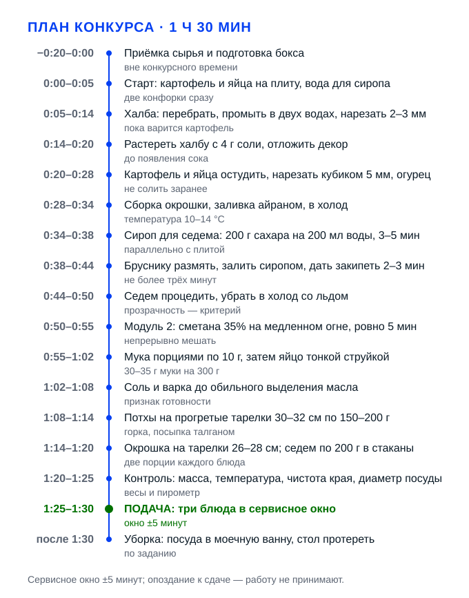
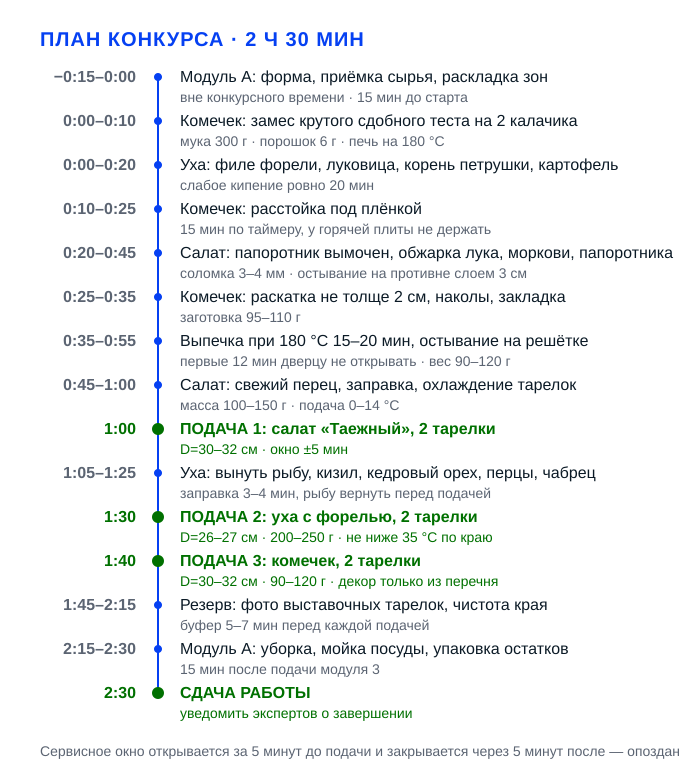
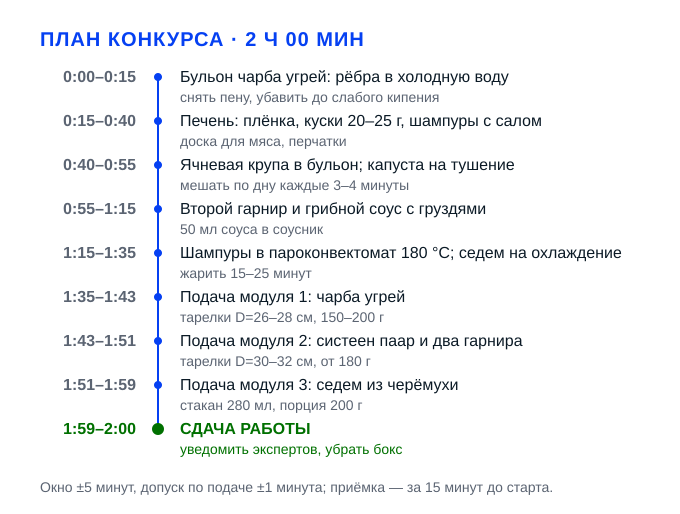

Повар региональной кухни (хакасская кухня) (Р)
Задания ниже — официальные файлы «Абилимпикс» (источник: abilympics-russia.ru), разложенные по категориям. Решения написаны по тексту задания, регламенту и критериям оценки; в них указано, что именно проверяет эксперт.
Школьник
14–16 лет, базовый уровень заданияВыдержка из официального конкурсного задания: страницы, относящиеся к категории «Школьник» (стр. 5–6 источника).
Пошаговое решение
За полтора часа в одном боксе нужно собрать три разных по технике блюда хакасской кухни: холодную окрошку с халбой на айране, горячую кашу «Потхы» из сметаны и холодный напиток «Седем» из брусники. Сложность в том, что все три процесса идут параллельно и сходятся в одну точку — сервисное окно, которое открывается за пять минут до подачи. Окрошка должна быть холодной, с температурой тарелки 10–14 °С и массой 150–200 граммов; каша подаётся горячей, от 35 °С, и требует толстостенной посуды и помешивания, иначе сметана пригорит, а мука пойдёт комками; седем разливается в стаканы 280 мл строго по 200 граммов. Порядок работы важнее скорости: сначала на плиту ставится картофель и яйца, пока они варятся — обрабатывается халба, потом собирается окрошка и убирается в холод, и только затем — каша. Эксперт видит работу дважды: по ходу — санитарию и технологию, на подаче — массу, температуру и вкус.

Задача 1. Подготовить бокс и принять сырьёОрганизация рабочего места · 20 минут вне конкурсного времени
Двадцать минут до старта даются не на готовку, а на приёмку и разметку рабочего места, и это самый выгодный отрезок конкурса: здесь ещё можно получить недостающий продукт и спокойно выстроить план на полтора часа. К старту должно быть чистое рабочее место, проверенное сырьё по девяти позициям основного перечня и трём позициям общего стола, инвентарь по зонам и написанный от руки план, в каком порядке вы поставите на плиту картофель, сметану и сироп. Всё недоделанное в эти двадцать минут потом отнимается у модулей, а время на три модуля общее — не более полутора часов.
Действие 1.1. Войти в бокс по санитарным правилам
Шаг 1.1.1
Надеваем полный комплект санитарной одежды: куртку или фартук с нагрудником, головной убор и закрытую обувь на нескользящей подошве. Колпак или косынку сажаем так, чтобы волосы были убраны полностью — и надо лбом, и на затылке, потому что именно с затылка прядь падает в тарелку в самый неподходящий момент. Рукава подворачиваем выше локтя: длинный рукав касается продуктов, цепляется за ручку сотейника и тянется к конфорке. Куртку застёгиваем на все пуговицы, фартук завязываем так, чтобы он закрывал грудь до пояса.
Санитарная одежда — первое, что эксперт отмечает в листе оценки, причём не «в целом», а по конкретным признакам: чистая ли, застёгнута ли, убраны ли волосы. Выбившаяся прядь формально является нарушением санитарных требований, и балл по этому критерию снимается независимо от того, насколько удачной получилась окрошка. Закрытая обувь на нескользящей подошве — ещё и безопасность: на полу вода и капли масла, а рядом кипящая сметана.
Отойдите к зеркалу или попросите волонтёра посмотреть со спины: волос не видно ни спереди, ни сзади, куртка застёгнута и не топорщится, обувь закрытая и сухая, рукава не спускаются ниже локтя. Отдельно проверьте, ровно ли завязан фартук: перекошенная завязка читается как небрежность с первого взгляда, ещё до того, как вы взяли в руки нож.
Частая ошибка — посадить колпак «на макушку», оставив затылок открытым: спереди всё аккуратно, а сзади волосы выбиваются, и эксперт, который обходит боксы со спины, это видит. Вторая — прийти в открытой обуви, рассчитывая надеть спецодежду «потом»: время уйдёт из модулей, а балл по санитарии уже не восстановить.
Эксперт проверяет комплект до старта, а дальше следит, остаётся ли одежда чистой по ходу работы: брызги айрана и мука на груди к середине конкурса тоже считаются нарушением.
Шаг 1.1.2
Моем руки с мылом до запястий, не меньше двадцати секунд, отдельно прорабатывая большие пальцы, между пальцами и под ногтями, затем вытираем одноразовым полотенцем и выбрасываем его сразу. Повторяем каждый раз, когда перешли от сырого продукта к готовому: после яиц и очищенного картофеля, после работы с зеленью, после уборки и после того, как поправили колпак или лицо. Если работаете в перчатках, меняем их по той же логике, а не «когда порвутся».
Персональная гигиена — основа санитарного блока, который оценивается отдельным критерием. Логика простая: на сырых яйцах и на картофеле с землёй остаются бактерии, и если после них взяться за нарезанную халбу или за огурец, готовое блюдо станет опасным, причём внешне это никак не проявится. Окрошка и седем не проходят тепловую обработку после сборки, поэтому для них чистота рук — единственный барьер.
Руки сухие, полотенце использованное и уже в мусоре, а не на столе. Проверить себя легко по правилу «сырое — готовое»: если вы только что чистили варёный картофель руками и собираетесь резать огурец, руки надо мыть, даже если они выглядят чистыми.
Классическая ошибка — протереть руки о фартук: визуально они сухие, но фартук превращается в переносчик, и внимательный эксперт это замечает. Вторая — помыть руки один раз в начале и считать вопрос закрытым: оценивается процесс, а не стартовое состояние.
Эксперт смотрит на руки в течение всего конкурса, а не только на входе, и отмечает, моется ли инвентарь после контакта с сырым продуктом. На подаче он отдельно проверяет, что руки мылись и после уборки, и после правки колпака.
Шаг 1.1.3
Снимаем часы, кольца, браслеты и длинные серьги, ногти должны быть коротко подстрижены, без лака и покрытия. Длинные волосы закалываем под колпак дополнительными шпильками: одного колпака на густые волосы часто не хватает, и это нормально — лучше потратить минуту сейчас. Часы удобно оставить на столе, но не рядом с продуктами, а в зоне, где лежат только инструменты.
Под украшениями остаются загрязнения, которые не снимаются обычным мытьём рук, а камень из кольца или звено браслета могут оказаться в нарезанной массе. Для блюда, которое потом пробуют эксперты, это не мелочь: посторонний предмет в тарелке — обнуление модуля и разговор с главным экспертом, каким бы вкусным ни было блюдо. Часы на руке вдобавок цепляются за борта посуды.
Руки осмотрены: украшений нет, ногти короткие, покрытия нет, волосы держатся под колпаком при наклоне головы. Если кольцо снимается тяжело, снимайте его заранее, дома, а не в боксе за минуту до старта.
Оставить обручальное кольцо «оно же не мешает» — самая частая ошибка, и объяснение «я привык» не принимается. Вторая — заколоть волосы одной шпилькой: при первом же наклоне над кастрюлей прядь выпадает.
Отдельный пункт в чек-листе санитарии: эксперт проверяет руки на входе и выборочно в процессе работы, особенно перед сборкой холодных блюд. Проверка идёт без предупреждения, поэтому кольцо снимают дома.
Шаг 1.1.4
Если привезли свой инвентарь в тулбоксе — достаём его сейчас и проверяем: ножи наточены, ручки целые, сито без ржавчины, весы работают, термощуп показывает комнатную температуру. Всё привезённое должно быть заранее согласовано с организаторами; то, что не согласовано, остаётся в тулбоксе. Неисправный инвентарь — скол на ручке, шатающийся черенок ножа, треснувший стакан — убираем сразу, а не «приспособим».
В конкурсном задании прямо сказано: разрешено использовать дополнительный, заранее согласованный инвентарь и малогабаритное оборудование из тулбокса, а неисправный инвентарь и оборудование, нарушающие технику безопасности и пожарную безопасность, запрещены. Для этой категории собственный нож и маленькие весы реально экономят минуты: килограммовые весы с точностью до пяти граммов не годятся, когда нужно отвесить 200 граммов седема.
Каждый предмет проверен руками: нож режет бумагу без нажима, весы показывают 0 после обнуления, термощуп при замере в стакане с холодной водой показывает её реальную температуру. Всё согласованное лежит в боксе, несогласованное — в тулбоксе закрытым.
Принести с собой то, о чём не предупредили организаторов, и в середине конкурса услышать, что пользоваться нельзя. Вторая ошибка — взять тупой нож «всё равно режет»: на нарезке кубика 5 мм он давит огурец и вытягивает сок.
Эксперт смотрит, чем участник работает, и оценивает в том числе культуру инструмента: острый нож и раздельные доски читаются как профессиональная привычка.
Действие 1.2. Принять и проверить сырьё
Шаг 1.2.1
Раскладываем продукты по перечню и сверяем с заданием: халба 100 граммов, картофель 300 граммов, яйца 3 штуки, огурец свежий 100 граммов, айран 500 граммов, сметана 35% 300 граммов, мука пшеничная 50 граммов, брусника 200 граммов, сахар 200 граммов. Отдельно проверяем общий стол: соль 10 граммов, перец чёрный молотый 10 граммов, талган 20 граммов. Список держим перед глазами и отмечаем карандашом.
По правилам этой категории продукты выдаются всем в равном количестве и заказывать их не нужно, поэтому приёмка — единственный момент, когда расхождение ещё можно предъявить. Если участнику не нужно всё количество, остаток он убирает в отведённое место для хранения, а при необходимости берёт продукты с общего стола. Взвешивание сразу экономит нервы: 300 граммов сметаны 35% — ровно столько уходит в кашу на две порции по 150–200 граммов.
Все девять строк основного перечня и три строки общего стола отмечены, каждый вес проверен на весах с точностью до грамма. Расхождения записаны: чего нет, сколько нет, в каком виде продукт пришёл — целым, нарезанным, замороженным.
Начать готовить, не сверив перечень, и в середине работы обнаружить, что айрана меньше, чем нужно на заливку двух порций. Вторая ошибка — не взвешивать сметану, а делить «на глаз»: каша на глаз уходит в 220–230 граммов на порцию и вылетает из допуска 150–200.
Умение работать по списку входит в критерий организации рабочего места, и эксперт видит, сверялся ли участник с перечнем или импровизировал. Сомнительную позицию он просит назвать точно: что, сколько, в каком виде.
Шаг 1.2.2
Проверяем качество каждой позиции. Сметана 35% — однородная, без желтизны и кислого запаха, ложка стоит в ней с усилием; айран — свежий, без газа и расслоения, после взбалтывания однородный; яйца — целые, чистые, без трещин; брусника — упругая, без плесени и подгнивших ягод; картофель — плотный, без зелёных пятен и ростков; огурец — упругий, не вялый; халба — свежая, ярко-зелёная, без жёлтых листьев и слизи; мука — сухая, без комков.
Из испорченного продукта безопасное блюдо приготовить нельзя, а в этой компетенции оценивают не только вкус, но и соблюдение санитарных норм. Особенно внимательно смотрим сметану: именно она идёт в кашу, которую варят на медленном огне, и любой посторонний привкус усиливается при нагреве, потому что вкус концентрируется вместе с выпариванием влаги.
Проверяйте тремя органами чувств: глазами (цвет, блеск, однородность), носом (свежий кисломолочный запах без дрожжевого оттенка) и пальцами (упругость ягод и огурца). Сомневаетесь в одной позиции — отложите её в сторону и идите к эксперту, а не «перерабатывайте» в блюдо.
Самая опасная ошибка — взять сметану с истёкшим сроком «на вид нормальную»: при нагреве она свернётся хлопьями, и каша распадётся на сыворотку и творожистую массу, а вернуть её в однородное состояние уже не получится. Вторая — молча выбросить испорченный продукт: замену не дадут, и вы останетесь без компонента.
Органолептическая проверка сырья — отдельный пункт оценки приёмки, и эксперт может подойти и спросить, что именно участник проверял и почему забраковал продукт.
Действие 1.3. Организовать зоны бокса и выстроить план на полтора часа
Шаг 1.3.1
Размечаем бокс на зоны и раскладываем инвентарь заранее: слева — разделочные доски и ножи для овощей, яиц и зелени, в центре — весы и посуда для сборки, справа у плиты — сотейник с толстостенным дном, лопатка, полотенце. Холодную зону под окрошку и седем отделяем от горячей: тарелки для холодных блюд не должны стоять рядом с конфоркой. Доску для зелени и доску для вареных продуктов держим раздельно или моем между операциями.
Порядок в боксе — это не эстетика, а время. Когда доски, ножи и весы стоят по местам, на переходы не уходит по тридцать секунд сорок раз подряд, а полтора часа на три модуля — это очень плотный бюджет. Раздельные доски нужны ещё и потому, что оценивается санитарное состояние: работа на одной доске с зеленью и варёным яйцом эксперт считает нарушением.
Проверьте зоны рукой: холодная часть стола действительно холодная и прикрыта от плиты, горячая — рядом с конфоркой, весы обнулены, мусорное ведро под столом и открыто. Пройдите взглядом по маршруту «стол — плита — мойка — сервисное окно» и убедитесь, что нигде не придётся обходить соседа.
Свалить всё в одну кучу у мойки, потому что «так быстрее достать»: через двадцать минут эта куча превращается в источник ошибок, а мокрая доска под яйцами даёт лишнюю влагу в окрошке. Вторая ошибка — поставить тарелки для холодных блюд рядом с плитой.
Организация рабочего места — самостоятельный критерий, и эксперт обходит боксы в первые минуты: именно тогда видно, думал ли участник о зонах заранее или начал раскладываться в процессе.
Шаг 1.3.2
Пишем план на полтора часа от руки, крупно, и ставим перед собой. Порядок такой: сразу закладываем вариться картофель в мундире и яйца, пока они на огне — перебираем и режем халбу, затем ставим сироп для седема и разминаем бруснику, собираем окрошку и убираем её в холод, и только потом занимаем плиту кашей, потому что каша варится непрерывно и её нельзя оставить. Последние десять минут — контроль массы, температуры и чистоты краёв трёх подач.
Общее время на модули 1, 2 и 3 — не более 1 часа 30 минут, и внутри него нет отдельных окон: если вы задержались на окрошке, время ушло у каши. Параллельная работа с плитой даёт главный выигрыш: картофель варится 20–25 минут сам, и эти минуты надо потратить на халбу и бруснику, а не на ожидание у кастрюли. Каша ставится последней именно потому, что сметана после выделения масла быстро расслаивается.
Написанный план висит перед глазами, время в нём расписано по операциям, а не по блюдам. Сверьтесь с часами через полчаса: если вы всё ещё режете картофель, план пора менять — переставьте кашу на первое место и сократите декор.
Планировать «по блюдам»: сделать окрошку целиком, потом кашу целиком, потом седем — так вы почти наверняка не успеете, потому что каждая следующая операция ждёт предыдущую, а картофель варится впустую двадцать минут.
Умение распределить время внутри общего бюджета — часть организационного критерия, и эксперты на подаче прекрасно видят, кто работал по плану, а кто догонял.
Шаг 1.3.3
Включаем плиту заранее и готовим две ёмкости: кастрюлю на 2 литра для картофеля и яиц и сотейник с толстостенным дном для каши. Воду в кастрюле солим сразу (примерно половину выделенного 10 граммов соли), доводим до кипения и только потом закладываем картофель — так он варится быстрее и промывается ровнее. Яйца удобно варить в отдельной маленькой кастрюле или опускать в ту же воду после картофеля, но тогда нужно следить за временем.
Заранее вскипячённая вода экономит четыре-пять минут, а на полтора часа это заметная доля бюджета. Засолка воды из общего фонда соли нужна, чтобы не солить картофель потом «по вкусу» и не переложить: картофель для окрошки не должен быть солёным отдельно, потому что соль уже придёт с халбой и айраном, и общая солёность — то, что эксперт попробует первым.
Вода кипит умеренно, пузыри идут со дна, но не бурлят ключом. Соль на вкус чувствуется как слабый бульон, а не как рассол. Яйца опущены так, что вода их полностью закрывает. Плюс проверьте, что план лежит на виду, а не в кармане: к нему придётся возвращаться каждые десять минут.
Залить картофель горячей водой — он разваривается снаружи и остаётся твёрдым внутри. Вторая ошибка — варить в сильно солёной воде, чтобы «не недосолить»: картофель сварится, но окрошка станет солёной ещё до добавления айрана.
Технологические приёмы и последовательность операций — отдельная часть оценки, эксперт смотрит, в каком порядке участник загружает плиту. Он же смотрит, лежит ли перед участником план с таймингом.
Задача 2. Модуль 1: окрошка с «Халбой», две порцииМодуль 1 · две порции по 150–200 г, тарелка 10–14 °С
Окрошка — холодное блюдо без последующей тепловой обработки, поэтому всё решают нарезка, температура и баланс айрана. По заданию промытую халбу мелко нарезают и растирают, отварной картофель и яйцо режут мелким кубиком, добавляют свежий огурец и заливают свежим айраном. Подача определена жёстко: масса порции 150–200 граммов, температура тарелки 10–14 °С, белая круглая глубокая тарелка с плоскими полями диаметром 26–28 сантиметров, декор только из продуктов перечня, без несъедобных компонентов. Порций две, и они идентичны: одна идёт на измерения и фото, вторая — в дегустацию.
Действие 2.1. Обработать халбу
Шаг 2.1.1
Халбу перебираем: убираем жёлтые и подсохшие листья, плёнку, случайную траву и песок. Промываем в двух водах холодной водой — сначала в миске, где оседает песок, потом под проточной струёй, каждую веточку разводя рукой. Затем обязательно обсушиваем: раскладываем на полотенце или прокручиваем в центрифуге для зелени и хорошо встряхиваем, чтобы не осталось воды в пазухах листьев.
Халба — это сибирская черемша, дикий чеснок, и именно от её свежести зависит главный вкус окрошки: у неё нет тепловой обработки, поэтому всё, что попало в зелень вместе с песком, окажется в тарелке. Вода на листьях — вторая проблема: она разбавит айран, и заливка станет жидкой и бледной, а густота заливки в этом блюде читается как аккуратность работы.
Зелень сухая на ощупь, песок не хрустит на зубах при пробе самого маленького листа, вода не стекает с пучка при встряхивании. Понюхайте: аромат должен быть резким, чесночным, без затхлости — затхлый запах значит, что зелень лежала в тепле.
Промыть один раз в миске и сразу резать: песок остаётся между листьями, и в готовой окрошке он хрустит на зубах у эксперта. Вторая ошибка — резать мокрую зелень: она липнет к ножу, рвётся, а лишняя вода уходит в айран.
Чистота обработки сырья — пункт санитарного критерия, эксперт смотрит, в какой воде и сколько раз промывается зелень. Сухую зелень он отличает на глаз: мокрая липнет к ножу и рвётся при нарезке.
Шаг 2.1.2
Режем халбу мелко, полосками не шире двух-трёх миллиметров: сначала срезаем грубые черешки у основания, затем рубим листья поперёк волокна на доске для зелени. Нож держим остро наточенным, доску — неподвижно, второй рукой придерживаем зелень «когтями», подгибая кончики пальцев. Нарезаем всю порцию разом, а не частями, чтобы кусочки были одинаковыми.
По заданию халбу положено мелко нарезать: крупные куски не дадут ни равномерного вкуса, ни аккуратного вида, а в холодном блюде они ещё и выделяются на фоне ровного кубика картофеля. Ровная мелкая нарезка — это то, что эксперт видит ложкой в первой же пробе, и одновременно признак владения ножом, который оценивается отдельно.
Полоски одинаковые, шириной около 2–3 миллиметров, черешки не торчат палками, на доске нет зелёной кашицы от раздавленных листьев. Проверьте щепоткой на ладони: кусочки не слипаются в комок. Дополнительно посмотрите на доску после нарезки: сока на ней должно быть немного, иначе зелень резалась тупым ножом.
Рубить слишком крупно «чтобы чувствовался вкус»: в окрошке крупный лист вытягивается ложкой целиком, и блюдо едят неровно. Вторая ошибка — тупой нож: он давит зелень и выдавливает сок на доску, а в блюдо попадает уже сухая масса.
Техника нарезки оценивается визуально на подаче и по ходу работы, эксперт подходит к столу в момент, когда участник режет зелень. Сок на доске и зелёная кашица говорят ему о тупом ноже.
Шаг 2.1.3
Отвешиваем примерно 4 грамма соли из общего фонда (всего на участника даётся 10 граммов) и растираем нарезанную халбу с этой солью в миске ложкой или пестиком полторы-две минуты, до появления тёмно-зелёного сока и сильного чесночного запаха. Растираем именно в миске, где будет собираться окрошка, чтобы сок не потерялся. После растирания даём массе постоять 3–5 минут.
Растирание с солью — не украшение рецепта, а способ вытянуть аромат: клетки листа лопаются, эфирные масла выходят в сок, и запах распределяется по всему блюду, а не остаётся в отдельных кусках. В задании этот шаг прописан отдельно — «промытую халбу мелко нарезать и растереть», — и эксперт понимает разницу между растёртой и просто нарезанной зеленью по первой же ложке: во втором случае вкус плоский.
Масса осела, дала сок, при перемешивании ложка проходит с усилием, запах резкий и ровный. Соли на вкус должно быть чуть больше, чем хочется: дальше в блюдо придёт пресный айран и несолёный картофель. Ещё один признак: после растирания объём массы уменьшается примерно на четверть — листья оседают и отдают сок.
Растереть с половиной соли, а потом досаливать айран «по вкусу» — почти всегда получается пересол, потому что соль в заливке чувствуется сразу. Вторая ошибка — растирать в отдельной посуде и перекладывать: сок остаётся на стенках и уходит в мойку.
Технология приготовления — ключевой критерий модуля, и вкус халбы после растирания эксперт проверяет в дегустации первым делом. Проба начинается с зелени: нерастёртая халба даёт плоский вкус.
Шаг 2.1.4
От растёртой халбы отделяем небольшую часть — примерно десятую — и откладываем в отдельную маленькую мисочку для декора. Отбираем самые ровные листочки, не запутавшиеся в общей массе, и держим их в холоде до момента выкладки. Ничего, кроме продуктов из перечня, для оформления не используем: ни зубочисток, ни веточек, ни бумаги. Мисочку с декором ставьте в холод, а не рядом с плитой: от тепла листья вянут за десять минут.
Декор допускается только из продуктов перечня и на выбор участника — это условие задания, а использование несъедобных компонентов, дополнительных аксессуаров и вспомогательного инвентаря на тарелках прямо запрещено. Отложенная заранее зелень нужна потому, что в общей массе листья уже потеряли форму: они дали сок и потемнели, а на поверхности они выглядят неаккуратно.
Отложенная зелень свежая, яркая, не в соке, лежит отдельно и не смешивается с основной массой. Проверьте перед выкладкой, что в мисочке нет посторонних предметов — ложки, зубочистки, крышки. Проверьте, что отложенная зелень не лежит в соке: если да, промокните её полотенцем перед выкладкой.
Откладывать декор из уже залитой айраном массы: листья покроются белым налётом и будут выглядеть грязно. Вторая ошибка — украсить тарелку несъедобной зеленью с общего стола, которой нет в перечне: это прямое нарушение условий подачи.
Оформление оценивается отдельно, и эксперт на подаче специально смотрит, всё ли на тарелке съедобно и входит ли декор в разрешённый перечень. Он ищет в декоре продукты не из перечня — это нарушение.
Действие 2.2. Подготовить картофель, яйцо и огурец
Шаг 2.2.1
Картофель (300 граммов) моем щёткой, закладываем в кипящую подсоленную воду целиком, в мундире, и варим 20–25 минут при умеренном кипении. Крупные клубни можно разрезать на две части, чтобы они сварились одновременно с мелкими. Готовность проверяем тонким ножом или шпажкой: нож входит в центр клубня без усилия, клубень при этом не разваливается. Крупные клубни разрежьте пополам, чтобы всё сварилось одновременно.
Картофель в мундире для окрошки — правильнее, чем очищенный: в кожице он теряет меньше крахмала и не набирает лишнюю воду, а значит кубик держит форму и блюдо не превращается в пюре с айраном. Одновременная готовность важна потому, что картофель нельзя варить «дольше для верности»: переваренный клубень нарезать ровным кубиком уже не получится.
Нож входит в центр без усилия, кожура не лопается, клубень держится целым на вилке. Если нож встречает сопротивление в середине — варите ещё 3–4 минуты и проверяйте снова. Проверьте все клубни по очереди, а не один: у крупных нож должен входить так же легко, как у мелких.
Варить картофель кубиком заранее, «чтобы быстрее»: он набирает воду и разваливается, а кубик получается рваный. Вторая ошибка — выключить плиту и оставить клубни в горячей воде: они доходят до состояния пюре.
Технология тепловой обработки — отдельный критерий, и консистенция кубика в дегустации показывает эксперту, правильно ли варился картофель. Кубик на разрезе показывает, не переварен ли картофель.
Шаг 2.2.2
Сливаем воду и сразу перекладываем картофель на доску или тарелку, чтобы он отдал пар, а не остался мокрым. Охлаждаем до 10–14 °С: быстрее всего — разложить клубни на подносе в один слой в холодной зоне или под вентилятором, не заливая холодной водой. Затем очищаем от кожицы тонким слоем, стараясь не срезать мякоть, и нарезаем кубиком 5 миллиметров.
Окрошка подаётся с температурой тарелки от 10 до 14 °С, и тёплый картофель в глубине массы эту температуру обязательно поднимет: заливка холодная, а внутри остаётся тепло. Охлаждение на воздухе, а не в воде, сохраняет рассыпчатость — в воде картофель набирает влагу и становится водянистым. Кубик 5 миллиметров задаёт общий размер нарезки: огурец и яйцо режутся так же, иначе блюдо выглядит небрежно.
Картофель на ощупь холодный, поверхность сухая, кубик ровный, при нажатии пальцем пружинит, а не рассыпается. Проверьте размер линейкой на трёх кубиках: 5 миллиметров — это примерно ширина ногтя ребром. Проверьте температуру термощупом: 10–14 °С на поверхности кубика, а не только на крупных кусках.
Остужать картофель под струёй холодной воды: кожица отходит легко, но мякоть набирает воду, и в окрошке появится водянистый вкус. Вторая ошибка — нарезать горячий картофель: кубик рвётся, а масса становится клейкой.
Консистенция и ровность нарезки видны в первой ложке, а температура проверяется пирометром на подаче. Температуру он меряет сразу при приёме, и тёплый картофель в глубине виден.
Шаг 2.2.3
Яйца (3 штуки) опускаем в кипящую воду и варим 9–10 минут с момента закипания, затем сразу перекладываем в холодную воду на две минуты. Чистим под струёй воды, начиная с тупого конца, где воздушный мешок, и нарезаем кубиком 5 миллиметров, как картофель. Одно яйцо из трёх оставляем в резерв: в окрошку на две порции по 150–200 граммов уходит примерно полтора-два яйца, остальное либо пойдёт в декор, либо останется неиспользованным.
Девять-десять минут — время, при котором желток остаётся плотным, но не сизым: переваренный желток даёт серо-зелёный ободок и серный запах, который в холодном блюде чувствуется особенно резко. Резерв из одного яйца нужен потому, что считать граммы на глаз по кубику невозможно, а выйти за верхнюю границу 200 граммов на порцию нельзя.
Белок упругий, желток ярко-жёлтый, без серого кольца, кубик ровный, при нарезке не мажется. Если желток рассыпается в крошку — яйцо переварено, для дегустации оно уже не годится. На разрезе белок плотный, а не желеобразный, желток держит форму и не мажется по ножу.
Варить яйца «пока не покажутся готовыми» и получить недоваренный белок: в холодном блюде он желеобразный и скользкий, а блюдо из-за этого выглядит недоделанным. Вторая ошибка — чистить горячие яйца: белок срывается вместе со скорлупой.
Готовность и аккуратность нарезки яйца — часть критерия вкуса и внешнего вида, эксперт замечает серый ободок вокруг желтка сразу. Серый ободок у желтка он видит раньше, чем пробует блюдо.
Шаг 2.2.4
Огурец (100 граммов) моем, обсушиваем и пробуем на горечь: если кожица горчит, срезаем её тонко, у крупных экземпляров удаляем водянистую середину с семенами. Нарезаем кубиком 5 миллиметров и держим отдельно до сборки, не пересыпая солью. Сок, который выделился на доске, сливаем, а не выливаем в миску. Режем в два прохода: сначала пластинами по пять миллиметров, затем полосками и поперёк — кубиком.
Огурец даёт окрошке свежесть и хруст, и именно он теряет её первым: посоленный заранее, он через десять минут плавает в собственном соке и становится мягким. Водянистая середина разбавляет айран, поэтому у плотных тепличных огурцов её лучше вырезать. Горечь кожицы в холодном блюде не маскируется ничем.
Кубик ровный, 5 миллиметров, огурец хрустит на зубе, сок на доске не стоит лужей. Проверьте вкус одного кусочка: горечи быть не должно, иначе срезайте кожицу полнее. Возьмите горсть кубика в ладонь: грани ровные, размер одинаковый, сока на ладони почти нет.
Посолить огурец заранее, «чтобы дал сок» — в окрошке это даёт водянистую, мутную заливку. Вторая ошибка — натереть огурец на тёрке: в холодном супе тёртая масса оседает на дно бесформенной кашей. Третья частая ошибка — резать огурец на мокрой доске: вода стекает в миску и разбавляет заливку.
Ровность кубика огурца и яйца — то, по чему эксперт оценивает владение ножом, а хруст отмечается в дегустации. Побледневший огурец и сок на доске выдают раннюю засолку.
Действие 2.3. Собрать, залить айраном и оформить две порции
Шаг 2.3.1
Собираем массу в миске: к растёртой халбе добавляем картофель (примерно 110–120 граммов), яйцо (полтора-два яйца), огурец (около 50 граммов) и перемешиваем лопаткой снизу вверх, не разминая. Общая плотная часть на две порции должна получиться около 140–160 граммов, чтобы после заливки каждая порция весила 150–200 граммов. Пробуем на соль и перец, добавляя их понемногу.
Плотная часть и заливка — две части одного блюда, и если плотной части слишком много, порция выйдет за 200 граммов, а если мало — блюдо будет выглядеть как жидкий айран с плавающей зеленью. Перемешивание снизу вверх, а не круговым растиранием, сохраняет форму кубика: размятый картофель даёт мутную, клейкую массу.
На ложке видно ровные кубики картофеля, яйца и огурца в примерно равных долях, зелень распределена равномерно, а не лежит комком. Масса на вкус чуть недосолена: соль ещё придёт с айраном. Взвесьте плотную часть до заливки: весы должны показать 140–160 граммов на две порции.
Перемешать всё в кашу, чтобы «вкус был однородным»: в окрошке ценят именно раздельные текстуры, и размятая масса выглядит как остатки. Вторая ошибка — не взвесить плотную часть и потом обнаружить, что порция весит 230 граммов.
Соотношение компонентов и вкус оцениваются в дегустации, эксперт пробует блюдо, не перемешивая его предварительно. В ложке он ищет три различимые текстуры, а не однородную массу.
Шаг 2.3.2
Айран (500 граммов) заранее охлаждаем, затем размешиваем до однородности: он часто расслаивается при хранении. Солим заливку отдельно на 2–3 грамма соли и добавляем щепотку чёрного молотого перца, размешиваем и пробуем. Заливка должна быть текучей, как кефир, но не водянистой: при желании можно ввести половину чайной ложки талгана с общего стола, чтобы она держалась на ложке.
Айран — это и есть «бульон» окрошки, и вся солёность блюда приходит именно отсюда: солить заливку отдельно нужно, чтобы потом не досаливать тарелку и не получить неравномерный вкус. Охлаждённый айран нужен для температурного требования 10–14 °С на тарелке: тёплая заливка в холодной тарелке всё равно поднимется выше нормы.
Заливка однородная, без комков и крупинок, на вкус умеренно солёная, с лёгкой кислинкой, перец чувствуется, но не перебивает. Проверьте температуру термощупом: 8–10 °С, чтобы после контакта с продуктами выйти на 10–14 °С.
Солить айран «по вкусу», не пробуя плотную часть: соль в жидком и в плотном компоненте ощущается по-разному, и в сумме блюдо выходит пересоленным. Вторая ошибка — заливать тёплым айраном прямо из пакета, который стоял у плиты.
Температура подачи и вкус заливки — прямые критерии оценки, эксперт измеряет температуру тарелки на подаче. Он проверяет, не перебивает ли перец халбу, и нет ли крупинок.
Шаг 2.3.3
Раскладываем массу по двум белым круглым глубоким тарелкам с плоскими полями диаметром 26–28 сантиметров, заранее охлаждённым, и заливаем айраном так, чтобы жидкость покрывала плотную часть и до бортика оставалось 1–1,5 сантиметра. Сверху выкладываем отложенную свежую халбу — двумя-тремя листиками в одной зоне, без «букета» по центру. Край тарелки протираем насухо сухим полотенцем.
Тарелка заданного типа — условие задания, и не тарелка, не тот диаметр или декор на борту снимают балл по критерию подачи. Уровень жидкости ниже бортика нужен потому, что окрошку несут через зал: полная тарелка расплёскивается, а пятна на крае — первое, что видит эксперт. Декор в одной зоне читается как задуманный, а не рассыпанный.
Масса в тарелке распределена ровно, заливка не доходит до края, край сухой и чистый, диаметр совпадает с 26–28 сантиметрами, декор лежит в одной зоне и он из перечня продуктов. Проведите пальцем по борту изнутри: он холодный и сухой, без капель и разводов от воды.
Налить айран до самых полей: при переноске заливка уходит через край, и тарелка приезжает к эксперту с потёками. Вторая ошибка — украсить борт тарелки несъедобными элементами или поставить на тарелку дополнительный инвентарь.
Правильность и аккуратность подачи — отдельный критерий, эксперт осматривает тарелку до дегустации и фотографирует её. Диаметр он сверяет с заданным, а борт — на отпечатки пальцев.
Шаг 2.3.4
Перед выносом проверяем каждую из двух тарелок по одному списку: масса в пределах 150–200 граммов (взвешиваем на весах, поставив тарелку на ровную поверхность и обнулив вес посуды), температура поверхности тарелки 10–14 °С по пирометру, край сухой, декор съедобный, обе тарелки одинаковые по составу и оформлению. Держим окрошку в холодной зоне до самой подачи, не выставляя на стол заранее.
Измеримые показатели — масса и температура — проверяются на подаче буквально прибором, и именно они чаще всего уводят баллы: 145 граммов вместо 150 или 16 °С вместо 14 — уже нарушение, даже если блюдо вкусное. Одинаковость двух порций нужна потому, что одну тарелку оценивают и фотографируют, а вторую пробуют, и разница между ними воспринимается как нестабильность работы.
Вес на весах показывает 150–200 граммов с учётом тары, пирометр по краю и в центре даёт 10–14 °С, обе тарелки при взгляде сверху выглядят как близнецы. Температуру лучше мерить в двух точках: у края она всегда чуть выше.
Проверить только одну тарелку, считая вторую копией: вторая обычно набирается быстрее, и разница в 20–25 граммов видна и на весах, и на глаз. Вторая ошибка — выставить окрошку на стол за десять минут до подачи, где она нагреется.
Взвешивание и замер температуры эксперт делает сам на своей площадке, поэтому цифры должны быть в норме с запасом, а не на самой границе. Тарелку для измерений он забирает первой и судит по ней о порциях.
Задача 3. Модуль 2: каша «Потхы» из сметаны, две порцииМодуль 2 · две порции по 150–200 г, тарелка от 35 °С
«Потхы» — короткое, но самое капризное блюдо конкурса: сметану 35 процентов варят пять минут на медленном огне, затем порциями, постоянно помешивая, вводят пшеничную муку, вливают подготовленное яйцо, солят и варят до обильного выделения масла. Всё держится на толстостенной посуде и непрерывном помешивании: сметана с мукой пригорает за десять секунд и восстановлению не подлежит. Подача на белой плоской тарелке 30–32 сантиметра, масса 150–200 граммов, температура от 35 °С, порции две и идентичны. Выделившееся масло — признак готовности, и именно по нему эксперт понимает, доведена ли каша.
Действие 3.1. Подготовить посуду, продукты и рабочее место у плиты
Шаг 3.1.1
Берём сотейник или казанок с толстостенным дном на 1–1,5 литра: тонкостенная кастрюля для «Потхы» не годится, потому что сметана горит именно у дна. Посуду ополаскиваем и насухо вытираем — вода в жирной сметане даёт разбрызгивание. Рядом ставим силиконовую или деревянную лопатку с длинной ручкой, сухое полотенце и тарелку для готовой каши. Проверяем, что ручка сотейника не нагревается и стоит так, чтобы её не задеть локтем.
Толстостенное дно распределяет тепло равномерно, и сметана прогревается без локальных перегревов — в задании этот пункт прямо назван: варить в посуде с толстостенным дном. Деревянная или силиконовая лопатка не царапает дно, а значит не создаёт мест, к которым прилипает белок. Ручка, повёрнутая от прохода, — это требование безопасности: у плиты работают рядом другие участники.
Дно ровное, без вмятин, стенки не менее трёх миллиметров на ощупь, посуда сухая внутри. Лопатка проходит по всему дну, включая угол между дном и стенкой — именно там чаще всего остаётся нетронутый слой.
Взять тонкую кастрюлю «какая есть»: сметана пригорает кольцом, и в кашу попадают тёмные вкрапления, которые уже не убрать. Вторая ошибка — работать металлической ложкой по эмалированному дну и оставить сколы.
Подготовка оборудования и посуды — часть критерия организации, эксперт смотрит, чем участник собирается варить, ещё до начала работы. Тонкая кастрюля и металлическая ложка сразу говорят о риске пригорания.
Шаг 3.1.2
Отвешиваем 300 граммов сметаны 35 процентов — это ровно то количество, которое даётся участнику, и его хватает на две порции по 150–200 граммов. Перекладываем сметану в сотейник и даём постоять 10–15 минут при комнатной температуре, чтобы она согрелась, либо прогреваем на самом слабом огне при постоянном помешивании. Из холодной сметаны каша получается хлопьями, потому что белок сворачивается неравномерно.
Тёплая сметана начинает прогреваться равномерно, и мука, которую введут следом, распределяется без комков. Общее количество важно арифметически: 300 граммов сметаны плюс 30–35 граммов муки и одно яйцо дают примерно 380–390 граммов готовой каши, то есть по 190–195 граммов на порцию — это верхняя граница допуска, и её нельзя превышать добавлением лишней муки.
Сметана в сотейнике однородная, ложка оставляет след, который медленно заплывает, комков нет. На весах до перекладывания было ровно 300 граммов — проверьте и запишите цифру, чтобы потом не гадать о выходе.
Начать с холодной сметаны прямо из холодильника: на слабом огне она прогревается очень медленно, и участник прибавляет газ, а затем получает свернувшийся белок. Вторая ошибка — взять сметану меньшей жирности: масло не выделится, и признак готовности никогда не наступит.
Соответствие рецептуре — прямой критерий: сметана именно 35 процентов, и эксперт может уточнить у участника, сколько граммов он взял. По ответу о весе сметаны он понимает, считал ли участник выход.
Шаг 3.1.3
Муку (50 граммов по перечню) просеиваем через сито прямо в отдельную сухую миску — для работы понадобится только 30–35 граммов, остальное останется. Яйцо разбиваем в другую миску и размешиваем вилкой до однородности, не взбивая в пену: пена при введении в горячую массу лопается и даёт пузыри. Соль отмеряем отдельно — примерно 2 грамма из общего фонда в 10 граммов.
Просеянная мука не содержит слежавшихся комков, и именно поэтому она входит в сметану ровной струёй, а не кусками. Размешанное, но не взбитое яйцо вводится без пузырей и сворачивается равномерно. Соль, отмеренная заранее, а не брошенная на глаз из солонки, даёт предсказуемый вкус: в плотной жирной каше пересол чувствуется сильнее, чем в супе.
Мука прошла через сито без комков, яйцо однородное (белок и желток не разделены), соль отвешена на маленьком блюдце. Всё стоит рядом с плитой в том порядке, в котором будет вводиться. Проведите пальцем по просеянной муке: комков нет, пыль ровная, в сите остались только крупные частицы.
Сыпать муку прямо из пакета: комки не разойдутся даже при интенсивном помешивании, и в готовой каше попадаются мучные сгустки. Вторая ошибка — взбить яйцо в крепкую пену, которая потом осядет хлопьями.
Подготовка компонентов проверяется по ходу: эксперт видит, просеяна ли мука и как отвешивается соль. Пакет муки, высыпанный в сотейник, читается как работа без взвешивания.
Шаг 3.1.4
Организуем место у плиты: сотейник ставим на конфорку, которая держит минимальный огонь ровно, лопатку кладём на подставку справа, полотенце — так, чтобы вытирать руки, не отходя. Заранее подготавливаем зону подачи: две белые круглые плоские тарелки диаметром 30–32 сантиметра, которые будут прогреваться, пока варится каша. Убираем со столешницы у плиты всё лишнее — крошки, полотенца, упаковку.
Каша требует непрерывного помешивания, а значит отойти от плиты будет нельзя: всё нужное должно быть в пределах вытянутой руки, иначе придётся бросать сотейник. Прогретые тарелки нужны для требования «температура подачи от 35 °С»: на холодной плоской тарелке каша остынет за полторы минуты, и никакая температура внутри порции не спасёт замер по краю тарелки.
Всё нужное в радиусе вытянутой руки, конфорка держит ровный минимальный огонь без пульсации, тарелки стоят в тёплом месте. Проверьте ладонью на высоте 10 сантиметров над конфоркой: жар должен быть ощутимым, но не обжигающим.
Поставить кашу на сильный огонь, рассчитывая убавить потом: сметана схватывается у дна в первые же секунды, и характерный привкус горелого уже не убрать. Вторая ошибка — держать тарелки на холодном столе и надеяться, что «каша горячая, тарелка прогреется».
Рабочее место у плиты и порядок на нём — часть критерия организации, эксперт обходит бокс и в середине модуля. Он смотрит на поверхность у плиты: лопатка под рукой, ничего лишнего.
Действие 3.2. Сварить кашу до выделения масла
Шаг 3.2.1
Ставим сотейник со сметаной на минимальный огонь и варим ровно 5 минут, непрерывно помешивая лопаткой по дну и у стенок, «восьмёркой», а не кругами по центру. Масса должна прогреться и слегка загустеть, но не закипеть бурно: при сильном кипении сметана расслаивается. Если появилась мелкая пенка — снимаем её ложкой. Лопатку держим так, чтобы она всё время касалась дна: тогда вы чувствуете, не начало ли что-то прилипать. Полотенце держим под рукой — ручки сотейника горячие.
Пять минут — время, заданное в конкурсном задании, и оно нужно для того, чтобы сметана отдала часть влаги и прогрелась равномерно перед введением муки. Мука, попавшая в непрогретую сметану, оседает на дно и пригорает именно там. Помешивание «восьмёркой» проходит по всей площади дна: круговые движения оставляют в центре неподвижную зону, которая и подгорает.
Пять минут по часам, масса горячая, ложка проходит по дну с заметным сопротивлением, цвет ровный кремовый, комков нет, запах кисломолочный без горечи. Попробуйте на язык каплю с лопатки — горечи быть не должно.
Отвлечься на пять минут «пока греется»: именно в этот момент сметана пригорает по кромке и даёт горький привкус, который потом не перебивается ничем. Вторая ошибка — варить на среднем огне и получить бурное кипение с расслоением.
Тепловая обработка и температура — отдельный критерий, эксперт подходит к плите и смотрит, как участник держит лопатку и на каком огне работает. Он засекает время и следит за огнём: бурное кипение ведёт к расслоению.
Шаг 3.2.2
Вводим просеянную муку порциями по 10 граммов — три-четыре порции — и после каждой тщательно вымешиваем 30–40 секунд, дожидаясь, пока предыдущая порция полностью разойдётся. Муку сыплем тонкой струёй через руку, а не высыпаем горстью. Всего уходит 30–35 граммов на 300 граммов сметаны: масса должна стать густой, как очень жирная сметана, и держать след лопатки.
Порционное введение — единственный способ не получить комки: каждая порция успевает разойтись в горячей массе до следующей. Общее количество муки напрямую определяет выход: если ввести все 50 граммов, каша станет плотной, как заварное тесто, и порция выйдет за 200 граммов, а вкус станет клейким и мучнистым.
Масса однородная, без мучных комочков, лопатка оставляет борозду, которая медленно заплывает. Проведите лопаткой по дну: на ней не должно оставаться сухих белых полос муки. Разотрите каплю массы на белом блюдце: тёмных мучных точек и сухих крупинок быть не должно.
Высыпать всю муку сразу: снаружи она схватывается в комки, внутри остаётся сухой, и вымешать их в густой горячей массе уже невозможно. Вторая ошибка — сыпать муку в кипящую сметану: кипение усиливается, и брызги летят на руки.
Технология введения муки и консистенция — оцениваются и на глаз в боксе, и на вкус в дегустации: мучнистость чувствуется сразу. Густую массу он проверяет ложкой ещё до введения яйца.
Шаг 3.2.3
Снимаем сотейник с огня на 20–30 секунд или убавляем его до минимума и вливаем размешанное яйцо тонкой струйкой при непрерывном быстром помешивании, лучше всего — вводя яйцо в лопатку, над самой массой, а не в центр. После введения возвращаем на огонь и мешаем ещё минуту. Яйцо идёт одно, весом около 50 граммов. Миску с яйцом держим левой рукой над сотейником, правой работаем лопаткой: так струйка идёт медленно и ровно, а не выливается одним движением.
Яйцо сворачивается при 65–70 °С, и если влить его в бурно кипящую массу, оно мгновенно пойдёт хлопьями, которые уже не разбить. Кратковременное снятие с огня снижает температуру на несколько градусов — этого достаточно, чтобы белок распределился, а затем схватился уже внутри однородной массы, давая каше шелковистость. Струйка и быстрое помешивание работают в паре: струйка создаёт тонкую нить яйца, помешивание не даёт ей собраться в ком.
Масса однородная, без белых хлопьев и «яичницы», цвет ровный, консистенция чуть плотнее, чем до введения яйца. Разотрите каплю на блюдце: крупинок и плёнок быть не должно. Осмотрите поверхность при боковом свете: белых хлопьев и полос свернувшегося белка быть не должно.
Влить яйцо в кипящую сметану одним движением — получаются хлопья белка, которые в готовом блюде выглядят как испорченный продукт и дают резинистую текстуру. Вторая ошибка — вводить яйцо, не размешав его предварительно: желток уходит отдельно от белка.
Введение яйца — самый показательный приём модуля, эксперт обычно стоит рядом именно в этот момент. Он засекает, сколько прошло между снятием сотейника с огня и возвращением его назад.
Шаг 3.2.4
Солим кашу (около 2 граммов соли, отвешенных заранее), перемешиваем и варим на минимальном огне до обильного выделения масла: сметана отдаёт жир, и по краям сотейника и на поверхности выступают блестящие масляные лужицы, а масса начинает отходить от стенок. Обычно это занимает 5–8 минут после введения яйца. Как только масло выделилось обильно, огонь выключаем.
Выделение масла — это и признак готовности, и вкус: именно на этой стадии каша перестаёт быть просто густой сметаной с мукой и приобретает тот самый хакасский характер, за который её ценят. Недоваренная каша выглядит бледно и на языке даёт мучнистость, переваренная — расслаивается на жир и плотный осадок. В задании этот признак назван прямо, значит именно по нему эксперт и будет проверять готовность.
Масло блестит по краю и собирается в ложбинки на поверхности, масса отходит от стенок цельным пластом, запах насыщенный топлёно-сливочный. Попробуйте: мучнистости нет, вкус сливочный, соли в меру. Проверьте также, что каша не прихватилась у стенок: тёмная кромка испортит и вид, и вкус порции.
Варить «пока не станет густо» и снять раньше выделения масла: каша останется мучнистой, и часть баллов за готовность уйдёт. Вторая ошибка — передержать на огне в погоне за маслом: масса расслаивается и становится зернистой.
Готовность по выделению масла — ключевой технологический критерий, эксперт проверяет поверхность каши в сотейнике до того, как её разложат. Он может попросить показать лопатку после первого прохода: налипшего слоя быть не должно.
Действие 3.3. Оформить и подать кашу на прогретых тарелках
Шаг 3.3.1
Снимаем сотейник с огня и даём каше 30–60 секунд покоя, чтобы масло собралось, а масса перестала быть обжигающей. За это время вытираем насухо край сотейника и проверяем консистенцию: она должна держать форму горки на лопатке, но при этом медленно сползать. Если каша загустела слишком сильно, вводим одну-две ложки горячего молока или воды — но учтите, что в перечне молока нет, поэтому лучше не доводить до этого.
Полминуты покоя нужны, чтобы при выкладке масло не уходило на тарелку отдельной лужей: в готовом виде каша должна блестеть, а не плавать. Правильная консистенция — это и внешний вид, и текстура в дегустации, и удобство порционирования: из слишком густой массы не получается ровная горка, из слишком жидкой она расползается по плоской тарелке.
Лопатка держит горку, каша не течёт струёй и не стоит колом, масло на поверхности блестит, но не отделяется лужицей по краю. Проба на вкус: соль ровная, мучнистости нет. Поднимите лопатку: каша сползает широкой лентой, а не падает куском и не течёт струёй.
Разбавлять кашу водой «чтобы легче раскладывалась»: вода разбивает эмульсию, и каша расслаивается прямо в тарелке. Вторая ошибка — дать каше полностью остыть в сотейнике: она схватится плотным комком, и порция получится неровной.
Консистенция и внешний вид — прямые критерии, эксперт смотрит на горку и на то, держит ли она форму. Проведя лопаткой по поверхности, он ищет комки и разрывы.
Шаг 3.3.2
Раскладываем кашу по двум прогретым белым круглым плоским тарелкам диаметром 30–32 сантиметра, ставя на весы каждую: масса порции должна быть от 150 до 200 граммов, оптимально — 180–190 граммов. Выкладываем ложкой в центр и слегка разравниваем лопаткой, смоченной горячей водой, формируя невысокую горку с ровной поверхностью. Край тарелки протираем насухо.
Плоская тарелка заданного диаметра — условие задания, а вес от 150 до 200 граммов проверяется на весах на подаче. Порция в 180–190 граммов оставляет запас и вниз, и вверх: если каша чуть осядет или, наоборот, вы наложите щедрее, вы всё равно останетесь в допуске. Ровная поверхность горки нужна потому, что каша фотографируется: бугры и подтёки читаются как небрежность.
Весы показывают 150–200 граммов с учётом тары, горка держит форму, поверхность ровная, край тарелки сухой. Обе порции на глаз одного объёма. Поставьте тарелки рядом и посмотрите сбоку: высота горки совпадает до нескольких миллиметров.
Накладывать «на глаз»: обычная ошибка — 210–220 граммов, что уже выход за верхнюю границу. Вторая — выложить кашу на холодную тарелку: температура края не дойдёт до 35 °С. Ещё одна ошибка — раскладывать кашу холодной ложкой: масса прилипает и горка выходит рваной.
Масса и правильность подачи измеряются экспертом, а аккуратность горки оценивается визуально до дегустации. Он взвешивает порцию и сравнивает две тарелки между собой.
Шаг 3.3.3
Оформляем обе тарелки одинаково: по поверхности каши рассыпаем щепотку талгана (20 граммов есть на общем столе) — тонким слоем по центру или короткой полосой, а не по всей площади. Если решите добавить что-то ещё, это должны быть только продукты из перечня, и на обеих тарелках ровно в том же количестве. Никаких веточек, шпажек, формочек и бумаги на тарелке быть не должно.
Талган — толчёное поджаренное зерно, традиционный хакасский продукт, и он здесь уместен и по вкусу, и по смыслу: посыпка даёт ореховый аромат и визуальный акцент на однотонной кремовой поверхности. Одинаковость оформления критична, потому что одну тарелку фотографируют, а вторую пробуют, и расхождение между ними эксперт воспринимает как нестабильность. Несъедобный декор запрещён прямым указанием задания.
Посыпка лежит ровным тонким слоем, не сбилась в комок, каша под ней не раздавлена, обе тарелки оформлены идентично. Проверьте, что на тарелке нет ни одного несъедобного предмета. Проверьте, что посыпка не попала на край тарелки: тёмные крупинки на белом борту читаются как грязь.
Посыпать талган густо «чтобы было видно»: он впитывает масло и превращается в серую кашу на поверхности. Вторая ошибка — украсить тарелку веточкой или шпажкой: это прямое нарушение условий подачи. И не посыпайте талганом край: тёмные крупинки на белом борту выглядят как небрежность.
Оформление оценивается отдельно, и эксперт на подаче проверяет, всё ли на тарелке съедобно и одинаково ли оформлены две порции. Он проверяет, нет ли на тарелках предметов не из перечня.
Шаг 3.3.4
Проверяем температуру: пирометром по краю тарелки — она должна быть от 35 °С и выше, и это условие задания. Если тарелка остыла, пока вы раскладывали, — ставим на 30–40 секунд в тёплое место или под лампу, но не в микроволновку с кашей. Затем накрываем тарелку перевёрнутой миской и несём к сервисному окну: каша не должна стоять на столе открытой, потому что поверхность затягивается плёнкой.
Температура подачи от 35 °С для горячего блюда — прямой измеримый критерий, и замер делается именно по краю тарелки, а не по центру порции. Тёплая тарелка держит температуру ещё две-три минуты, пока блюдо ждёт в сервисном окне, а это ровно то время, которое уйдёт на вынос и оценку. Накрытая миска сохраняет и тепло, и вид: без неё поверхность каши подсыхает и покрывается блестящей коркой.
Пирометр по краю показывает 35 °С и выше, каша под миской горячая, поверхность блестящая, без корки и без конденсата. Проверьте, что миска не касается каши. Через минуту после накрытия проверьте ещё раз: температура края не должна упасть ниже 35 °С.
Подать на остывшей тарелке: замер по краю даст 28–30 °С, и балл за температуру уйдёт, даже если сама каша горячая. Вторая ошибка — накрыть тарелку так, что конденсат капает на посыпку. И не ставьте тарелки под вентилятор: поток воздуха сушит поверхность каши за пару минут.
Замер температуры эксперт делает сам и фиксирует в протоколе, поэтому проверять надо с запасом в 4–5 градусов. Замер по краю тарелки он делает сразу при приёме блюда.
Задача 4. Модуль 3: седем из брусники, две порцииМодуль 3 · два стакана 280 мл по 200 г
Седем — хакасский ягодный напиток, и в задании он описан коротко: бруснику разминают в глубокой посуде, заливают подготовленным сахарным сиропом, дают закипеть, процеживают и охлаждают. Подаётся он в стаканах 280 миллилитров, масса одной порции — 200 граммов, порций две. Слово «напиток» не должно обманывать: оценивают и вкус, и прозрачность, и цвет, а значит важны проварка сиропа, степень разминания ягоды и процеживание. Это единственный модуль, который можно приготовить заранее и охладить, и его удобно делать, пока плита не занята кашей, — но охлаждать придётся активно, в воде со льдом.
Действие 4.1. Подготовить бруснику и сварить сахарный сироп
Шаг 4.1.1
Бруснику (200 граммов) перебираем: убираем мятые, подгнившие и сухие ягоды, вынимаем случайный мусор и листья. Промываем в холодной воде в дуршлаге, несколько раз встряхивая, чтобы грязь вышла из-под кожицы, и обязательно обсушиваем — даём воде стечь и промокаем ягоды полотенцем. Откладываем 8–10 самых ровных ягод для оформления стаканов. Промываем в дуршлаге под слабой струёй, а не в тазу: так песок уходит вниз, а не оседает обратно на ягоду.
Брусника — ягода с плотной кожицей, поэтому грязь и песок держатся в углублении у плодоножки, и просто ополоснуть недостаточно. Вода на ягодах разбавит сироп: 200 граммов ягоды и 200 граммов сахара дают около 400–450 граммов напитка после процеживания, а с лишней водой можно не попасть в 200 граммов на порцию. Отложенные целые ягоды нужны для декора, потому что размятая масса в стакане выглядит неаппетитно.
Ягоды сухие, упругие, без тёмных и порченых, плодоножки удалены. Проверьте на ладони: ягода не оставляет мокрого следа, кожица блестит. Посмотрите ягоду на просвет: кожица целая, мякоти на пальцах не остаётся, плодоножек нет.
Промыть бруснику и сразу залить сиропом, не обсушив: напиток получается водянистым и бледным по цвету. Вторая ошибка — не перебрать ягоду и оставить подгнившие: одна испорченная ягода даёт землистый привкус во всей порции.
Обработка сырья и санитария — часть общего критерия, эксперт видит, перебирается ли ягода или идёт в кастрюлю целиком. Листья и мятые плоды в кастрюле он отмечает как небрежность.
Шаг 4.1.2
Готовим сироп: в кастрюлю наливаем 200 миллилитров воды, добавляем 200 граммов сахара и ставим на средний огонь. Доводим до кипения, помешивая, чтобы сахар не пригорел ко дну, затем варим 3–5 минут на умеренном огне, снимая серую пену шумовкой. Готовый сироп прозрачный, без крупинок: проверяем, набрав немного на ложку и посмотрев на свет. Кастрюлю для сиропа берите светлую внутри: на тёмном дне не видно, начал ли сахар темнеть.
Сироп должен быть именно подготовленным заранее, как сказано в задании: сахар, брошенный вместе с ягодой, не успевает раствориться и оседает на дне стакана сладким осадком. Пропорция один к одному по весу даёт достаточно концентрированный сироп, который перекроет кислоту брусники — она очень кислая, и недослащённый седем получается резким. Проваривание 3–5 минут гарантирует, что сахар растворился полностью, а пена ушла.
Сироп прозрачный, слегка золотистый, крупинок нет ни на ложке, ни на дне, на поверхности нет пены. На вкус — сладкий, без привкуса жжёного сахара. Капните сироп на холодное блюдце: капля остаётся прозрачной и не кристаллизуется по краю.
Сыпать сахар в холодную воду и сразу греть на сильном огне: сахар пригорает ко дну и даёт карамельный привкус, который в ягодном напитке читается как горечь. Вторая ошибка — не снять пену: она остаётся в напитке серыми хлопьями.
Приготовление сиропа — технологическая операция с прямой оценкой вкуса, эксперт пробует напиток и отмечает чистоту вкуса. Карамельный привкус пригоревшего сахара он слышит сразу.
Шаг 4.1.3
Разминаем бруснику в глубокой посуде — толкушкой, пестиком или обычной ложкой, — пока не останется целых ягод: примерно 2–3 минуты уверенного нажатия. Работаем в глубокой миске или кастрюле, потому что брусника брызгается, и сок уходит на стол и на фартук. Часть ягод можно оставить надорванными — они отдадут сок быстрее, чем растёртые в пюре. Толкушку держим вертикально, чтобы сок не разлетался; миску ставим на полотенце, чтобы не скользила.
Разминание нужно для того, чтобы сок вышел в сироп: целая ягода в горячем сиропе лопается только частично, и напиток получается бледным. Глубокая посуда — прямая рекомендация задания и одновременно защита от потерь: брусничный сок окрашивает всё, на что попадает, включая белый фартук. Не стоит превращать ягоду в пюре: тогда напиток становится мутным, а по виду седем должен оставаться напитком, а не морсом с мякотью.
Целых ягод не осталось, но и однородного пюре нет: масса похожа на крупно раздавленные ягоды в соке. Сока на дне миски заметно, стенки окрашены. Пересчитайте на глаз: целых ягод в миске быть не должно, крупных кусков мякоти — не больше трети.
Разминать в блендере: масса превращается в пюре, и после процеживания напиток остаётся мутным, а через сито проходит плохо. Вторая ошибка — разминать в плоской тарелке, теряя сок на столе. И не разминайте ягоду в кастрюле, где будет вариться сироп: брызги на стенках пригорают при нагреве.
Степень разминания влияет на цвет и прозрачность, которые оцениваются при подаче вместе со вкусом. Брызги на столе и на фартуке он считает потерей сока.
Действие 4.2. Соединить с сиропом, проварить и процедить
Шаг 4.2.1
Заливаем размятую бруснику горячим сиропом (не ниже 85–90 °С) и ставим на средний огонь. Доводим до закипания и даём покипеть 2–3 минуты, помешивая и снимая пену. Дольше варить не нужно: при длительном кипении разрушается витамин С и уходит свежий аромат, а цвет из ярко-рубинового становится бурым. Пробуем напиток после закипания: если кислоты много, добавляем сахар из остатка и греем ещё полминуты.
Горячий сироп сразу вытягивает сок из раздавленных ягод, и за две-три минуты напиток набирает и цвет, и вкус. Как только закипело — процесс пошёл: в задании этот шаг назван прямо, «дают закипеть». Передерживать нельзя, потому что брусника содержит много пектина, и при долгой варке напиток начинает желироваться, а через сито идёт всё хуже, теряя прозрачность.
Напиток ярко-рубиновый, кипение прекращено вовремя, пена снята, на поверхности нет хлопьев. На вкус — кисло-сладкий, с выраженной брусникой и без привкуса варенья. Засеките время от закипания: две-три минуты, дальше цвет уходит в бурый, и это видно по поверхности.
Варить 10–15 минут «для насыщенности»: цвет уходит в бурый, вкус становится варёным, а напиток густеет и плохо процеживается. Вторая ошибка — залить холодным сиропом: сок почти не выходит, и напиток получается водянистым.
Соблюдение технологии и время тепловой обработки — часть критерия, эксперт замечает, сколько напиток стоял на огне. Бурый оттенок говорит ему, что ягода кипела дольше трёх минут.
Шаг 4.2.2
Процеживаем горячий напиток через сито или марлю, сложенную в два-три слоя, в чистую посуду: наливаем осторожно, порциями, давая жидкости стечь. Мезгу не отжимаем грубо руками — только слегка придавливаем ложкой, чтобы вышел остаток сока. Если напиток пойдёт с осадком, процеживаем повторно через более мелкое сито. Под сито ставим широкую кастрюлю, а не узкую кружку: напиток должен стекать свободно.
Процеживание — единственная операция, которая определяет прозрачность, а прозрачный седем выглядит как настоящий напиток, а мутный — как разведённое варенье. Грубый отжим мезги добавляет в напиток мелкую взвесь и делает его мутным, поэтому давить нужно умеренно. Горячим процеживать проще: холодный напиток густеет, и часть жидкости остаётся в мезге.
Напиток прозрачный, на свет видно, что он чистый, осадка на дне нет. Проверьте, налив немного в прозрачный стакан и посмотрев на свет: мути и мелких частиц быть не должно. Посмотрите на дно посуды под напитком: слоя взвеси быть не должно, только чистый рубин.
Процедить через крупный дуршлаг: мелкая мякоть проходит, и напиток остаётся мутным. Вторая ошибка — отжимать мезгу до последней капли: в напиток уходит крахмалистая взвесь, и он мутнеет через пять минут.
Прозрачность и чистота напитка оцениваются визуально в стакане, эксперт поднимает стакан на свет. Осадок на дне стакана через пять минут после разлива он считает дефектом процеживания.
Шаг 4.2.3
Убираем напиток в холод и охлаждаем активно: ставим кастрюлю в миску с холодной водой и льдом, при необходимости меняя воду, и помешиваем, чтобы остывало равномерно. На естественное остывание в тёплом боксе уйдёт больше получаса. Перед разливом пробуем и при необходимости корректируем: если слишком кисло — добавляем немного сиропа из остатков сахара, если приторно — разбавляем водой по ложке.
Седем подаётся холодным, и в задании время на охлаждение не выделено — значит его надо уложить внутрь общего бюджета. Активное охлаждение в воде со льдом занимает 10–15 минут вместо получаса: разница критична, когда на три модуля дано полтора часа. Корректировка вкуса до разлива нужна потому, что крепость и сладость зависят от конкретной ягоды, а эксперт будет пробовать именно то, что в стакане.
Напиток холодный на ощупь (ниже 14 °С), прозрачный, вкус кисло-сладкий с балансом, при котором сладость не перебивает бруснику. Проверьте термощупом: для холодного напитка ориентируйтесь на 8–12 °С, тогда к моменту подачи он не нагреется выше нормы.
Оставить напиток остывать на столе и взяться за другие блюда: к подаче он будет тёплым, а в стакане это чувствуется сразу. Вторая ошибка — разбавлять слишком много: вкус становится пустым. И не остужайте напиток, добавив лёд прямо в кастрюлю: он разбавит седем до водянистого вкуса.
Температура и вкус напитка — прямые критерии дегустации, а эксперт пробует седем последним, уже после каши. Температуру он проверяет пальцем по стенке стакана.
Действие 4.3. Разлить по стаканам 280 мл и оформить
Шаг 4.3.1
Отмеряем порции по весу, а не по объёму: 200 граммов напитка на стакан. Удобнее всего ставить стакан на весы, обнулять и наливать. Стаканы берём объёмом 280 миллилитров, как задано, — прозрачные, без рисунка и без декора, заранее вымытые и вытертые насухо. Оба стакана наполняем до одинакового уровня, оставляя сверху около трети объёма. Наливаем через воронку или аккуратно из половника, держа его низко над стаканом, чтобы не было пены.
Масса одной порции 200 граммов — это прямое требование задания, и объём тут не работает: плотность напитка с сахаром выше, чем у воды, поэтому 200 миллилитров по мерной шкале дадут больше 200 граммов. Стакан 280 миллилитров при 200 граммах напитка остаётся заполненным на две трети, и это нормально: место нужно для оформления и для того, чтобы напиток не выплёскивался при переноске. Одинаковый уровень в двух стаканах — условие идентичности порций.
Весы показывают ровно 200 граммов в каждом стакане, уровни совпадают, стаканы сухие снаружи и чистые, без отпечатков. Проверьте, что на стенках нет капель и потёков. Присядьте и посмотрите на два стакана на уровне глаз: уровни совпадают, стенки без капель.
Наливать «до полного» по объёму: в 280-миллилитровом стакане это 280 граммов, то есть выход за норму почти в полтора раза. Вторая ошибка — держать стакан рукой за верх, оставляя отпечатки на стенке, которую видит эксперт.
Масса порции измеряется на подаче, и расхождение в 20–30 граммов фиксируется в протоколе. Стакан он ставит на весы и сверяет уровень в двух порциях на глаз.
Шаг 4.3.2
Оформляем оба стакана одинаково: кладём на поверхность три-четыре отложенные целые ягоды брусники, можно добавить щепотку талгана с общего стола — совсем немного, буквально на кончике ножа, чтобы он не осел на дно серым слоем. Ничего несъедобного — ни трубочек, ни зубочисток, ни украшений на стенке — по заданию на подаче это не допускается. Ягоды кладём плоской стороной вверх, чтобы они не тонули сразу, и не прижимаем их ко дну: на поверхности они читаются как декор.
Декор из ягод перечня — единственное, что разрешено, и он же показывает, из чего сделан напиток. Целые ягоды на поверхности читаются как аккуратный финал, тогда как размятая масса из кастрюли выглядит как остатки. Талган в минимальном количестве даёт ореховый аромат, но при избытке он впитывает напиток и превращается в неприглядную взвесь на дне стакана.
Ягоды лежат на поверхности ровно, обе порции оформлены идентично, на стаканах нет посторонних предметов, стенки чистые. Посмотрите на стаканы рядом: они должны выглядеть как пара. Осмотрите стаканы рядом: число ягод, их положение и слой посыпки совпадают один в один.
Положить в стакан ложку или трубочку «для удобства»: это дополнительный аксессуар, запрещённый условиями. Вторая ошибка — насыпать талган щедро, он оседает хлопьями. И не оформляйте стаканы по-разному: одну порцию фотографируют, вторую пробуют, и разница бросится в глаза.
Оформление и аккуратность подачи оцениваются визуально, а одинаковость двух порций проверяется сравнением. На фото видны потёки на стенках, поэтому их он ищет первыми.
Шаг 4.3.3
Ставим оба стакана в холод до подачи — в холодильник или в холодную зону, накрыв пищевой плёнкой, чтобы не впитались посторонние запахи. Перед выносом протираем стаканы снаружи насухо, проверяем вес, прозрачность и отсутствие конденсата на стенках. Несём обе порции одновременно, на подносе, держа за нижнюю треть. Плёнку снимаем перед самым выносом, а не заранее: напиток без плёнки быстро впитывает запахи соседних блюд.
Напиток, постоявший в холоде 10–15 минут, становится однороднее по вкусу: сахар окончательно распределяется, а ягоды отдают остаток аромата. Пищевая плёнка нужна потому, что жирная каша и лук стоят рядом, а напиток легко впитывает запахи. Протирать стаканы нужно именно перед выносом: конденсат выдаёт, что стакан держали в холоде, и выглядит неаккуратно.
Стаканы сухие снаружи, без конденсата и отпечатков, вес в норме, напиток прозрачный, ягоды на месте. Проверьте, что уровень в обоих стаканах одинаков и до края есть запас. Проверьте, что рядом со стаканами на подносе нет ничего лишнего: посторонние предметы на подаче запрещены.
Вынести стаканы по одному: вторая порция приезжает позже, и подача считается неодновременной. Вторая ошибка — оставить стакан открытым рядом с горячей плитой, напиток наберёт запах и нагреется. И не несите стаканы вместе с горячей кашей на одном подносе: напиток нагреется за минуту.
Температура и аккуратность подачи напитка оцениваются на месте, эксперт принимает все три блюда в одном сервисном окне. Конденсат на стенках он отмечает как нарушение температуры.
Задача 5. Подать три блюда в сервисное окно и сдать рабочее местоСервисное окно · подача и уборка
Финал решает больше, чем кажется: сервисное окно открывается за пять минут до подачи и закрывается через пять минут после, и за это время нужно вынести три блюда в двух экземплярах каждое, не перепутав, какая тарелка идёт на измерения, а какая в дегустацию. Одна тарелка каждого блюда подаётся для оценки измеримых показателей, затем выставляется на демонстрационный стол и фотографируется, вторая уходит в дегустацию. После подачи место убирается по прямому указанию задания: посуда складывается в моечную ванну, а рабочий стол протирается. Именно здесь теряются баллы, уже заработанные готовкой.
Действие 5.1. Свести три блюда к одному моменту
Шаг 5.1.1
За двадцать минут до подачи останавливаем всё остальное и проходим по чек-листу из трёх блюд: окрошка собрана и стоит в холоде, каша снята с огня или варится по графику, седем процежен и охлаждён. Все шесть тарелок и стаканов подготовлены, прогреты или охлаждены. Если какое-то блюдо отстаёт по времени, сдвигаем не подачу, а упрощаем декор: лучше подать вовремя с минимальным оформлением, чем опоздать с красивым.
Сервисное окно жёсткое: открывается за пять минут до подачи и закрывается через пять минут после, и опоздание к сдаче означает, что работу не принимают. Сведение трёх блюд к одному моменту — это отдельная задача, потому что окрошка требует холода, каша — жара, а седем — стабильной температуры: всё это надо удержать одновременно, а не по очереди.
Все три блюда готовы и держат нужную температуру одновременно, шесть позиций посуды подготовлены, таймер выставлен на момент открытия окна. Пройдите по списку вслух — так ошибки видны лучше. Сверьтесь с таймером: до открытия окна не больше двадцати минут, все три блюда должны быть готовы.
Доводить декор каши, когда окрошка уже ждёт: холодное блюдо за пятнадцать минут ожидания нагревается выше 14 °С, и замер по краю тарелки даёт нарушение. Вторая ошибка — надеяться, что «окно длинное, успею».
Эксперты фиксируют время подачи по факту, и в листе оценки это отдельная строка. Спокойный проход по списку за двадцать минут он читает как организацию.
Шаг 5.1.2
Определяем порядок выноса и раскладываем всё на поднос заранее: сначала окрошка (две глубокие тарелки 26–28 см), затем каша (две плоские 30–32 см), затем седем (два стакана 280 мл). Каждое блюдо выносим парами, а не по одной тарелке. На демонстрационный стол ставим тарелку, предназначенную для измерений и фото, вторую сразу передаём в дегустацию. Поднос застилаем полотенцем, чтобы тарелки не скользили.
Три блюда одновременно на подносе не удержать: горячая каша и холодная окрошка рядом портят друг другу температуру, а стаканы опрокидываются при переносе. Порядок «холодное — горячее — напиток» соответствует логике дегустации: эксперт пробует от лёгкого к насыщенному, а седем подаётся как завершение. Парная подача нужна потому, что две тарелки воспринимаются как одна работа.
Обе тарелки каждого блюда вынесены в пределах окна, композиция идентичная, на подносе ничего не опрокинулось. Проверьте, что на измерение и фото уходит именно та тарелка, которую вы к этому готовили. Разложите шесть позиций на подносе: если не помещаются, выносите парами, а не все сразу.
Вынести одну тарелку, вернуться за второй: подача растягивается, температура падает, и эксперт видит разницу между порциями. Вторая ошибка — поставить на демонстрационный стол тарелку, которую уже начали дегустировать.
Одновременность и порядок подачи оцениваются экспертом в окне, он же фиксирует время приёма каждой позиции. Он фиксирует время приёма и смотрит, поданы ли тарелки парой.
Шаг 5.1.3
Перед выносом каждой пары проводим финальный осмотр по трём пунктам: масса в допуске (окрошка 150–200 г, каша 150–200 г, седем 200 г), температура в норме (окрошка 10–14 °С, каша от 35 °С, седем холодный), край посуды чистый и на тарелке нет ничего несъедобного. Проверяем и диаметр: 26–28 сантиметров для глубоких тарелок с окрошкой и 30–32 для плоских с кашей.
Все три параметра — масса, температура, посуда — измеряются на подаче, и каждый из них прописан в задании с точными границами. Проверка перед выносом нужна потому, что исправить что-то после того, как тарелка ушла в окно, уже нельзя: назад блюдо не возвращают. Диаметр тарелки — самый простой пункт, и именно его чаще всего путают, беря первую попавшуюся из стопки.
Все три блюда проходят проверку по чек-листу, цифры записаны или запомнены точно, край чистый, декор только съедобный. Убедитесь, что глубокая и плоская посуда не перепутаны между блюдами. Сверьте записанные цифры с прибором: масса и температура на подаче должны совпасть с записью.
Проверить только температуру, забыв про массу: вес — самый частый повод для снятия баллов, потому что на глаз 210 граммов не отличить от 195. Вторая ошибка — вынести кашу на глубокой тарелке. И не проверяйте вес «на глаз»: разница в пятнадцать граммов на весах очевидна, а на глаз — нет.
Измеримые показатели эксперт проверяет приборами сразу при приёме блюда, поэтому проверка должна быть с запасом. Чистый борт с обратной стороны он тоже считает частью подачи.
Действие 5.2. Подать блюда и уведомить экспертов
Шаг 5.2.1
Выносим блюда в окно и называем их: «Окрошка с халбой, две порции», «Каша “Потхы” из сметаны, две порции», «Седем из брусники, две порции». Говорим коротко и по делу, без описания технологии и без извинений. Тарелку для измерений ставим на демонстрационный стол, вторую передаём для дегустации, стаканы с седемом — на поднос рядом. Ставим тарелку так, чтобы декор был обращён к эксперту, а край не свисал с борта стола.
Сервисное окно — это точка передачи, и в задании прямо сказано, что одна тарелка подаётся для оценки измеримых показателей и затем выставляется на демонстрационный стол для фотографирования, а вторая идёт в дегустацию. Назвать блюдо нужно потому, что эксперт сверяет поданное с заданием, и молча поставленная тарелка создаёт лишний вопрос. Извинения и объяснения заранее воспринимаются как неуверенность в собственной работе.
Обе тарелки каждого блюда приняты в окне, эксперт подтвердил приём, время зафиксировано. Убедитесь, что демонстрационный стол и дегустация получили разные тарелки. Проверьте, что эксперт принял обе тарелки и назвал блюдо вслух: значит, позиция учтена.
Ставить тарелки молча и уходить: эксперт может не понять, какое блюдо перед ним, а время приёма фиксируется по факту обращения. Вторая ошибка — начать объяснять, что «каша немного густовата»: это заранее снимает баллы.
Коммуникация при подаче входит в оценку, эксперт отмечает, как участник представляет работу. Уверенное название блюда и точный ответ о составе добавляют веса подаче.
Шаг 5.2.2
После приёма всех трёх блюд подходим к главному эксперту и уведомляем о завершении работы — это прямое требование задания. Уточняем, можно ли убирать рабочее место, и только после ответа начинаем уборку. Если эксперт просит остаться рядом для уточнений по блюдам, остаёмся: вопросы по составу и технологии — часть оценки. Уточняем, нужно ли оставить блюда на демонстрационном столе до конца конкурса, и только потом убираем посуду.
Уведомление о завершении фиксирует время сдачи работы: без него считается, что участник ещё работает, и оценка может быть перенесена. Вопросы эксперта после подачи — это не формальность: по заданию оценивается знание рецептур и технологии, и короткий точный ответ про 35 процентов сметаны или про время варки каши работает на балл.
Время сдачи зафиксировано экспертом, разрешение на уборку получено. Ответы на вопросы даны по существу: что взяли, сколько варили, до какого признака довели. Убедитесь, что время сдачи названо вслух или записано: без этого работа считается незавершённой.
Начать уборку, не уведомив эксперта: работа считается незавершённой, а эксперт, подошедший с вопросом, застаёт участника с тряпкой в руках. Вторая ошибка — уйти из бокса, не дождавшись приёма. И не уходите из бокса, не дождавшись подтверждения: возвращаться за вопросами придётся уже вне времени.
Завершение работы фиксируется в протоколе, и уведомление — обязательный элемент процедуры. По ответу на вопрос о технологии он понимает, осмысленна ли работа.
Шаг 5.2.3
Убираем рабочее место по алгоритму из задания: грязную посуду складываем в моечную ванну, рабочий стол протираем, доски моем и ставим сушиться вертикально, ножи убираем на место, инвентарь раскладываем по зонам. Мусор — в контейнер, полотенца — в отведённое место. Остатки продуктов упаковываем и убираем в место для хранения: по заданию неиспользованные продукты складируются с учётом требований безопасности.
Уборка прописана в задании отдельным пунктом — сложить грязную посуду в моечную ванну и протереть рабочий стол, — и оценивается как часть организации. Чистое рабочее место нужно ещё и потому, что эксперт обходит боксы после подачи: беспорядок читается как «работу не довели до конца». Упакованные остатки — требование компетенции, где складирование продуктов входит в трудовые действия.
Стол пустой и сухой, посуда в мойке, доски сушатся вертикально, ножи убраны, мусор разделён, остатки продуктов закрыты и убраны. Пройдите по боксу взглядом эксперта: что бы вы отметили сами? Проверьте пол под столом: упавшая ягода или капля сметаны видны сразу и считаются нарушением санитарии.
Оставить посуду на столе «пусть оценят, сколько сделано»: за это снимают, а не добавляют. Вторая ошибка — вымыть посуду и оставить её в раковине: это не считается убранным местом. И не оставляйте полотенца на столе: они считаются грязным инвентарём и снимают балл за санитарию.
Санитарное состояние и организация — отдельные критерии, и проверяются они визуально, без приборов. Он обходит бокс после подачи: стол, раковина, место хранения продуктов.
Действие 5.3. Разобрать результат и не потерять баллы на мелочах
Шаг 5.3.1
Пока блюда на демонстрационном столе, а эксперты дегустируют, мысленно пройдите по трём блюдам и зафиксируйте, что сделано и в каком порядке: чем заливалась окрошка, до какого признака варилась каша, сколько сахара ушло в сироп. Это пригодится, если эксперт задаст вопрос или попросит пояснить состав. Записывать на бумаге в этот момент не нужно — достаточно держать в голове три-четыре цифры.
Вопросы после подачи задают почти всегда, и они касаются именно технологии: почему сметана 35 процентов, сколько времени варилась каша, чем достигается прозрачность седема. Точный ответ показывает, что участник понимает процесс, а не повторял движения; приблизительный ответ «примерно минут десять» на фоне требования «варить 5 минут» звучит слабо.
Вы можете назвать по памяти: 300 граммов сметаны 35 процентов, 30–35 граммов муки, одно яйцо, 5 минут первичной варки и варка до обильного выделения масла; 200 граммов брусники и 200 граммов сахара на сироп; 4 грамма соли в халбу и 2–3 грамма в айран.
Отвечать «не помню, делал по заданию»: вопрос задаётся именно для того, чтобы проверить понимание, и такой ответ читается как работа без осмысления. Вторая ошибка — называть цифры наугад. И не спорьте с оценкой: разговор после подачи — не место для дискуссии, только для ответов по делу.
Эксперт оценивает знание рецептур и технологии, и короткий разговор после подачи — реальная часть этой оценки. Приблизительные цифры в ответе снижают оценку знаний.
Шаг 5.3.2
Смотрим на свои блюда глазами дегустатора, пока они ещё на столе: одинаковы ли две порции, ровный ли кубик, не потекла ли окрошка, блестит ли каша, прозрачен ли седем. Если видите дефект — запомните его для себя и учтите на будущее, но не пытайтесь исправить тарелку, которая уже принята: подходить к демонстрационному столу и трогать блюда нельзя. Отойдите на шаг и посмотрите на тарелку сверху.
Самооценка нужна не для того, чтобы себя ругать, а чтобы понимать, где потеряны баллы, и не повторять ошибку в следующем модуле или на следующем чемпионате. Кроме того, одинаковость двух порций — то, что эксперт проверяет сравнением, и участник видит это первым.
Вы можете назвать два-три конкретных дефекта своих блюд и их причину: например, край тарелки с окрошкой подтёк, потому что заливка была выше нужного уровня. Формулировка «всё нормально» означает, что осмотр не проводился.
Стоять у демонстрационного стола и поправлять декор: прикасаться к выставленным блюдам запрещено, и это фиксируется как нарушение. Вторая ошибка — не смотреть на свою подачу вообще. И не фотографируйте свои блюда с телефона в этот момент: посторонние действия у стола фиксируются.
Эксперт фотографирует блюдо на демонстрационном столе, и любое вмешательство в этот момент видно. Он отмечает, умеет ли участник спокойно смотреть на свою работу.
Шаг 5.3.3
Завершаем сдачу бокса: сдаём инвентарь, если есть опись, называем, что осталось из продуктов и в каком количестве, сообщаем о любом повреждении или испорченном продукте сразу, а не после. Забираем свой тулбокс, проверяем, что ничего из привезённого не осталось на столе. Уходим из бокса только после того, как эксперт подтвердил, что вопросов нет. Считаем остатки по позициям и называем их вслух.
Точный и честный счёт остатков — часть оценки организации и коммуникации: по компетенции складирование неиспользованных продуктов входит в трудовые действия. Если испорченный продукт обнаружат после вас, объясняться будет сложнее, чем сказать сразу. Проверка тулбокса защищает от обвинения в том, что участник унёс чужой инвентарь.
Остатки посчитаны и названы, опись закрыта, о проблемах сказано, тулбокс собран. Вы уходите с уверенностью, что вопросов к вам нет. Сверьте остатки с выданным: если что-то ушло в мусор, это надо назвать самому.
Уйти молча, оставив на столе испорченный продукт или сломанный инвентарь: это фиксируется и переносится в личное дело участника. Вторая ошибка — забрать с собой чужой нож или доску «по ошибке». И не оставляйте в боксе свою посуду из тулбокса: её посчитают оставленным инвентарём.
Организационные навыки и коммуникация — часть общих критериев, и финальный разговор влияет на впечатление от всей работы. Он сверяет остатки с выданным количеством по каждой позиции.
Студент
учащиеся колледжей и техникумовВыдержка из официального конкурсного задания: страницы, относящиеся к категории «Студент» (стр. 5–6 источника).
Пошаговое решение
Конкурсное задание категории «Студенты» — два с половиной часа и три блюда хакасской кухни: холодный салат «Таежный» с папоротником, уха с форелью и комечек из крутого сдобного теста. Модулей три, время общее, и участник распределяет его сам: полтора часа, два часа и два с половиной. Ещё тридцать минут организации вне конкурса: пятнадцать до старта и пятнадцать после третьего модуля. Ключ к заданию в параллельной работе: печь греется, пока режется папоротник, уха кипит двадцать минут, пока остывает обжарка для салата. Требования измеримые: салат сто-сто пятьдесят граммов на плоской тарелке тридцать-тридцать два сантиметра при температуре ноля-четырнадцати градусов, уха двести-двести пятьдесят граммов на глубокой двадцать шесть-двадцать семь сантиметров не ниже тридцати пяти, комечек девяносто-сто двадцать граммов. Подача парная, окно плюс-минус пять минут.

Задача 1. Организовать бокс, принять сырьё и разложить зоныМодуль А · организация места · 30 мин вне конкурсного времени
Организация рабочего места в задании вынесена за конкурсное время и стоит отдельным модулем: тридцать минут — пятнадцать до старта и пятнадцать после подачи третьего модуля. За эти минуты бокс нужно превратить в маленькое производство: чистая форма, проверенное по перечню сырьё, посуда трёх разных форматов под три разных блюда и весы под рукой. Баллы за организацию начисляются не в конце, а снимаются и добавляются по ходу всей работы, поэтому начинать с раскладки зон, а не с плиты — не формальность, а способ не потерять время внутри двух с половиной часов.
Действие 1.1. Войти в бокс по форме и по гигиене
Шаг 1.1.1
Надеваем санитарную одежду в том порядке, который задан алгоритмом работы студента: сначала колпак или косынку, потом куртку и фартук, в последнюю очередь закрытую обувь. Колпак садим глубоко, до линии бровей, и убираем под него волосы по всей голове, включая затылок. Куртку застёгиваем на все пуговицы, рукав подворачиваем выше локтя — длинный рукав вьётся над сковородой с папоротником и цепляется за ручки посуды. Обувь закрытая, с фиксированной пяткой: пол в боксе мокрый от мытья овощей.
Санитарная одежда — первый пункт алгоритма в разделе 2.3 задания, и её проверяют до старта, а не после. В этой категории есть салат, который не проходит тепловую обработку, и его подают холодным при температуре тарелки от нуля до четырнадцати градусов, то есть бактерии в нём не погибнут. Чистая форма и убранные волосы входят в блок санитарных требований, и снять баллы за них могут на входе — до того, как вы что-то приготовили.
Проверьте себя по трём признакам: волос не видно ни спереди, ни сзади; куртка застёгнута и не топорщится на груди; обувь закрытая и сухая. Попросите наставника или волонтёра посмотреть со спины — затылок участник сам не контролирует.
Классика — колпак «на макушку» и прикрытые спереди волосы: сзади они лежат на воротнике, и это фиксируется как нарушение санитарии. Вторая ошибка — фартук поверх уличной толстовки: фартук сползает, а под ним остаётся ткань, которую нельзя считать санитарной одеждой.
Эксперт осматривает участника до старта и отмечает комплектность и чистоту, а затем следит, остаётся ли форма чистой к третьей подаче: после обжарки лука и папоротника на рукаве появляются пятна масла.
Шаг 1.1.2
Моем руки с мылом до запястий не меньше двадцати секунд, вытираем одноразовым полотенцем и повторяем это каждый раз, когда переходим от сырой рыбы к готовому продукту, после уборки и после того, как поправили колпак. В этой категории переходов много: сначала разделываем форель, потом режем перец для холодного салата, потом месим тесто руками. Каждый такой переход — повод вымыть руки, а не протереть их о фартук.
Требование записано в алгоритме работы прямо после спецодежды, и это логично: сырое филе форели несёт бактерии, а болгарский перец для салата «Таежный» в готовом блюде сырой и холодный. Если после рыбы взяться за перец, испортить можно целое блюдо, а не один ингредиент. На соревновании санитарные нарушения фиксируются отдельно от вкуса, и одно нарушение перекрывает хорошую подачу.
Руки сухие, полотенце использованное и сразу выброшено, а не положено на стол рядом с доской. Проверить себя просто: если вы только что держали рыбу и собираетесь резать овощи для холодного блюда — идите к раковине, даже если руки внешне чистые.
Частая ошибка — протереть руки о фартук: визуально они сухие, но фартук становится переносчиком, и на белой форме это видно. Вторая — вымыть руки один раз в начале и считать вопрос закрытым: оценивается весь процесс, а не стартовое состояние.
Эксперт смотрит на руки по ходу конкурса, отдельно отмечает, моется ли инвентарь после сырой рыбы и меняются ли полотенца между модулями. Особенно внимательно он смотрит на руки после разделки рыбы.
Шаг 1.1.3
Снимаем часы, кольца, браслеты и длинные серьги, ногти коротко подстрижены, без лака и без покрытия. Длинные волосы дополнительно скалываем под колпак: одного колпака иногда мало. Всё снятое убираем в сумку, а не на стол у доски, потому что мелкая деталь на разделочной поверхности — это посторонний предмет в блюде. Сумку с личными вещами убираем под стол, а не на него.
Под украшениями остаются загрязнения, которые обычным мытьём рук не снимаются, а звено браслета или камень из кольца могут уйти в фарш или в тесто. Для салата, который подают холодным и едят без всякой термообработки, это прямая опасность, а не мелочь. Посторонний предмет в тарелке на чемпионате означает разговор с главным экспертом и обнуление результата модуля.
Осмотрите руки при хорошем свете: украшений нет, ногти короткие, покрытия нет. Если кольцо снимается тяжело, снимите его дома, а не в боксе за минуту до старта. Проверьте и затылок: там заколки держатся дольше всего.
Самое частое — оставить обручальное кольцо «оно не мешает», а потом потерять его в тесте для комечека. Вторая ошибка — положить часы на край стола «я их не касаюсь»: они падают в муку при первом же движении.
Отдельный пункт санитарного чек-листа: эксперт проверяет руки до старта и выборочно в процессе, особенно когда участник работает с тестом руками. Иногда проверка идёт на выходе из бокса, без предупреждения.
Действие 1.2. Принять сырьё по перечню
Шаг 1.2.1
Берём перечень продуктов категории «Студенты» и проходим по нему сверху вниз, отмечая карандашом каждую строку: папоротник двести граммов, лук репчатый шестьсот, морковь триста, картофель свежий триста, перец болгарский сто миллилитров, кулинарный кизил сушёный пятьдесят, чабрец сушёный тридцать, чеснок пятьдесят, филе форели двести, корень петрушки пятьдесят, сливки тридцать три процента сто, масло сливочное пятьдесят, мука триста, яйцо сто двадцать, сметана тридцать процентов двести, сахар сто двадцать, пекарский порошок шесть граммов.
Приёмка идёт до старта, и это единственный момент, когда недостачу ещё можно закрыть: продукты в этой категории заказываются заранее по технологическим картам, и заменить их после старта может только главный эксперт. Кроме того, перечень задаёт раскладку: половина лука уходит в салат, половина в уху, картофель делится между ухой и гарнирной идеей, а мука нужна и комечеку, и, возможно, на подпыл. Пока список не сверен, планировать нечего.
Все строки перечня отмечены, и вы точно знаете три вещи: чего меньше, чем в списке, чего нет совсем и что вызывает сомнение по качеству. Сомнительные позиции отложены в сторону отдельной кучкой — так их видно и вам, и эксперту.
Начать с готовки, не сверив перечень: в середине работы обнаруживается, что папоротника двести граммов не хватает на две порции, а переигрывать блюдо уже поздно. Вторая ошибка — увидеть расхождение и промолчать, решив «обойдусь»: обходиться придётся за счёт массы порции, а масса в задании указана жёстко.
Организационные навыки смотрят именно здесь: сверялся участник с перечнем или импровизировал, есть ли на столе отложенный брак или всё сметено в общую кучу.
Шаг 1.2.2
Проверяем качество каждой скоропортящейся позиции. Филе форели должно быть холодным, упругим, с чистым рыбным запахом, без слизкого налёта; след от нажатия пальцем восстанавливается, а не остаётся ямкой. Папоротник смотрим на излом: он должен быть плотным, без плесени и без кислого запаха, потому что вымачивание снимает горечь, но не спасает испорченное сырьё. Сушёный кизил и чабрец проверяем на сырость и на посторонний запах, сливки и сметану — на дату и на однородность после перемешивания.
Из испорченного продукта безопасное блюдо не получается, а в этой категории оценивают ещё и соблюдение санитарных норм. Сушёные компоненты — отдельная зона риска: кизил и чабрец при неправильном хранении отсыревают, а плесень в сухофруктах не видна снаружи и проявляется вкусом. Папоротник, который вымачивали с нарушениями, даёт горечь, и это уже вопрос вкуса, то есть прямых баллов.
По каждой позиции три признака: температура на ощупь, запах, внешний вид. Рыба холодная и упругая, папоротник плотный и без кислого духа, сухофрукты рассыпчатые, сливки однородные. Сомневаетесь — откладываете и идёте к эксперту, а не «переработаете в блюдо».
Опаснее всего взять тёплую рыбу «на вид нормальную»: внешне она выглядит хорошо, но температурный режим уже нарушен, и в ухе это даст неприятный запах. Вторая ошибка — выбросить испорченный продукт молча: его не заменят, и вы останетесь без компонента, который прописан в задании.
Эксперт может подойти к зоне приёмки и посмотреть, как участник обращается с сырьём: лежит ли рыба на льду, отделены ли сухие продукты от влажных, есть ли на столе грязная упаковка.
Шаг 1.2.3
Если позиции не хватает, продукт испорчен или качество не соответствует, сразу подходим к главному эксперту или его заместителю и говорим коротко и по делу: что именно, сколько, в чём проблема. Не «у меня всё плохо», а «папоротника сто пятьдесят граммов вместо двухсот и сливки с истёкшим сроком». Замену просим до старта, а не в середине модуля. Говорим один раз и по существу.
После старта претензию не примут: считается, что участник согласился с набором продуктов. Кроме того, спокойное и точное обращение входит в оценку коммуникации и организации — эксперт видит, умеет ли участник формулировать проблему, а не паниковать. На чемпионате это такая же часть работы, как нарезка соломкой.
Факт обращения зафиксирован и вы получили ответ: замену, дополнение или объяснение, почему так и должно быть. После этого вопрос закрыт, и вы к нему не возвращаетесь внутри конкурсного времени. Ответ получен и понятен без уточнений.
Тянуть до последнего, а потом просить замену за минуту до старта, когда склад уже закрыт для выдачи. Или наоборот — начать спорить и требовать, вместо того чтобы объяснить ситуацию: время уходит из модулей, а решение всё равно принимает главный эксперт.
Наблюдает за коммуникацией и за тем, насколько участник владеет ситуацией: называет цифры, показывает продукт, не повышает голос. Отмечает и точность цифр: «не хватает двухсот граммов» звучит лучше, чем «мало папоротника».
Действие 1.3. Разложить зоны, посуду и весы
Шаг 1.3.1
Делим стол на три зоны и закрепляем их физически. Левая — холодная: доска для овощей, нож, миска под салат, место под охлаждение. Центр — рабочая площадка с весами и мукой. Правая — горячая: плита, кастрюля под уху, сковорода под обжарку, противень и пароконвектомат рядом. Тесто для комечека делаем в центре, но месить уходим на свободный край, чтобы мука не летела в готовый салат.
Три блюда готовятся почти одновременно, и главный риск здесь не вкус, а пересечение потоков: мука из-под теста в холодном салате — это посторонний компонент, а брызги масла с папоротника на тарелках под салат — грязный край. Разделение зон экономит не меньше десяти минут: вы не ищете нож и не переставляете посуду в момент, когда уха уже кипит. Организация места оценивается отдельно, и оценивают её глазами, по внешнему виду площадки.
Проверьте: между холодной и горячей зоной есть свободный участок стола, доска для овощей не соседствует с сырой рыбой, мука не просыпана по всей поверхности, а весы стоят там, где до них можно дотянуться, не обходя стол.
Классика — одна доска на всё: на ней и рыба, и овощи для холодного салата, и тесто. Вторая ошибка — поставить кастрюлю с ухой так, что к ней надо тянуться через разделочную поверхность: рано или поздно рукав оказывается в бульоне.
Эксперт обходит бокс в первые минуты и отмечает, есть ли разделение потоков и свободные проходы; дальше он видит, сохраняется ли порядок к третьему модулю.
Шаг 1.3.2
Готовим посуду строго под то, что написано в задании, потому что форматы у трёх модулей разные. Для салата «Таежный» — две белые круглые плоские тарелки без декора диаметром тридцать-тридцать два сантиметра. Для ухи — две белые круглые глубокие тарелки с широкими полями диаметром двадцать шесть-двадцать семь сантиметров. Для комечека — снова плоские тридцать-тридцать два сантиметра. Итого шесть тарелок на подачу: по две на каждое блюдо, потому что одна порция идёт дегустаторам, вторая выставляется как выставочный вариант.
Диаметр и профиль тарелки в задании указан числами, и это не рекомендация: на плоской тарелке тридцать два сантиметра салат читается, а глубокая тарелка под уху с узкими полями просто не тот формат. Проверяют это при подаче, и замена посуды в момент выноса съедает сервисное окно. Шесть тарелок, вымытых и протёртых заранее, дают спокойные подачи и чистый край.
Пересчитайте вслух: две плоские под салат, две глубокие под уху, две плоские под комечек. Проверьте, что тарелки белые, без рисунка и без скола на кромке, а глубокие — именно с широкими полями. Скол на кромке виден на фото и снимает впечатление от любой подачи.
Взять тарелки «первые попавшиеся» из общей стопки: часто попадаются двадцать восемь сантиметров вместо тридцати двух, и порция сто пятьдесят граммов на такой тарелке выглядит сиротливо. Вторая ошибка — вымыть тарелки в последнюю минуту, когда руки заняты тестом.
Эксперт смотрит на соответствие посуды заданию в момент подачи: профиль, диаметр, отсутствие декора. Это первый фильтр, который проходят или не проходят все три блюда.
Шаг 1.3.3
Ставим весы на сухую ровную поверхность, проверяем ноль и тару. Заранее отвешиваем порции муки под комечек, отдельно отмеряем соль и пекарский порошок, отдельно отвешиваем кедровый орех на салат. Контрольные веса держим в голове с первого момента: салат сто-сто пятьдесят граммов, уха двести-двести пятьдесят, комечек девяносто-сто двадцать. Весы после каждого взвешивания обнуляем.
Три разных диапазона массы — три разных способа считать. Салат и комечек удобно порционировать ложкой и весами на тарелке, уху — половником, но всё равно с контрольным взвешиванием. Промах по массе фиксируется измеримо, то есть без обсуждений: недовес или перевес виден на весах до грамма, а не «на глаз эксперта». Отвешенные заранее компоненты теста ещё и страхуют от ошибки в шесть граммов пекарского порошка, которую на вкус уже не исправить.
Весы показывают ноль с пустой чашей и ровно тот вес, который вы положили: проверьте на пачке муки или на яйце — яйцо без скорлупы примерно пятьдесят-шестьдесят граммов. Запишите на бумажке свои контрольные цифры и держите её на краю стола.
Сыпать муку «на глаз» и потом удивляться, почему тесто рассыпается: в крутом тесте для комечека разница в тридцать граммов муки меняет всё. Вторая ошибка — взвешивать порцию уже на тарелке с готовым декором и подправлять вес, снимая орех: край и композиция страдают сильнее, чем помогает точность.
Измеримые показатели оценивают по факту, с весами и линейкой, поэтому эксперт подходит к весам и к тарелкам. Он также смотрит, взвешивает ли участник вообще или полагается на глазомер.
Шаг 1.3.4
Сразу после приёмки готовим то, что требует времени: ставим кастрюлю с водой под уху на нагрев, включаем и разогреваем пароконвектомат на сто восемьдесят градусов (разогрев занимает десять-двенадцать минут, и эти минуты нельзя тратить внутри модуля), заливаем папоротник горячей водой для вымачивания. Пока техника греется, режем овощи — это самые спокойные минуты конкурса.
В задании общее время на всё — два часа тридцать минут, и внутри него три модуля с собственными лимитами: полтора часа, два часа и два с половиной. Ни один лимит не отменяет другого, значит техника должна работать без простоя. Разогретый пароконвектомат и кипящая вода к моменту закладки — это выигранные минуты, а запуск печи в середине работы — минус десять минут из графика, которых потом не хватит на подачу.
Пароконвектомат вышел на сто восемьдесят градусов, вода закипает, папоротник залит и накрыт. Проверьте это до того, как возьмёте нож: дальше руки будут заняты минимум двадцать минут. Оба показателя сняты до начала нарезки.
Начать с нарезки и включить печь «потом»: к моменту, когда тесто готово, печь ещё холодная, и комечек выпекается уже за пределами времени. Вторая ошибка — включить пароконвектомат, не проверив, что внутри нет чужого противня.
Эксперт отмечает, работает ли участник параллельно или последовательно: простаивающая печь при готовом тесте — видимый признак слабого планирования. Это заметно по паре «печь — тесто»: печь греется, а тесто ещё не замешано.
Действие 1.4. Держать санитарию и порядок по ходу работы
Шаг 1.4.1
Работаем по принципу «одна доска — один продукт»: доска для овощей, доска для рыбы, отдельная поверхность под тесто. После рыбы доску моем с моющим средством, ополаскиваем и вытираем насухо, а не переворачиваем. Полотенца меняем, как только они стали влажными: одно для рук, одно для посуды, одно для стола. Обрезки и упаковку складываем в отдельную ёмкость, а не в раковину.
Санитарные требования проверяются на всём протяжении конкурса, и их нарушение фиксируется отдельно от вкуса. В этой категории особенно опасно соседство сырой рыбы и холодного салата: салат не варят и не жарят, он уходит на тарелку таким, каким собран. Кроме того, чистое рабочее место — это скорость: на захламлённом столе вы теряете инструмент в самый неподходящий момент.
На столе нет грязной посуды в рабочей зоне, доски вымыты и стоят вертикально, полотенца распределены по назначению, обрезки в контейнере. Проверьте раковину: она должна быть свободна под мытьё, а не забита посудой.
Мыть доску «сполоснул и ладно»: жир от обжарки остаётся, и следующая партия овощей скользит под ножом. Вторая ошибка — одно полотенце на руки, посуду и стол: оно разносит загрязнение по всей площадке, и это видно по пятнам.
Эксперт проходит по боксу между модулями и смотрит не на общее впечатление, а на конкретные вещи: доски, полотенца, контейнер с отходами, состояние пола под столом.
Шаг 1.4.2
Неиспользованные продукты не оставляем на столе: убираем в отведённое место для хранения, накрываем плёнкой или крышкой, подписываем, если есть чем. Сливочное масло и сметану держим в холоде до момента использования, сухие — кизил, чабрец, талган, кедровый орех — в закрытой посуде, потому что влага из-под овощей делает их комковатыми. Остатки после подачи упаковываем отдельно от исходного сырья.
Упаковка и складирование неиспользованных продуктов прямо названы в требованиях к квалификации категории: это трудовое действие, а не уборка «для порядка». Практическая сторона тоже важна: сметана, оставленная на столе на два часа, к третьему модулю расслоится, а отсыревший чабрец даст травянистый привкус в ухе вместо аромата.
Продукты убраны и закрыты, на столе остались только те, что нужны в текущей операции. Сухие компоненты рассыпчатые, холодные — холодные на ощупь, упаковка не липнет от влаги. Проверьте, что у каждой тары есть крышка или плёнка.
Оставить нарезанный лук открытым на столе: он заветривается, сохнет по краю и даёт горечь при обжарке. Вторая ошибка — ссыпать остатки обратно в общую тару, смешав использованное с чистым. Третья — оставить продукты на горячей зоне.
Эксперт смотрит на хранение остатков в конце: закрытая тара, разделение сырья и готовых продуктов, отсутствие продуктов на полу. Продукты на полу — отдельная строка нарушений, даже если это закрытая упаковка.
Задача 2. Модуль 1: салат «Таежный» на две порцииМодуль 1 · лимит 1 ч 30 мин от старта
Первый модуль — холодное блюдо из папоротника с обжаренными луком и морковью, свежим болгарским перцем и кедровым орехом. Логика задания такая: папоротник вымачивают, овощи режут соломкой, лук, морковь и папоротник обжаривают, охлаждают, затем в остывшую массу выкладывают свежий перец и доводят до вкуса. Подача холодная: масса порции от ста до ста пятидесяти граммов, температура тарелки от нуля до четырнадцати градусов, белая круглая плоская тарелка тридцать-тридцать два сантиметра. Салат подают первым, пока варится уха, но массу охлаждают заранее и на воздухе, а не в морозилке.
Действие 2.1. Подготовить папоротник
Шаг 2.1.1
Промываем папоротник под проточной водой, разбирая пучок: между стеблями остаётся песок. Затем заливаем горячей водой примерно шестидесяти-семидесяти градусов, так, чтобы она покрывала сырьё с запасом в два пальца, и оставляем на двадцать минут. Воду сливаем, заливаем свежей горячей ещё раз и повторяем, если на вкус остаётся горечь. Откидываем на дуршлаг и отжимаем рукой, не выкручивая стебли в жгут.
Папоротник в задании назван с оговоркой «предварительно вымочить», и это обязательная операция, а не пожелание: в нём остаются дубильные вещества, которые дают горький, вяжущий вкус. Никакая обжарка горечь не убирает, она только маскирует её маслом. Двадцать минут в горячей воде с одной-двумя сменами — это тот минимум, который укладывается в лимит модуля в полтора часа и при этом не оставляет папоротник водянистым.
Проверьте на вкус верхний стебель: горечи нет, чувствуется ореховый, чуть травянистый привкус, стебель плотный и не скрипит на зубах. Отжатый папоротник не должен течь водой при нажатии ладонью. Проверяйте до обжарки, пока горечь ещё можно снять водой.
Промыть один раз и сразу на сковороду — самая частая ошибка: салат получается горьким, и это уже не исправить ни соевым соусом, ни орехом. Вторая ошибка — вымачивать в холодной воде полчаса: холодная вода вытягивает горечь втрое медленнее, и к моменту сборки стебли остаются жёсткими.
Эксперт пробует салат целиком, но именно горечь он ищет первым делом, потому что она сразу говорит о нарушении технологии подготовки сырья. Причём пробует он и в холодном виде, ровно так, как блюдо подаётся.
Шаг 2.1.2
Нарезаем отжатый папоротник соломкой длиной четыре-пять сантиметров и толщиной три-четыре миллиметра, складывая стебли в пучок и подрезая наискось. Режем на доске для овощей хорошо заточенным ножом, не давя: папоротник упругий, и тупой нож его мнёт, а не режет. Толстые основания стеблей режем тоньше, чем верхушки, чтобы всё приготовилось за одно время.
Форма нарезки в задании задана словом «соломкой», и это же слово стоит рядом с луком и морковью: значит, все три компонента должны быть одной геометрии. Одинаковая соломка даёт ровную обжарку и читаемую фактуру в готовом блюде, а разнокалиберная нарезка — это когда морковь уже мягкая, а папоротник ещё хрустит. Кроме того, соломка держит форму в холодном салате, в отличие от мелкого кубика, который оседает на дно.
Полоски одинаковой толщины: приложите три штуки рядом — разница не больше миллиметра. На срезе стебель плотный, без тёмных волокнистых участков, которые потом чувствуются как жёсткие нити. Толстые основания стеблей должны быть тоньше верхушек.
Нарезать крупно «чтобы было видно, что это папоротник»: в холодном салате крупные куски неудобно есть, а на тарелке они разваливают композицию. Вторая ошибка — резать мокрый, не отжатый папоротник: на сковороде он отдаст воду и будет тушиться вместо обжарки.
Эксперт смотрит на нарезку при дегустации: одинаковость соломки видна и на вкус, и на фото выставочной тарелки. На фото выставочной тарелки неровная соломка заметнее, чем на самой дегустации.
Действие 2.2. Нарезать овощи соломкой
Шаг 2.2.1
Лук репчатый чистим, промываем и режем соломкой: сначала разрезаем луковицу вдоль на половинки, каждую кладём срезом вниз и режем тонкими пластинами толщиной два-три миллиметра, затем разбираем пластины на полоски. Из шестисот граммов лука на салат уходит примерно сто пятьдесят, остальное оставляем для ухи, где луковица нужна целиком или крупными кусками. Нарезанный лук не держим в воде.
Соломка лука — требование задания, и она же определяет вкус: тонкая соломка быстро становится прозрачной и сладкой, толстая жарится неравномерно и даёт горелые края. Разделение шестисот граммов на две задачи — вопрос экономии: на салат нужна треть, и если порезать всё мелко, оставшийся лук будет уже непригоден для ухи, где по заданию луковицу кладут в бульон сразу.
Полоски одинаковой толщины, лук не пустил сок, доска сухая. На ладони полоска гнётся, но не ломается — это признак свежего лука. Положите три полоски рядом и посмотрите на просвет: разница в толщине не больше миллиметра, длина четыре-пять сантиметров у всех. Доска под луком должна быть сухой.
Нарезать лук мелким кубиком «как обычно в салате»: в горячей обжарке кубик разваривается в кашу, и в холодном салате масса становится мутной. Вторая ошибка — порезать весь лук соломкой, а потом не найти целую луковицу для ухи.
Нарезка входит в оценку технологической правильности: эксперт смотрит на салат и видит, соломка это или что-то другое. По цвету лука в салате видно, насколько ровной была нарезка и насколько аккуратной обжарка.
Шаг 2.2.2
Морковь чистим, промываем, режем соломкой того же сечения: сначала пластинами толщиной три миллиметра, потом полосками длиной четыре-пять сантиметров. Перец болгарский моем, удаляем плодоножку и семена, режем соломкой три на четыре миллиметра и оставляем сырым — в задании его выкладывают в остывшую массу, а не обжаривают вместе с луком. Чеснок чистим и оставляем целым зубчиком до заправки.
Морковь идёт в обжарку вместе с луком, поэтому её сечение должно совпадать: толстая морковь не успеет приготовиться за то время, пока лук уже готов. Перец — принципиально другой компонент: он остаётся сырым, и это даёт салату свежий хруст и цвет, а также контраст к мягкой обжаренной массе. Если перец пойдёт на сковороду, блюдо потеряет и текстуру, и вид, а по заданию порядок операций описан именно так.
Морковная соломка не ломается при сгибе, перец нарезан ровными полосками без белых плёнок внутри, семена удалены полностью. Положите рядом морковь и перец: сечение должно быть в пределах миллиметра. Сечение одинаковое по всей длине полоски.
Обжарить перец вместе с луком и морковью — грубая ошибка по технологии: получится мягкая масса без хруста, а цвет уйдёт в бурый. Вторая ошибка — оставить в перце семена и белые перегородки: они дают горечь, которая в холодном блюде чувствуется сильнее, чем в горячем.
Эксперт обращает внимание на цвет и хруст перца: если он мягкий и тёмный, значит, его всё-таки обжарили. Отдельно отмечает цвет перца: бледный и мягкий говорит о том, что его всё-таки прогрели.
Действие 2.3. Обжарить основу и остудить
Шаг 2.3.1
Ставим сковороду на средний огонь, наливаем растительное масло слоем около пяти миллиметров и разогреваем до появления лёгкого блеска, но не до дыма. Кладём лук и обжариваем три-четыре минуты, помешивая лопаткой и не давая ему потемнеть: лук должен стать прозрачным и мягким, а не золотисто-коричневым. Сковороду не накрываем. Лопатку берём деревянную или силиконовую, не металлическую.
Лук — первый компонент, потому что он отдаёт масла аромат и создаёт основу вкуса; если начать с моркови, лук в её соке будет тушиться. Средний огонь и прозрачность вместо корочки нужны потому, что салат холодный: подгоревший лук в холодном блюде даёт отчётливую горечь, которую не перебивает даже соевый соус. Это прямая потеря по вкусовому критерию, и восстановить её перебором специй нельзя.
Лук прозрачный, мягкий, лежит свободно, а не плавает в соке; масло шипит умеренно. Если лук начал темнеть по краям — огонь убавьте, а сковороду снимите на полминуты. Проверьте цвет: он должен быть золотисто-прозрачным, без коричневых краёв.
Обжарить лук до коричневой корочки: в горячем блюде это ещё допустимо, в холодном салате горечь читается сразу. Вторая ошибка — мало масла: лук пригорает к сухой сковороде и даёт чёрные точки. Третья — пересолить на этом этапе, когда масса ещё не собрана.
Приёмы тепловой обработки оцениваются по результату: эксперту достаточно посмотреть на цвет лука в салате. Он же смотрит, не осталось ли на дне тарелки масла: лишний жир в холодном блюде чувствуется.
Шаг 2.3.2
Добавляем морковь к луку и обжариваем ещё четыре-пять минут, помешивая каждые полминуты. Морковь должна стать мягкой, но не разваренной: она держит форму полоски и слегка пружинит под лопаткой. Если морковь начала прилипать, доливаем столовую ложку воды — не масла. Если морковь начала распадаться на волокна, огонь слишком сильный, а слой масла мал: снимаем сковороду, убавляем огонь и возвращаем через полминуты. Готовую морковь проще всего проверить, разломив полоску пополам: она должна ломаться, а не рваться.
Морковь и лук готовятся последовательно, потому что у них разная плотность: вместе они дадут либо сырую морковь, либо разваренный лук. Готовность моркови важна не только для вкуса: недоваренная соломка в холодном салате хрустит жёстко и воспринимается как недоготовленный продукт, а это уже вопрос технологии, а не вкуса.
Морковь мягкая, но держит форму, цвет яркий, масло окрашено в оранжевый. Попробуйте одну полоску: она должна жеваться без хруста, но и не размазываться. Проверьте нажатием лопатки: полоска пружинит, а не размазывается. Сока на дне быть не должно.
Держать морковь на огне десять минут «чтобы точно дошла»: она размягчается до состояния пюре и салат теряет структуру. Вторая ошибка — не помешивать: нижний слой подгорает, а верхний остаётся сырым. И не солить в начале: соль вытягивает сок, и морковь тушится вместо обжарки.
Эксперт проверяет текстуру и цвет: бледная морковь говорит о недожарке, тёмные точки — о перегреве. Недоваренная морковь хрустит на зубах так же отчётливо, как сырая: это частое замечание модуля.
Шаг 2.3.3
Кладём папоротник к луку и моркови и обжариваем пять-шесть минут, помешивая и не накрывая крышкой. В конце солим примерно тремя граммами соли и перчим щепоткой чёрного молотого перца, ориентируясь на то, что дальше пойдёт соевый соус. Снимаем сковороду с огня и перекладываем массу на широкий противень или в плоскую посуду ровным слоем не толще трёх сантиметров, чтобы она остывала быстро.
Порядок закладки задан в задании прямо: «обжарить лук, морковь, папоротник, остудить». Папоротник идёт последним, потому что он уже вымочен и почти готов: ему нужно прогрев и аромат масла, а не долгая обжарка. Остывание на широкой поверхности, а не в кастрюле, — это разница в двадцать минут: в глубокой посуде масса держит тепло в центре и продолжает готовиться, становясь мягкой и водянистой.
Папоротник прогрелся, но не стал мягкой массой: полоски держат форму, вкус без горечи, соли в меру с учётом будущего соуса. Масса на противне тёплая, а не горячая через десять минут — проверьте ладонью над поверхностью.
Оставить массу остывать в сковороде: она «доходит» в собственном соку и превращается в тушёную. Вторая ошибка — положить перец в горячую массу: он станет мягким и потеряет цвет, а по заданию его добавляют только в остывшую.
Эксперт проверяет степень готовности папоротника и отсутствие лишней влаги: если на дне тарелки с салатом собирается жидкость, значит масса не остыла правильно.
Действие 2.4. Собрать, охладить и подать
Шаг 2.4.1
Когда масса остыла до тёплого состояния, выкладываем в неё нарезанный сырой перец и перемешиваем двумя ложками снизу вверх, не раздавливая. Добавляем соевый соус — примерно столовую ложку на всю массу, — мелко рубленный чеснок (половину зубчика) и щепотку талгана для орехового вкуса, если он есть на общем столе. Пробуем и доводим до вкуса: соль, чёрный перец, при необходимости ещё немного соуса. Сразу после заправки ставим массу в холод на десять-пятнадцать минут под плёнкой в контакт и отдельно охлаждаем тарелки: по заданию температура тарелки при подаче от нуля до четырнадцати градусов.
Перец добавляют в остывшую массу — это указание задания, и оно сохраняет хруст и цвет, а заодно не даёт перцу отдать сок в горячую заготовку. Доведение до вкуса — отдельный навык, который оценивают: салат должен быть сбалансированным, а не просто солёным. Соевый соус вносит солёность и умами, поэтому соль добавляем до него, а не после, иначе легко пересолить всю массу без возможности исправления.
Попробуйте с крайней ложки: соль на нижней границе, острота перца чувствуется, горечи нет, хруст перца слышен. Перемешано равномерно — цвет одинаков по всей массе, без белых и тёмных участков. Пробуйте с самой верхней ложки, а не с края.
Посолить до добавления соевого соуса «на глаз» — салат получается пересоленным, и спасти его можно только добавлением объёма, которого нет: папоротника выдано двести граммов. Вторая ошибка — перемешать с усилием: перец мнётся, даёт сок, и салат «плывёт» на тарелке.
Вкус — ключевой критерий модуля, и пробуют именно баланс: соль, кислота, ореховый фон. Эксперт отмечает и то, не пытается ли участник замаскировать недоработку соусом.
Шаг 2.4.2
Выкладываем салат на две белые круглые плоские тарелки тридцать-тридцать два сантиметра. Порция — сто-сто пятьдесят граммов, поэтому берём по сто двадцать-сто тридцать граммов на тарелку и взвешиваем на весах, а не на глаз. Формуем невысокой горкой или аккуратным кольцом со свободным полем по краю: полтора сантиметра от борта до продукта. Сверху посыпаем кедровым орехом — по заданию салат подают, посыпая орехом.
Масса — измеримый показатель, и он в задании ограничен с обеих сторон: меньше ста граммов — недобор, больше ста пятидесяти — перевес. Свободное поле по краю нужно потому, что тарелка тридцать два сантиметра на порцию сто двадцать граммов: если разложить массу до борта, композиция рассыпается и край пачкается. Кедровый орех — обязательный акцент подачи, он же связывает вкус с региональной кухней.
Обе тарелки весят одинаково с точностью до пяти граммов, орех распределён равномерно, край тарелки чистый и сухой. Посмотрите сверху: композиция симметрична, между горкой и бортом видно белое поле. Разница между тарелками — до пяти граммов.
Навалить массу без взвешивания: порция выходит сто семьдесят граммов, и это фиксируется как перевес. Вторая ошибка — посыпать орехом всю тарелку по краю: он липнет к фарфору, край становится грязным, а орех на краю выглядит как сор.
Подачу оценивают по композиции и аккуратности: эксперт смотрит на симметрию двух тарелок и на чистоту края, иногда под углом к свету. Симметрию он проверяет, отойдя на шаг от стола.
Шаг 2.4.3
Протираем край каждой тарелки сухой салфеткой, проверяем, что на нём нет масляных отпечатков и крошек ореха, и выносим обе тарелки одновременно в сервисное окно модуля: оно открывается за пять минут до подачи и закрывается через пять минут после. Одна тарелка идёт на оценку измеримых показателей и затем на демонстрационный стол и фотографирование, вторая — в дегустацию.
Сервисное окно плюс-минус пять минут — жёсткое правило задания, и оно одинаково для всех трёх модулей. Парная подача нужна потому, что две тарелки оценивают как одну работу: разница в композиции или во времени выноса читается как нестабильность. Разделение функций тарелок задано в задании: одна измеримая, вторая дегустационная, и путать их нельзя — на выставочной тарелке блюдо стоит до фотографирования, и трогать его нельзя.
Обе тарелки вынесены в пределах окна, композиция идентична, край чистый, на столе нет лишних предметов. Убедитесь, что на тарелках нет несъедобных элементов и вспомогательного инвентаря: задание запрещает их прямо, и за это снимают без обсуждений.
Опоздать на две минуты из-за последнего штриха с орехом: окно закрывается, и подача считается нарушением по времени. Вторая ошибка — вынести тарелки по одной: вторая приезжает, когда первая уже сфотографирована, и сравнение не в вашу пользу.
Эксперт фиксирует время подачи по факту и проверяет обе тарелки на идентичность; фотографирование выставочной тарелки идёт сразу после оценки измеримых показателей.
Задача 3. Модуль 2: уха с форелью на две порцииМодуль 2 · лимит 2 ч от старта
Второй модуль — горячий рыбный суп, описанный в задании скупо, но с точными привязками: филе форели кладут в кастрюлю сразу с луковицей, корнем петрушки и картофелем, нарезанным кубиками, варят при слабом кипении двадцать минут, рыбу вынимают, а бульон заправляют кизилом без косточек, толчёным кедровым орехом и смесью душистого и чёрного перцев, снова доводят до кипения и посыпают чабрецом. Порция двести-двести пятьдесят граммов на глубокой тарелке двадцать шесть-двадцать семь сантиметров, не ниже тридцати пяти. Уху ставят на огонь первой.
Действие 3.1. Подготовить рыбу, коренья и картофель
Шаг 3.1.1
Филе форели вынимаем из холода заранее, за десять минут, чтобы оно не было ледяным, и проверяем на кости: проводим пальцем против волокон и вынимаем оставшиеся косточки пинцетом. Если на филе есть кожа, оставляем её — она держит кусок при варке, — но проверяем, нет ли остатков чешуи. Нарезаем на куски весом сорок-пятьдесят граммов, чтобы на порцию пришлось по одному-два куска, и держим в холоде до закладки.
По заданию рыбу кладут в кастрюлю целиком или крупными кусками и варят двадцать минут: мелкие куски за это время развалятся в волокна, и в тарелке будет не кусок рыбы, а труха. Кости — вопрос не только вкуса, но и безопасности: дегустация идёт вслепую, и кость в ложке эксперта заканчивает модуль. Кожа сохраняет сочность филе, а нам нужно, чтобы рыба дошла и при этом осталась целой.
Куски одинакового размера, костей нет на ощупь и на просвет, кожа целая, рыба холодная. Проверьте вес: из двухсот граммов филе должно выйти три-четыре куска, а не восемь. Проверьте и кожу: чешуя должна быть снята полностью, иначе она всплывёт в бульоне.
Нарезать мелко «чтобы быстрее сварилось»: рыба разваливается, бульон мутнеет от белковых хлопьев. Вторая ошибка — не проверить кости, положившись на магазинную разделку: в филе форели мелкие кости попадаются у основания плавников.
Эксперт пробует уху и оценивает целостность куска: разваренная рыба читается как нарушение технологии, даже если бульон вкусный. Кость в ложке он находит сразу, даже если рыба приготовлена идеально.
Шаг 3.1.2
Одну луковицу из шестисот граммов оставляем целой, снимаем только верхние сухие чешуи, и надрезаем крест-накрест у основания — так она отдаст аромат и не разварится в кашу. Корень петрушки пятьдесят граммов чистим, промываем и режем брусочком толщиной четыре-пять миллиметров. Половину оставшегося лука режем мелко для салата, вторую половину держим в резерве: она может понадобиться, если бульон окажется пустым на вкус.
В задании прямо сказано: рыбу кладут, «сразу добавляя луковицу, корень петрушки». Целая луковица — это классический приём для прозрачного бульона: нарезанный лук даёт муть и сладкую кашу, а надрезанная головка отдаёт аромат и легко вынимается. Корень петрушки — вторая половина вкусовой базы ухи, без него бульон получается плоским, и никакой чабрец этого не исправит.
Луковица надрезана и держится целой, корень нарезан ровными брусочками без тёмных пятен, объёмы пересчитаны: на уху уходит одна луковица, на салат — примерно сто пятьдесят граммов соломки. Надрез на луковице — глубиной около сантиметра.
Порезать лук в бульон мелко: бульон мутнеет, лук разваривается, и в тарелке плавают хлопья. Вторая ошибка — положить корень петрушки целиком: он не успеет отдать вкус за двадцать минут. И не чистить корень слишком рано: очищенный, он темнеет за десять минут.
Эксперт смотрит на прозрачность бульона: мутный бульон почти всегда означает мелко нарезанный лук и сильное кипение. Мутный бульон почти всегда означает мелко нарезанный лук и слишком сильное кипение.
Шаг 3.1.3
Картофель триста граммов чистим, промываем и режем кубиками полтора-два сантиметра. На уху отмеряем двести граммов, остальное убираем в холод — из этого запаса можно поправить консистенцию, если бульон получится жидким. Нарезанный картофель держим в воде не дольше десяти минут, иначе он теряет крахмал и разваривается неравномерно. Воду с картофеля сливаем перед закладкой, а не выливаем в кастрюлю.
Кубик задан в задании, и размер здесь работает на результат: за двадцать минут кубик полтора-два сантиметра доходит до готовности ровно к моменту, когда рыбу вынимают. Крупный кубик останется сырым внутри, мелкий разварится в пюре и сделает бульон мутным и густым, как суп-пюре. Запас в сто граммов нужен потому, что уха подаётся в глубокой тарелке и важен объём, а не только вкус.
Кубики одинакового размера, картофель плотный, без тёмных глазков и следов позеленения. Проверьте на срезе: если картофель «стеклянный» и водянистый, он разварится быстрее — тогда увеличьте кубик до двух сантиметров.
Нарезать картофель соломкой или тонкими ломтиками: он разваривается за десять минут и превращает уху в кашу. Вторая ошибка — почистить картофель заранее и держать в воде весь конкурс: он теряет вкус и темнеет.
Эксперт оценивает консистенцию: аккуратный кубик в прозрачном бульоне — признак правильной нарезки и правильного кипения. Разваренный картофель в прозрачном бульоне читается как овощное пюре, а не как уха.
Действие 3.2. Сварить бульон при слабом кипении
Шаг 3.2.1
Наливаем в кастрюлю восемьсот миллилитров воды и доводим до кипения. Закладываем сразу всё, как написано в задании: куски филе, надрезанную луковицу, корень петрушки брусочками и картофель кубиками. Солим на этом этапе примерно пятью граммами — треть от того, что понадобится, — и ждём повторного закипания, снимая пену шумовкой по краю, а не с середины.
Одновременная закладка — не упрощение, а суть рецепта: рыба отдаёт бульону вкус все двадцать минут, картофель вбирает его, а корень и лук работают фоном. Если сначала сварить бульон на кореньях, а рыбу положить в конце, вкус получится водянистым: у нас нет ни второго бульона, ни времени на уваривание. Соль в начале нужна, чтобы картофель просолился изнутри, а не только снаружи.
После закипания пена снята, вода едва заметно двигается, рыба и овощи полностью покрыты жидкостью. Проверьте уровень: он должен быть выше продуктов на два пальца, иначе к концу варки бульона не хватит на две порции по двести-двести пятьдесят граммов.
Положить рыбу в холодную воду и доводить вместе с ней до кипения: белок сворачивается медленно, бульон мутнеет. Вторая ошибка — налить мало воды: через двадцать минут в кастрюле остаётся половина объёма, и на две тарелки его не хватает.
Эксперт проверяет объём и прозрачность: правильная уха видна на просвет в глубокой тарелке. Он оценивает и объём: если бульона в тарелке меньше половины, значит, вода выкипела.
Шаг 3.2.2
Убавляем огонь до такого, при котором на поверхности появляются отдельные пузыри, а не бурление, и варим ровно двадцать минут, считая от момента закипания, а не от закладки. Кастрюлю не накрываем крышкой полностью: оставляем щель для выхода пара, иначе уха «задохнётся» и станет мутной. Мешаем один раз, в середине, деревянной лопаткой от дна, чтобы картофель не прилип.
Слабое кипение — главное условие прозрачного бульона: при бурном кипении жир и белок эмульгируют, и суп становится мутным, а рыба разваливается на волокна. Двадцать минут — не ориентир, а указание задания, и оно совпадает с готовностью картофеля нужного размера. Крышка с щелью нужна потому, что под плотной крышкой температура поднимается до бурного кипения, даже если огонь минимальный.
Кипение «ключиком»: пузыри поднимаются по одному, поверхность не бурлит, рыба держит форму, картофель режется ложкой с усилием. Через двадцать минут проверьте кубик картофеля: нож входит без хруста, но кубик не распадается.
Варить на сильном огне «чтобы наверстать время»: бульон мутнеет за пять минут, и это уже видно в тарелке. Вторая ошибка — варить сорок минут: рыба разваривается, картофель превращается в пюре. И не мешать часто: картофель ломается, и бульон мутнеет.
Эксперт смотрит на прозрачность и на состояние рыбы, а также на то, не переварен ли картофель: это три разных пункта оценки одного блюда. Переваренная рыба рассыпается на волокна, и это видно ещё до того, как он попробует бульон.
Действие 3.3. Заправить кизилом, орехом, перцами и чабрецом
Шаг 3.3.1
Через двадцать минут вынимаем рыбу шумовкой на тарелку — аккуратно, поддевая снизу, чтобы куски не развалились. Даём стечь бульону обратно в кастрюлю и накрываем рыбу, чтобы не остыла. Луковицу вынимаем и выбрасываем: она свою работу сделала. Если на поверхности бульона есть жир, не снимаем его полностью — он держит аромат. Шумовку держим под углом, чтобы куски не соскальзывали обратно в кастрюлю.
Рыбу вынимают, потому что дальше бульон заправляют и ещё раз доводят до кипения: если оставить филе в кастрюле, за эти минуты оно разварится в хлопья. Кроме того, вынув рыбу, вы видите её состояние и можете отобрать целые куски для подачи, а повреждённые оставить себе. Это прямое следствие указания задания «вынимают рыбу из бульона».
Куски целые, держат форму, внутри белые и слоистые, на изломе не водянистые. Бульон в кастрюле прозрачный, картофель на месте, уровень жидкости позволяет разлить две порции по двести-двести пятьдесят граммов.
Вынуть рыбу и оставить её на столе открытой: она обветривается и сохнет за пять минут. Вторая ошибка — вынимать шумовкой, продавливая куски, и ссыпать обломки обратно в бульон: на тарелке окажется рыбная крошка.
Эксперт видит целостность куска в тарелке: это первое, что заметно при дегустации, ещё до вкуса. Дальше он смотрит, как участник обошёлся с бульоном: не потерял ли прозрачность при заправке.
Шаг 3.3.2
Кизил сушёный — пятьдесят миллилитров по перечню — промываем в холодной воде, перебираем и проверяем, что косточек нет: по заданию нужен кизил без косточек. Ссыпаем в бульон и варим три-четыре минуты при том же слабом кипении. Кедровый орех берём с общего стола, примерно тридцать граммов, и толчём в ступке или рубим ножом до состояния крупной крошки, не в муку.
Кизил в хакасской кухне — это кислота и цвет: он заменяет лимон и придаёт бульону розоватый оттенок, который отличает уху от обычного рыбного супа. Три-четыре минуты нужны, чтобы сухофрукт размягчился и отдал вкус, но не разварился в кашу. Орех по заданию толчёный, а не молотый: крупная крошка даёт ореховый фон и фактуру, пыль просто оседает на дно и мутнит бульон.
Кизил размягчился и держит форму, бульон приобрёл лёгкий розоватый оттенок, орех — крупная крошка, а не паста. Попробуйте бульон: кислоты должно быть чуть-чуть, она не должна перебивать рыбу. Косточки проверяйте на ощупь, а не на глаз.
Положить кизил с косточками: в ложке эксперта косточка — грубая ошибка, и это вопрос безопасности, а не вкуса. Вторая ошибка — смолоть орех в муку: бульон мутнеет, а орехового вкуса почти не остаётся.
Эксперт оценивает баланс: кислота, орех и рыба должны читаться по отдельности, а не сливаться в одно. Косточка в ложке — уже не вкусовая погрешность, а нарушение безопасности, и разговор идёт отдельный.
Шаг 3.3.3
Готовим перечную смесь: душистый перец и чёрный молотый в равных долях, всего примерно половина чайной ложки на кастрюлю. Всыпаем в бульон вместе с ореховой крошкой, солим до вкуса — с учётом того, что часть соли уже заложена в начале. Доводим до кипения, снимаем с огня и посыпаем чабрецом: сушёный чабрец из перечня растираем между ладонями, чтобы он раскрылся, кладём щепотку и даём постоять три-четыре минуты под крышкой. Рыбу возвращаем в кастрюлю перед самой подачей.
Душистый перец даёт тёплую, древесную ноту, чёрный — остроту; вместе они и есть та «молотая смесь», которая указана в задании. Чабрец по заданию добавляют в самом конце, при последнем закипании: при долгой варке он даёт горьковатый, аптечный привкус и теряет аромат. Свежего чабреца в перечне нет, выдан сушёный, поэтому работаем с ним, растирая в ладони: так он пахнет почти как свежий.
Бульон на вкус: соль в норме, перец чувствуется, но не жжёт, чабрец в аромате есть, а горечи нет. Рыба вернулась в бульон и прогрелась, не разварившись, — на это уходит не больше минуты. Проверяйте через минуту после снятия с огня, когда аромат установится.
Всыпать чабрец в начале варки «пусть настоится»: через двадцать минут он даёт горечь и серо-зелёный цвет. Вторая ошибка — сыпать перец щедро, «чтобы точно было вкусно»: острота перебивает рыбу, и в слепой дегустации это читается сразу.
Эксперт оценивает аромат и баланс специй, а также отсутствие горечи: перебор чабреца — типичная ошибка именно этой категории. Горечь чабреца он находит раньше, чем баланс перца.
Действие 3.4. Подать уху на глубоких тарелках
Шаг 3.4.1
Прогреваем две белые круглые глубокие тарелки с широкими полями диаметром двадцать шесть-двадцать семь сантиметров: ставим их в пароконвектомат на две-три минуты при низкой температуре или обдаём кипятком и сразу протираем насухо. Проверяем температуру по краю тарелки щупом или пирометром: нужно не ниже тридцати пяти градусов именно по краю, потому что задание оговаривает точку измерения.
Температура подачи не ниже тридцати пяти градусов измеряется по краю тарелки — это измеримый показатель, и его снимают прибором, а не на ощупь. На холодной тарелке уха остывает за минуту-две: пока её несут к столу экспертов, разница между сорока пятью и тридцатью градусами исчезает. Прогревать надо именно те две тарелки, которые пойдут на подачу, а не «какие-нибудь» из стопки.
Край тарелки тёплый на ощупь, тарелка сухая, без капель. Проверьте обе тарелки, а не одну: они остывают по-разному, если стоят в разных местах. Проверьте обе тарелки подряд, не отставляя их в сторону: они остывают за полторы минуты, пока вы переносите вторую. Замер делайте по борту, а не по дну.
Прогреть тарелку и оставить её на холодном столе остывать: к моменту подачи она уже комнатной температуры. Вторая ошибка — подать в тарелке с каплями воды после обдавания кипятком: капли остывают моментально и разбавляют бульон на краю.
Эксперт измеряет температуру в момент выноса: точка измерения — край тарелки, и это фиксируется в протоколе. Он смотрит и на равномерность прогрева: холодный сектор края виден по разнице показаний.
Шаг 3.4.2
Раскладываем сначала плотную часть: в каждую тарелку по куску рыбы и примерно по сто граммов картофеля с кизилом, стараясь, чтобы в обеих тарелках оказалось одинаковое количество того и другого. Затем заливаем бульоном так, чтобы общий вес порции получился двести-двести пятьдесят граммов: взвешиваем на весах, поставив тарелку на платформу, и доливаем половником до нужной цифры.
Вес порции в задании ограничен с двух сторон — двести и двести пятьдесят граммов, — и проверяется он на весах. Раскладка «сначала плотное, потом бульон» нужна для симметрии: если лить бульон в пустую тарелку, а потом бросать картофель, он осядет неравномерно, и две тарелки будут выглядеть по-разному. Кизил распределяем по обеим тарелкам, иначе он соберётся в одной, и вкус двух порций разойдётся.
Обе тарелки в пределах двести-двести пятьдесят граммов, разница между ними не больше десяти граммов. Рыба видна, картофель не выпирает над бульоном, кизил есть в обеих тарелках. Картофель должен лежать ниже уровня бульона, а не выпирать над ним.
Налить бульон «до полной тарелки»: вес уходит за двести пятьдесят граммов, и это фиксируется как перевес. Вторая ошибка — положить рыбу только в одну тарелку, решив, что «вторая выставочная»: тарелки оцениваются как идентичные.
Эксперт взвешивает порцию и проверяет идентичность подачи: одинаковое количество рыбы, картофеля и кизила в двух тарелках. Перевес по весу он не обсуждает: цифра на весах закрывает вопрос.
Шаг 3.4.3
Протираем край каждой тарелки сухой салфеткой — бульон оставляет жирные отпечатки, которые на белом фарфоре видны сразу. Выносим обе тарелки одновременно в сервисное окно модуля: одна идёт на оценку измеримых показателей, затем на демонстрационный стол и фотографирование, вторая — в дегустацию. Никаких несъедобных компонентов, дополнительных аксессуаров и вспомогательного инвентаря на тарелках не ставим.
Окно плюс-минус пять минут и парная подача — общие правила задания для всех трёх модулей, и нарушение по времени фиксируется независимо от качества блюда. Запрет на несъедобный декор и аксессуары прописан отдельным пунктом: веточка «для красоты» или подставка под ложку на тарелке означают снятие баллов, даже если всё остальное безупречно.
Край чистый и сухой, обе тарелки на месте, на них только то, что предусмотрено заданием: рыба, картофель, кизил, бульон, чабрец. Проверьте время: до закрытия окна должен оставаться запас. Проверьте и поднос: на нём не должно быть капель и следов от тарелок.
Поставить на тарелку дополнительный аксессуар — например, ломтик лимона на шпажке: лимона нет в перечне, а шпажка считается вспомогательным инвентарём. Вторая ошибка — вынести уху последней, когда окно уже закрылось.
Эксперт принимает тарелку по чек-листу: время, вес, температура, чистота края, отсутствие посторонних предметов. Отдельно фиксируется отсутствие аксессуаров: шпажка или подставка видна на фото.
Задача 4. Модуль 3: комечек на две порцииМодуль 3 · лимит 2 ч 30 мин от старта
Третий модуль — хакасская выпечка из крутого сдобного теста: мука, сливки, яйцо, сливочное масло, соль. По заданию тесто после пятнадцатиминутной расстойки раскатывают на калачики толщиной не более двух сантиметров и пекут в пароконвектомате при ста восьмидесяти градусах пятнадцать-двадцать минут, выход порции — от девяноста до ста двадцати граммов, подача на белой круглой плоской тарелке тридцать-тридцать два сантиметра. Это единственное блюдо, которое готовится в печи, поэтому его запускают первым: пока идут расстойка и выпечка, вы собираете салат и ставите уху.
Действие 4.1. Замесить крутое сдобное тесто
Шаг 4.1.1
Муку — триста граммов по перечню — просеиваем на стол или в широкую миску вместе с пекарским порошком (шесть граммов) и солью (четыре грамма). Просеиваем через сито с ячейкой среднего размера, высоко над столом, чтобы мука проветрилась и насытилась воздухом. Пекарский порошок обязательно просеиваем вместе с мукой, а не всыпаем потом: в шести граммах на всю порцию комок порошка — это локальный участок с мыльным вкусом.
Крутое тесто для комечека поднимается не дрожжами, а пекарским порошком, и его количество в задании указано точно — шесть граммов на триста граммов муки. Перебор даёт характерный щелочной привкус и серый оттенок мякиша, недобор — плотный, не поднявшийся калачик. Просеивание вместе с порошком решает две задачи: равномерность распределения и воздушность муки, от которой зависит, сколько жидкости возьмёт тесто.
Мука в горке или в миске однородная, без комков, порошок не виден отдельными крупинками, соль растворена по объёму. Проверьте вес на весах: триста граммов муки — это примерно две с половиной стандартные чашки, но верить нужно весам.
Сыпать порошок «на глаз»: шесть граммов — это примерно половина чайной ложки, и ошибка в два раза даёт горьковатый привкус, который в выпечке ничем не маскируется. Вторая ошибка — не просеять муку: комки в крутом тесте не разойдутся при замесе и останутся плотными включениями в мякише.
Технологическая правильность замеса и точность по рецептуре — часть оценки модуля, и эксперт может посмотреть, взвешивал ли участник порошок. Взвешивание порошка он проверяет по ходу, не дожидаясь выпечки.
Шаг 4.1.2
Соединяем жидкую часть: сливки тридцать три процента — сто граммов, одно яйцо (примерно шестьдесят граммов без скорлупы), сливочное масло пятьдесят граммов, растопленное и остывшее до тёплого. Перемешиваем венчиком до однородности, не взбивая в пену, и подогреваем смесь до тридцати-тридцати пяти градусов — на ощупь это тёплое, но не горячее, палец терпит. Яйцо предварительно разбиваем в отдельную чашку, а не в общую массу.
Температура жидкой части определяет, как поведёт себя масло: растопленное сливочное масло при тридцати градусах остаётся эмульсией, а при пятидесяти начинает отделяться и тесто получается слоистым и крошливым. Яйцо в отдельной чашке — страховка: одно испорченное яйцо в общей массе испортит всё тесто, а другого яйца в перечне может не оказаться. Взбивать в пену не нужно: пузырьки в крутом тесте дают крупные пустоты в мякише.
Смесь однородная, кремового цвета, масло не плавает плёнкой на поверхности, температура тёплая. Проведите пальцем по венчику: масса стекает ровно, без крупинок масла. Проверьте каплей на внутренней стороне запястья: тёплое, но не горячее.
Влить горячее растопленное масло прямо с огня: оно заваривает часть муки при замесе, и калачик получается плотным, с забитым мякишем. Вторая ошибка — вбить яйцо целиком в муку: скорлупа и неравномерное распределение гарантированы.
Эксперт оценивает структуру мякиша на разрезе: слоистость и крошливость — следствие неверной температуры масла, а не «такого рецепта». И на цвет смеси: она должна быть кремовой, а не серой от плохо перемешанного масла.
Шаг 4.1.3
Вливаем жидкую часть в муку и сначала перемешиваем вилкой или лопаткой, пока не исчезнет свободная мука, затем выкладываем на стол и домешиваем руками три-четыре минуты. Тесто должно стать гладким, однородным и крутым: оно не липнет к рукам и держит форму шара. Долго не вымешиваем: как только поверхность стала гладкой, останавливаемся. Муку на подпыл берём из общего стола по минимуму, буквально щепотку.
Крутое тесто — это тесто, которое держит форму и не расползается: в задании оно названо крутым и сдобным одновременно, потому что в нём есть сливки и масло. Три-четыре минуты вымешивания достаточно, чтобы мука набухла и связала жидкость; дальше начинается развитие клейковины, тесто становится упругим, садится при выпечке и даёт жёсткий калачик. Лишняя мука на подпыле работает так же: меняет соотношение и делает мякиш плотным.
Тесто гладкое, не липнет к ладони, при нажатии пальцем ямка медленно выравнивается. Скатайте шар: он держит форму и не расплывается за полминуты на столе. Проверьте через минуту после замеса: к сухой ладони не липнет, в кулаке не крошится. Комок держит форму шара и не оседает.
Вымешивать десять минут «чтобы лучше связалось»: тесто тянется за рукой, а после выпечки калачик получается резиновым. Вторая ошибка — досыпать муку, пока тесто не перестанет липнуть: в крутом тесте это лишние тридцать-сорок граммов и забитый мякиш.
Эксперт проверяет консистенцию теста до выпечки, если подходит к боксу: крутое тесто не должно течь между пальцами. Резиновое тесто он определяет на ощупь: оно пружинит под пальцем, а не остаётся вмятиной.
Действие 4.2. Расстоять тесто и раскатать калачики
Шаг 4.2.1
Накрываем тесто миской или плёнкой и оставляем на пятнадцать минут при комнатной температуре, подальше от плиты и печи. Пятнадцать минут считаем по таймеру, а не «на глаз», и за это время успеваем заняться обжаркой для салата или закладкой ухи. Тесто не убираем в холод: при охлаждении масло схватывается и раскатка идёт неровно. Миску с тестом ставим в центр стола, а не на край.
Расстойка в задании указана точно — пятнадцать минут, — и она нужна, чтобы мука набухла, а пекарский порошок начал работать. За это время тесто становится мягче и раскатывается без усилия, а калачик поднимается равномернее. Пятнадцать минут — идеальное окно, чтобы поставить на огонь кастрюлю с ухой: простой в этой задаче недопустим, весь конкурс — два с половиной часа.
Тесто стало мягче и податливее, поверхность не заветрилась, при нажатии остаётся вмятина. Таймер снят — не «примерно пятнадцать», а по часам: недодержанное тесто рвётся при раскатке, передержанное сохнет.
Оставить тесто на час «пусть постоит подольше»: пекарский порошок срабатывает в первые минуты, и к моменту выпечки подъёмной силы уже не останется. Вторая ошибка — держать тесто у горячей плиты: масло вытапливается, и тесто становится жирным на ощупь.
Эксперт смотрит на организованность: расстойка по таймеру при работающей параллельно плите — признак того, что участник держит график. Передержанное тесто сохнет по краю, и это видно до раскатки.
Шаг 4.2.2
Делим тесто на две равные части — по два калачика, потому что подаются две порции. Каждую часть взвешиваем: заготовка должна весить девяносто пять-сто десять граммов, чтобы после выпечки выйти на девяносто-сто двадцать граммов. Скатываем шары, накрываем полотенцем, чтобы не сохли, пока работаем с первым. Делим тесто ножом или скребком, а не рвём руками: рваный край при раскатке расходится трещиной.
Выход порции в задании — от девяноста до ста двадцати граммов, и весить его будут на весах. Во время выпечки тесто теряет влагу: уходит примерно пять-восемь процентов веса, поэтому заготовка чуть тяжелее целевого выхода. Два шара одинакового веса нужны для идентичной подачи: если один калачик девяносто граммов, а второй сто двадцать, тарелки выглядят по-разному, и это видно без весов.
Обе заготовки в пределах девяноста пяти-ста десяти граммов, разница между ними не больше пяти граммов, шары гладкие, без трещин и без шва сверху. Взвешивайте заготовки по очереди, обнуляя тару. Разница больше пяти граммов — переделите тесто, пока оно не начало сохнуть.
Разделить тесто «на глаз»: один калачик выходит крупным, второй мелким, и после выпечки один уходит за верхнюю границу, второй — за нижнюю. Вторая ошибка — оставить шары открытыми: за пять минут они покрываются сухой корочкой и при раскатке трескаются.
Измеримые показатели: выход порции проверяют взвешиванием готового изделия, поэтому неровные заготовки видны в протоколе. Неровные заготовки он видит ещё до выпечки, прямо на противне.
Шаг 4.2.3
Раскатываем каждый шар в калачик толщиной не более двух сантиметров: сначала придавливаем ладонью, потом раскатываем скалкой от центра к краям, подсыпая минимум муки. Толщину контролируем линейкой или штихелем — два сантиметра это довольно толстый пласт, и на глаз его легко превысить. Наколем поверхность вилкой в пяти-шести местах, чтобы пар выходил и калачик не вздувался пузырём.
Толщина не более двух сантиметров указана в задании прямо, и это ограничение по существу: при большей толщине середина не пропекается за пятнадцать-двадцать минут при ста восьмидесяти градусах, а корочка уже румяная. Наколы вилкой решают ту же задачу с другой стороны: пар находит выход, и поверхность остаётся ровной, без крупного пузыря, который потом опадает складкой.
Толщина ровная по всей площади, край не толще середины, проколы распределены равномерно. Приложите линейку в трёх точках: разница не больше двух миллиметров. Проверьте проколы на просвет: они должны идти насквозь, а не только по корочке. Край пласта не толще середины.
Раскатать тонко «чтобы пропёкся наверняка»: калачик получается плоским и сухим, как лепёшка, и теряет форму. Вторая ошибка — не наколоть тесто: при выпечке образуется большой пузырь, который лопается и оставляет рваную впадину.
Эксперт может проверить толщину линейкой до выпечки и оценивает форму готового изделия: ровный калачик без пузырей. Он может приложить линейку к пласту до выпечки: два сантиметра — это граница, а не ориентир.
Действие 4.3. Испечь в пароконвектомате
Шаг 4.3.1
Пароконвектомат разогреваем заранее — он должен выйти на сто восемьдесят градусов до закладки, на разогрев уходит десять-двенадцать минут. Противень застилаем пергаментом, укладываем калачики на расстоянии не меньше трёх сантиметров друг от друга: они поднимаются в стороны. Ставим противень на средний уровень, режим — пароконвекция с подачей пара в первые минуты, чтобы корка не схватилась слишком рано.
Температура сто восемьдесят градусов и время пятнадцать-двадцать минут указаны в задании, и печь должна быть уже горячей: в холодной пароконвектомате тесто сначала прогревается и только потом начинает печься, и эти минуты съедают подъём. Расстояние между калачиками — вопрос формы: сдвинутые вместе изделия слипаются бочками. Пар в начале нужен для того, чтобы поверхность оставалась эластичной и калачик рос, а не лопался.
Печь показывает сто восемьдесят градусов на дисплее, противень прогрет, пергамент лежит ровно. Проверьте, что таймер выставлен: пятнадцать-двадцать минут — это диапазон, а не «сколько получится». Таймер выставлен, противень прогрет, пергамент лежит ровно.
Загрузить тесто в холодную печь: калачик не поднимется и получится плотным, а время выпечки придётся увеличивать, и оно выйдет за двадцать минут. Вторая ошибка — поставить противень вплотную к верхнему нагревателю: верх горит, середина сырая.
Эксперт смотрит на режим и температуру в момент закладки: неразогретая печь — типичная причина бледного, не поднявшегося калачика. И на расстояние между калачиками: сдвинутые вместе изделия слипаются бочками.
Шаг 4.3.2
Печём пятнадцать-двадцать минут. Первые двенадцать минут дверцу не открываем: резкий перепад температуры опускает тесто, и оно оседает. К концу выпечки, минут за пять до готовности, противень разворачиваем на сто восемьдесят градусов, если печь греет неравномерно, и проверяем цвет через стекло. Готовность определяем по румяной корочке и по сухой зубочистке в центре.
Двенадцать минут без открывания — это правило для любого сдобного теста: пока структура не схватилась, любое движение воздуха вызывает оседание, и калачик остаётся плоским. Разворот противня нужен потому, что в пароконвектомате потоки воздуха всё равно несимметричны, и один край румянится быстрее другого. Зубочистка — самый надёжный тест на пропечённость: в готовом изделии она выходит сухой, без налипшего теста.
Корочка ровная, золотистая, без тёмных пятен; зубочистка выходит сухой; при постукивании по донышку звук глухой, а не влажный. Вес готового изделия — в пределах девяноста-ста двадцати граммов. Проверяйте через стекло, не открывая дверцу.
Открыть дверцу на седьмой минуте «посмотреть»: калачик оседает, и вернуть объём уже нельзя. Вторая ошибка — печь двадцать пять минут для надёжности: корочка становится тёмной и жёсткой, а вес уходит к нижней границе.
Эксперт оценивает цвет корочки и пропечённость: тёмная корка и влажный мякиш — два разных нарушения, и оба видны сразу. Влажный мякиш он проверяет зубочисткой в центре изделия, а не у края.
Шаг 4.3.3
Вынимаем противень и даём калачикам постоять на нём две-три минуты, затем перекладываем на решётку, чтобы низ не отпотел. Через пять минут взвешиваем каждое изделие: выход должен быть в пределах девяноста-ста двадцати граммов. Если изделие тяжелее, ставим на весы рядом с заготовкой и запоминаем разницу — она пригодится, если придётся подрезать порцию при подаче.
Отпотевание — реальная проблема: на противне горячий калачик стоит в собственном паре, и низ становится влажным и мягким, а это чувствуется и на вкус,. Взвешивание после выпечки закрывает вопрос по измеримому показателю: девяносто-сто двадцать граммов — это границы, за которые выходить нельзя ни вверх, ни вниз. Знать свой фактический вес нужно ещё и для того, чтобы правильно построить подачу: два изделия на тарелке должны читаться как пара.
Изделия остыли до тёплого, низ сухой, вес каждого в пределах девяноста-ста двадцати граммов. Разница между двумя калачиками не больше десяти граммов. Проверьте вес обоих изделий и запишите цифры. Донышко должно быть сухим, а звук при постукивании — глухим, как у пропечённого хлеба.
Оставить калачики на противне до подачи: низ отпотевает, корочка размягчается, и изделие выглядит как вчерашнее. Вторая ошибка — не взвесить и подать изделие на сто тридцать граммов: перевес фиксируется на весах.
Эксперт проверяет вес готового изделия и качество низа: влажный низ читается как нарушение технологии выпечки. Отпотевший низ он находит на ощупь: изделие кажется тяжёлым и мягким снизу.
Действие 4.4. Оформить и подать комечек
Шаг 4.4.1
Оформляем скромно и только тем, что есть в перечне: сметана тридцать процентов, взбитая с небольшим количеством сахара, талган и кедровый орех с общего стола. Кладём ложку сметанного крема рядом с калачиком или сбоку на тарелке, посыпаем талганом и парой щепоток ореха. Никаких шпажек, веточек и подставок: задание запрещает несъедобные компоненты, дополнительные аксессуары и вспомогательный инвентарь на тарелках.
Декор в задании разрешён только из продуктов перечня, и это ограничение жёсткое: любая веточка или бумажный элемент — нарушение с немедленной потерей баллов за подачу. Сметана с талганом — не украшение ради украшения, а вкусовое дополнение: талган даёт ореховый, чуть поджаренный вкус, который в хакасской кухне сочетается с выпечкой. Скромная подача ещё и честнее: калачик виден целиком, а не спрятан под слоем соуса.
На тарелке только съедобное, крем лежит аккуратной ложкой, а не размазан по всему полю, орех не рассыпан по краю. Проверьте, что на тарелке нет ни шпажки, ни бумаги, ни следа от пальца. Проверьте и саму ложку: на ней не должно быть следов от пальцев.
Полить калачик сметаной целиком: тесто размокает, корочка теряет хруст, и на фото видно, что изделие «поплыло». Вторая ошибка — поставить на тарелку веточку зелени, которой нет в перечне: это прямой запрет задания.
Эксперт осматривает тарелку на предмет посторонних предметов до дегустации: это первый фильтр подачи. Дальше он смотрит на характер декора: ложка крема и щепотка талгана читаются лучше заливки.
Шаг 4.4.2
Выкладываем по одному калачику на две белые круглые плоские тарелки диаметром тридцать-тридцать два сантиметра, вес порции — девяносто-сто двадцать граммов, проверяем на весах. Калачик ставим чуть от центра, крем — рядом, композиция на обеих тарелках повторяется зеркально или одинаково. Край протираем сухой салфеткой и выносим обе тарелки одновременно в сервисное окно модуля.
Плоская тарелка тридцать-тридцать два сантиметра указана в задании для этого модуля, как и для салата, а вот уха идёт на глубокой — перепутать форматы легко, поэтому посуду под комечек готовят заранее. Идентичность двух тарелок оценивается наравне с вкусом: одна порция идёт дегустаторам, вторая выставляется как выставочный вариант и фотографируется. Окно плюс-минус пять минут и парная подача — общие правила конкурса.
Обе тарелки в пределах девяноста-ста двадцати граммов, композиция одинаковая, край чистый, изделие тёплое. Сверьте время с графиком: выпечка не должна выйти за лимит модуля в два с половиной часа. Проверьте время по часам, а не по ощущению.
Подать комечек на глубокой тарелке, перепутав с ухой: формат не тот, и это фиксируется. Вторая ошибка — вынести одну тарелку, а вторую оставить на столе до фотографирования: парной подачи не было. И не путать форматы: глубокая тарелка под калачик — это уже расхождение с заданием.
Эксперт принимает обе тарелки по чек-листу: вес, формат посуды, чистота края, время, отсутствие аксессуаров. Парность он проверяет, поставив тарелки рядом: разница в композиции видна на расстоянии шага.
Задача 5. Держать график, подать парно и сдать боксВсе модули · сервисное окно ±5 мин
Три блюда с тремя разными температурными требованиями и разными форматами тарелок складываются в один график. Здесь важно не столько отдельное умение, сколько способность держать контрольные точки: печь запущена, уха кипит двадцать минут по часам, обжарка остывает на противне, салат охлаждается до четырнадцати градусов вместе с тарелкой. Каждая подача проходит проверку измеримых показателей, а после третьей модуль организации требует убрать бокс и сдать его. Эта задача — про дисциплину времени и про то, что видно эксперту в протоколе.
Действие 5.1. Спланировать и удержать график
Шаг 5.1.1
До старта раскладываем два с половиной часа на операции и запоминаем четыре контрольные точки: на двадцатой минуте тесто уже расстаивается, на сороковой калачики в печи, салат охлаждается к концу первого часа, уха заправляется в начале второго. Первым запускаем комечек, потому что у печи длинный такт: расстойка пятнадцать минут плюс выпечка пятнадцать-двадцать. Второй на очереди уха — у неё двадцать минут слабого кипения, которые идут сами. Салат делаем в промежутках: он не боится ожидания и должен остыть.
Главный риск задания — не отдельное блюдо, а пересечение тактов: печь занимает тридцать пять минут, варка двадцать, охлаждение салата пятнадцать. Если запускать их последовательно, суммарно получается больше трёх часов, а лимит — два с половиной. Порядок «печь первой» выбран потому, что выпечку нельзя ускорить: убавить время — получить сырой мякиш. Уха и салат ускоряются легко, поэтому они идут фоном.
К концу первого часа у вас в работе одновременно: противень в печи или на решётке, кастрюля с заправленной ухой, миска с остывающей массой для салата. Проверьте по часам, что ни один такт не сдвинулся больше чем на пять минут: сдвиг на десять уже не отыгрывается.
Начать с салата «как самого быстрого» и только потом поставить тесто: печь включается на тридцатой минуте, и выпечка уходит за лимит. Вторая ошибка — планировать в голове, не глядя на часы: такты накладываются, и в момент подачи салата уха ещё не заправлена.
Эксперт наблюдает за темпом: работает участник ровно или всё время в цейтноте, есть ли у него паузы на контроль качества. Цейтнот виден по тому, как участник ищет инвентарь в последние минуты.
Шаг 5.1.2
Держим в голове сервисное окно: оно открывается за пять минут до подачи и закрывается через пять минут после. Значит, к началу окна тарелки должны быть готовы, а не «почти готовы». Закладываем в график буфер пять-семь минут перед каждой подачей на протирку краёв, взвешивание и перенос тарелок, и не занимаем этот буфер никакой готовкой. Буфер не занимаем ничем, даже нарезкой.
Окно плюс-минус пять минут — единственное правило, которое действует одинаково для всех модулей и не смягчается ни при каких обстоятельствах. Буфер нужен потому, что последние минуты всегда съедаются на мелочи: салфетка, весы, поиск чистого полотенца. Пять минут запаса — это разница между подачей в окно и подачей после закрытия, а вторая фиксируется в протоколе без обсуждений.
Перед каждой подачей до открытия окна готово всё: тарелки вымыты и прогреты или охлаждены, блюдо взвешено, край протёрт. Проверьте часы: до закрытия окна остаётся не меньше трёх минут. Буфер проверяется по таймеру, а не на глаз.
Начать сервировать в момент открытия окна: взвешивание и протирка занимают четыре-пять минут, и вы выходите на границу. Вторая ошибка — подать блюдо раньше окна, «пока горячее»: приём тарелки ещё не открыт, и подача не фиксируется.
Эксперт отмечает время каждой подачи: три блюда — три отметки, и любая вне окна видна в протоколе. Он же смотрит, чем занят участник в буферные минуты: если в это время режется папоротник, время рассчитано неверно.
Действие 5.2. Пройти проверку измеримых показателей
Шаг 5.2.1
Перед выносом прогоняем три блюда по чек-листу измеримых показателей. Салат: масса сто-сто пятьдесят граммов, температура тарелки и блюда ноль-четырнадцать градусов, плоская тарелка тридцать-тридцать два сантиметра. Уха: двести-двести пятьдесят граммов, не ниже тридцати пяти градусов по краю, глубокая тарелка двадцать шесть-двадцать семь сантиметров с широкими полями. Комечек: девяносто-сто двадцать граммов, плоская тридцать-тридцать два. Всё измеряем приборами, а не на глаз.
Измеримые показатели — самая безжалостная часть оценки: их снимают весами, линейкой и щупом, и они не зависят от вкуса. Именно поэтому одна тарелка каждой подачи идёт отдельно на оценку измеримых показателей, а вторая — в дегустацию: проверяют не «в целом», а конкретные цифры. Промах по массе или температуре невозможно компенсировать красивой подачей, поэтому проверка идёт до выноса, а не после.
Все три блюда в своих диапазонах, цифры записаны или запомнены точно: масса с точностью до пяти граммов, температура с точностью до градуса. Проверьте формат тарелок на просвет: скол на кромке виден сразу.
Проверять «на глаз» и надеяться, что весы совпадут: порция салата в сто семьдесят граммов — это уже перевес. Вторая ошибка — измерить температуру ухи в глубине, а не по краю тарелки, где указана точка измерения в задании.
Эксперт взвешивает и измеряет при участнике, часто на его глазах: спорных ситуаций не остаётся, цифры фиксируются в протоколе. Спорных ситуаций не остаётся: цифры фиксируются при участнике.
Шаг 5.2.2
После проверки одна тарелка каждой подачи выставляется на демонстрационный стол и фотографируется, вторая уходит в дегустацию. На выставочную тарелку не ставим ничего лишнего, не поправляем декор после фотографирования и не переносим её с места на место: композиция должна остаться такой, какой её сняли. Тарелки с демонстрационного стола забираем только после разрешения эксперта.
Демонстрационный стол и фотографирование — часть процедуры подачи, и выставочная тарелка представляет работу в протоколе и в публикации по итогам чемпионата. Если на фотографии край грязный или композиция сдвинута, это остаётся в материалах. Вторая тарелка идёт в слепую дегустацию, поэтому вкус и вид оцениваются по двум разным каналам: одинаковость подачи здесь работает на вас.
Выставочная тарелка стоит ровно, композиция та же, что на дегустационной, край чистый. Проверьте, что на столе нет ваших инструментов и полотенец. Проверьте, что обе тарелки сняты с одного блюда и композиция повторяется: столько же ореха, тот же наклон горки, тот же чистый край.
Оставить на выставочной тарелке ложку или салфетку «на минутку»: на фото это видно, и по правилам это вспомогательный инвентарь на тарелке. Вторая ошибка — переложить декор уже после съёмки: снимок и реальная тарелка расходятся.
Эксперт сверяет выставочную и дегустационную тарелки: расхождение по композиции читается как нестабильность работы. Ему важно, чтобы на фото была та же тарелка, которую он взвешивал и измерял.
Действие 5.3. Убрать бокс и сдать работу
Шаг 5.3.1
Убираем по зонам: посуду — в моечную ванну, инвентарь — на место, доски моем и ставим сушиться вертикально, ножи убираем в подставку, стол протираем насухо, пол под столом вытираем, если что-то пролилось. Противень и сковороду отмываем от жира сразу, пока он не застыл: остывший жир снимается втрое дольше. Мусор складываем в раздельные контейнеры, а не в раковину.
Пятнадцать минут после подачи третьего модуля — это то же конкурсное время организации, что и пятнадцать минут до старта, и оно оценивается. Грязная посуда в раковине — не «убрано»: раковина должна быть свободна, потому что это рабочая зона, а не склад. Вертикальная сушка досок — требование санитарии: под горизонтально лежащей доской остаётся вода и размножаются бактерии. Всё это видно без приборов, простым обходом.
Стол пустой, поверхности сухие, доски сушатся вертикально, посуда в мойке, мусор разделён, пол сухой. Пройдите по боксу глазами эксперта: что бы вы отметили сами? Проверьте углы стола и место под досками: там чаще всего остаётся мука. Раковину оставляйте пустой.
Свалить всё в раковину «потом разберут»: баллы за организацию и санитарию снимаются, а впечатление от работы портится. Вторая ошибка — оставить мокрый стол «досохнуть»: это ещё и нарушение по технике безопасности.
Эксперт обходит бокс после подачи и оценивает состояние поверхностей, посуды и пола: это отдельный пункт, а не общее впечатление. Мокрый пол он отмечает как нарушение безопасности, отдельно от санитарии.
Шаг 5.3.2
Последний шаг — уведомить экспертов о завершении работы: подходим и говорим коротко, что все три модуля сданы, бокс убран, работа закончена. После этого не возвращаемся к тарелкам на демонстрационном столе и не трогаем ничего в рабочей зоне: работа сдана, любые перемещения после уведомления могут быть восприняты как попытка поправить поданное блюдо.
Уведомление о завершении — последний пункт алгоритма работы студента в задании, и он важен процедурно: пока участник не сообщил о завершении, эксперт не может закрыть протокол по его модулям. Кроме того, спокойное и чёткое завершение входит в оценку коммуникации, а суетливые движения у стола после сдачи читаются как неуверенность в собственной работе.
Эксперт услышал уведомление и отметил время, бокс закрыт, руки свободны, спецодежда снята или приведена в порядок. Убедитесь, что вам больше не нужно ничего измерять и переносить. Проверьте время сдачи и состояние стола перед уведомлением.
Уйти молча, не сообщив о завершении: протокол закрывается позже, и время сдачи фиксируется не тогда, когда вы закончили. Вторая ошибка — после уведомления вернуться и поправить орех на выставочной тарелке: это уже вмешательство в поданное блюдо.
Эксперт фиксирует время сдачи и состояние бокса: завершение работы — такая же оцениваемая процедура, как и подача. Он же проверяет, приведено ли рабочее место в порядок к моменту сдачи.
Специалист
работающие профессионалыВыдержка из официального конкурсного задания: страницы, относящиеся к категории «Специалист» (стр. 5–27 источника).
Пошаговое решение
Конкурсное задание категории «Специалисты» по компетенции «Повар региональной кухни (хакасская кухня)» — это три модуля за два часа: суп чарба угрей на ячневой крупе из бараньих рёбер (30 баллов), шашлык систеен паар из бараньей печени с двумя гарнирами и грибным соусом на груздях (50 баллов) и напиток седем из черёмухи (20 баллов). Каждое блюдо подаётся двумя идентичными порциями: одна идёт на измерение массы и температуры, вторая в дегустацию. Решение ниже разобрано по шагам, от приёмки сырья и плана на два часа до сдачи бокса, с числами из задания: 150–200 г для супа, минимум 180 г для горячего, 200 г и стакан 280 мл для напитка, тарелки 26–28 и 30–32 см, 180 °С и 15–25 минут в пароконвектомате, допуск по времени подачи ±1 минута. Отдельно разобраны региональные компоненты — аарчы, талган и обязательные грузди, — потому что именно по ним эксперт проверяет, понимает ли участник хакасскую кухню, а не просто повторяет рецептуру.

Задача 1. Организовать бокс, принять сырьё и разложить два часа по минутамВне конкурсного времени · приёмка 15 минут + модули 1–3
До старта нужно успеть три вещи: надеть комплект по требованиям КЗ, пересчитать и проверить сырьё из списка специалистов и разложить свои два часа так, чтобы бульон варился 1–1,5 часа не в ущерб остальным блюдам. Приёмка идёт вне конкурсного времени — за 15 минут до старта, и это единственный момент, когда недостающий продукт ещё можно получить. Всё, что не сделано здесь, дальше отнимает минуты у модулей: суп с ячневой крупой физически не успевает свариться, если рёбра легли в кастрюлю на сороковой минуте.
Действие 1.1. Войти в бокс в правильном комплекте
Шаг 1.1.1
Надеваем белый китель на все пуговицы, чёрные поварские брюки, белый колпак и закрытую обувь с зафиксированной пяткой. Рукав подворачиваем выше локтя, чтобы он не касался печени и не цеплялся за ручки кастрюль, колпак сажаем глубоко, убирая волосы и спереди, и на затылке. Логотип «Абилимпикс» должен стоять на груди слева, под ним — ваши фамилия и имя, логотип учебного заведения — на рукаве выше локтя. Фартук на модулях чёрный, белый готовим отдельно, его надевают только на подачу.
Спецодежда — первый пункт объективных критериев КЗ: персональная гигиена по разделу «спецодежда в соответствии с требованиями», 3 балла. Эксперт сверяет не общее впечатление, а конкретный перечень: белый китель с логотипом и фамилией, чёрные брюки, колпак, безопасная обувь. Любая рекламная нашивка на кителе запрещена прямо, и этот балл теряется ещё до того, как вы взяли нож.
Отойдите к зеркалу или попросите волонтёра посмотреть со спины и проверьте четыре признака: волос не видно ни спереди, ни сзади; китель застёгнут и не топорщится на груди; брюки чёрные; обувь закрытая и сухая. Рукава не спускаются ниже локтя — при работе у плиты они повиснут над продуктами.
Самая частая ошибка — посадить колпак на макушку: спереди всё аккуратно, а сзади волосы выбиваются, и 3 балла уходят независимо от вкуса супа. Вторая — прийти в удобной открытой обуви или в футболке, рассчитывая надеть китель потом: время на переодевание вычитается из модулей, а балл за спецодежду уже не вернуть.
Эксперт фиксирует комплект при входе в бокс, до старта, и второй раз смотрит на подаче: белый фартук, чистый китель, колпак на месте. Пятна от томата и муки на груди к третьему модулю тоже считаются нарушением.
Шаг 1.1.2
Моем руки с мылом не меньше двадцати секунд, до запястий, не забывая большие пальцы и промежутки между пальцами, вытираем одноразовым полотенцем и выбрасываем его сразу. Снимаем часы, кольца и браслеты, ногти должны быть коротко подстрижены и без покрытия. Перчатки надеваем на работу с сырой печенью и с шампурами и меняем их после того, как руки побывали на сыром продукте, — до того, как берёмся за хлеб, зелень или посуду.
Гигиена рук идёт в критериях отдельной строкой — персональная гигиена, руки, включая работу с перчатками, ещё 3 балла. Сырая баранья печень и мясо с рёбер несут бактерии, и одно касание после них переносит их на готовое блюдо, которое пойдёт в дегустацию. На чемпионате это ещё и вопрос допуска: грубое нарушение санитарии эксперт вправе трактовать как угрозу безопасности и остановить работу модуля.
Руки сухие, полотенце использованное и выброшенное, а не брошенное на стол. Проверяйте себя правилом «сырое — потом готовое»: если только что держали печень или рёбра и тянетесь к соли, руку надо помыть или сменить перчатку, даже если внешне она чистая.
Классика — протереть руки о фартук: визуально сухо, но фартук стал переносчиком, и эксперт это видит. Вторая ошибка — помыть руки один раз на входе и считать вопрос закрытым: оценивают процесс, а не стартовое состояние, а снятие пробы пальцами из тарелки вообще вынесено в отдельный критерий на 4 балла.
Эксперт смотрит на руки в течение всего конкурса и отдельно отмечает, меняются ли перчатки после сырого продукта и не берут ли пробу пальцем из общей посуды. Пробовать суп можно только отдельной ложкой, которую потом не возвращают в кастрюлю.
Шаг 1.1.3
Раскладываем фартуки по этапам: чёрный надеваем на модули, белый кладём отдельно и переодеваем перед сервировкой и подачей. Рядом с рабочей зоной ставим два полотенца — одно для рук и сухой посуды, второе для горячего, — и держим на виду чистые салфетки для протирки полей тарелок, потому что край тарелки оценивают отдельным критерием. Испачканный фартук меняем сразу, а не «до конца модуля».
КЗ прямо делит фартук по назначению: белый при сервировке и подаче, чёрный при выполнении заданий по модулям. Чистота фартука и полотенец попадает в блок гигиены рабочего места, а чистота тарелки — в отдельный критерий, который проверяют по следам пальцев и соуса на полях. Пятнистый фартук на подаче читается как небрежность всей работы, даже если блюда безупречны.
Перед каждой подачей проводите взглядом по фартуку сверху вниз: пятен от томата, муки и жира нет, полотенце для рук сухое. Белый фартук должен быть надет уже тогда, когда вы прогреваете тарелки, иначе переодевание съест минуту из сервисного окна.
Работать весь конкурс в белом фартуке — к подаче он в разводах, и переодевать уже поздно. Обратная ошибка — выйти на подачу в чёрном, потому что «так удобнее»: это прямое расхождение с требованием КЗ, и эксперт отмечает его в протоколе.
Смена фартука видна эксперту на подаче: он сверяет цвет с этапом работы и заодно оценивает, чистые ли руки и полотенца. Отдельно фиксируется, вытирают ли участник руки о фартук в течение модуля.
Действие 1.2. Принять сырьё по списку специалистов и проверить качество
Шаг 1.2.1
Раскладываем продукты на столе и пересчитываем по списку с весами в руках: бараньи рёбра 250 г, баранья печень 300 г, сало внутреннее 100 г, аарчы 100 г, сливки 10 % 200 г, лук репчатый 150 г, капуста белокочанная 300 г, грузди консервированные 200 г, томатная паста 20 г, мука 50 г, черёмуха 200 г, сахар 200 г. Каждую строку отмечаем карандашом на распечатке списка, а не «на память», и сразу пишем, чего не хватает.
Список продуктов для специалистов — единственный законный источник комплекта, и в нём есть тонкость: ячневой крупы для чарба угрей в перечне нет, а рис, булгур и полента по 200 г стоят на общем столе. Если начать готовить, не сверив список, нехватка обнаружится на середине модуля, когда менять что-либо поздно: бульон уже сварен, а круппы для супа нет.
Все двенадцать строк отмечены, веса совпадают с перечнем, каждая позиция лежит в своей зоне. Отдельно проверьте, что сало именно внутреннее, с брюшины, а не шпик: от этого зависит, как оно поведёт себя на шампуре при 180 °С.
Начать с готовки, отложив сверку: потом выясняется, что лука 150 г на четыре позиции не хватает, и его приходится экономить на соусе, где он держит вкус. Вторая ошибка — увидеть расхождение по весу и промолчать «обойдусь», хотя замена возможна только до старта.
Эксперт проходит по боксам во время приёмки и видит, работает участник по списку или на глаз. Аккуратная приёмка с весами и пометками читается как понимание технологической карты, а не как формальность.
Шаг 1.2.2
Проверяем качество каждой позиции: печень упругая, красно-коричневая, без зеленоватых пятен, без кислого запаха, плёнка не подсохшая; рёбра охлаждённые, не выше 4 °С, срез кости светлый; сливки 10 % однородные, без хлопьев; банка груздей не вздутая и не подтёкшая; капуста плотная, без гнили; черёмуха сушёная, без плесени и постороннего запаха. Всё сомнительное откладываем в сторону.
Из испорченной печени безопасное блюдо не делается, а испорченные сливки свёрнутся в соусе прямо на глазах у эксперта. Кроме того, чистота холодильника и соблюдение товарного соседства — отдельный критерий на 3 балла: сырое мясо не должно лежать рядом с готовым гарниром и напитком, и проверяется это до старта.
Три признака по каждой скоропортящейся позиции: температура на ощупь, запах, внешний вид. Печень проверяем нажатием — след должен восстанавливаться, а не оставаться ямкой. Сливки проверяем, капнув на ложку: если свернулись, продукт не годится.
Взять «на вид нормальную» тёплую печень: внешне она в порядке, но температура уже нарушена, и на дегустации это читается как посторонний привкус. Вторая ошибка — выбросить сомнительный продукт молча: замену не дадут, и вы останетесь без компонента на весь модуль.
Эксперт проверяет холодильник и раскладку продуктов в первые минуты и смотрит, разделено ли сырое и готовое. Найденное соседство сырой печени с напитком — минус в блоке гигиены рабочего места.
Шаг 1.2.3
Если чего-то нет, вес меньше заявленного или качество не соответствует, идём к главному эксперту или его заместителю не позже чем за 15 минут до старта. Говорим коротко и точно: «нет ячневой крупы для чарба угрей, в списке её нет, нужна крупа для супа» — и просим заменить или подтвердить, что крупа выдаётся по технологической карте. Ответ записываем себе, чтобы не спорить на подаче.
Позже претензию не примут: считается, что участник согласился с набором продуктов. Для чарба угрей это критично — без ячневой крупы суп превращается в бульон с рёбрами и теряет суть блюда, за которое дают 30 баллов в модуле 1. Спокойное точное обращение ещё и показывает эксперту, что участник владеет ситуацией, а не паникует.
Факт обращения зафиксирован, ответ получен: замену дали, дополнение выдали или объяснили, где взять крупу. После разговора пересчитайте набор ещё раз, чтобы убедиться, что замена действительно лежит на столе.
Тянуть до старта, а потом просить крупу, когда бульон уже кипит. Или наоборот — начать спорить и требовать, вместо того чтобы объяснить нехватку: время уходит, настроение портится, и эксперт видит неумение формулировать проблему.
Главный эксперт фиксирует обращение в протоколе приёмки. Коммуникация входит в организационные навыки, и точная формулировка проблемы работает на участника.
Действие 1.3. Разложить два часа по минутам и по зонам
Шаг 1.3.1
Считаем время назад от сдачи: бульон из бараньих рёбер варится 1–1,5 часа, значит рёбра должны лечь в холодную воду в первые пять минут конкурса. На 0:00–0:15 ставим бульон и параллельно зачищаем печень, к 0:40 кладём в бульон ячневую крупу, к 1:15 отправляем шампуры в пароконвектомат и варим седем на охлаждение, а с 1:35 идут три подачи с шагом в семь-восемь минут. План пишем маркером на листе и вешаем на видное место.
В КЗ сказано, что участник сам распределяет время по модулям, и это право надо использовать осознанно. Модули 1–3 укладываются в общий лимит, но суп с рёбрами — единственное блюдо с неуправляемой длительностью: его нельзя ускорить, не испортив бульон. Всё остальное планируется вокруг него, а не наоборот.
К 0:15 рёбра в кастрюле, к 0:40 крупа в бульоне, к 1:15 шампуры в камере, к 1:30 седем уже на охлаждении, а первая подача выходит в окно. Если к контрольной точке опоздали больше чем на пять минут, урезайте декор, а не варку: недоваренная крупа заметна на вкус, лишний листик — нет.
Поставить бульон на 0:40 «сначала сделаю печень»: через полтора часа суп не готов, и модуль 1 на 30 баллов уходит в минус по готовности. Вторая ошибка — не записать план и держать его в голове: на четвёртом переключении между блюдами он забывается.
Эксперт видит на столе лист с расписанием или доску с пометками и понимает, что участник управляет временем. Отдельно фиксируется время подачи с допуском ±1 минута от заявленного — критерий КВП.
Шаг 1.3.2
Делим дефицитные продукты заранее: из 150 г лука отводим 50 г на печень и шампуры, 40 г на тушёную капусту, 30 г на грибной соус и 30 г на второй гарнир. Из 50 г муки 20 г идут на мучную пассеровку для соуса, остальное оставляем как резерв на подпыл и на случай, если соус поведёт себя жиже ожидаемого. Сало 100 г режем на две ленты по 40–45 г, остаток — на смазку решётки.
Лук и мука в списке специалистов даны в расчёте на все блюда сразу, и если пустить их «по потребности», к соусу лука уже не останется. Расточительность — отдельный критерий: эксперт смотрит, сколько продуктов ушло в отходы и остались ли они неиспользованными на столе. Заранее разложенные граммовки убирают обе проблемы.
На доске или в мисочках лежат четыре кучки лука, и их сумма — 150 г. Ленты сала одинаковой толщины, примерно 3–4 мм, иначе одна сторона шампура зажарится, а другая останется сырой. Если кучки вышли неравными, перевесьте их: разница в 10–15 г на глаз не видна, а соусу потом не хватит лука.
Порезать весь лук в печень, потому что «там его много надо»: соус и капуста остаются без ароматной основы, и оба гарнира получаются плоскими на вкус. Вторая ошибка — пустить всю муку в соус и получить клейкую массу вместо бархатистой консистенции.
Эксперт оценивает рациональность: разложенные порции сырья и отсутствие неиспользованных остатков на столе к концу конкурса. Отходы считаются, и «про запас почистил всё» работает против участника.
Шаг 1.3.3
Размечаем три зоны: холодный стол для сырой печени и нарезки, горячую зону у плиты и пароконвектомата, зону выдачи с прогретыми тарелками и соусником. Цветные доски ставим по продуктам — отдельная для мяса и печени, отдельная для овощей, отдельная для готовых гарниров, — и не путаем их до конца конкурса. Мусор раскладываем в два бака: органику отдельно от упаковки. Весы и термометр держим на виду.
Корректное использование цветных разделочных досок и раздельных мусорных баков — два отдельных критерия в таблице, а чистые рабочие поверхности и сухой пол — ещё два. Все они набираются не в конце, а в течение работы, и потерять их проще всего именно на смешивании зон: сырая печень на доске для готового гарнира обнуляет санитарный блок.
Пройдите по боксу глазами эксперта: доска для мяса стоит у холодной зоны, овощная — у плиты, готовое — только в зоне выдачи. Пол сухой, баки раздельные, термометр под рукой, весы свободны. Доски меняйте только после мытья и сушки, а не после ополаскивания: мокрая доска снова пачкает продукт.
Резать готовую капусту на доске, где лежала сырая печень: визуально это незаметно, но эксперт смотрит именно на цвет досок. Вторая ошибка — бросать упаковку в бак с органикой «потому что ближе»: критерий раздельного сбора теряется целиком.
Эксперт проходит по боксу несколько раз за конкурс и отмечает цвет досок, состояние пола и разделение мусора. Замечания фиксируются сразу, а не после сдачи.
Задача 2. Сварить и подать чарба угрей — суп с ячневой крупойМодуль 1 · 30 баллов
Чарба угрей — это бульон из бараньих рёбер с ячневой крупой и аарчы при подаче, и всё задание модуля держится на одном слове: время. Рёбра варятся 1–1,5 часа при слабом кипении, крупа вводится уже в готовый бульон, а аарчы добавляется в самом конце, перед подачей, потому что кисломолочный продукт от долгой варки теряет вкус. На две порции нужно 150–200 г в каждой тарелке, тарелка не холоднее 35 °С, форма — белая круглая глубокая с плоскими полями диаметром 26–28 см, и обе подачи обязаны быть идентичными вплоть до миллиметра.
Действие 2.1. Заложить бульон и вывести его на слабое кипение
Шаг 2.1.1
Берём 250 г бараньих рёбер, промываем холодной водой от костной пыли и сколов, закладываем в кастрюлю с толстым дном и заливаем холодной водой так, чтобы она покрывала рёбра на три-четыре сантиметра — это примерно 700–800 мл на две порции с учётом выкипания. Ставим на сильный огонь до закипания, следим за первой минутой: именно тогда на поверхность поднимается серая пена, и её надо снять шумовкой в отдельную миску, а не размешать обратно.
Холодная вода и медленный нагрев — единственный способ получить прозрачный бульон: если залить рёбра горячей водой, белок на поверхности сворачивается сразу и уходит в жидкость хлопьями, а бульон мутнеет. Мутный суп в модуле на 30 баллов сразу снижает оценку за внешний вид и читается как нарушение технологии, хотя формально в рецептуре про прозрачность ничего не сказано.
Пена снята, бульон прозрачный, видно дно кастрюли на ложку глубины. Уровень воды выше рёбер на два-три сантиметра: если выкипело больше, доливайте только кипяток, а не холодную воду, иначе кипение остановится и бульон помутнеет.
Не снять пену в первые минуты — она разварится и осядет хлопьями, суп выйдет мутным с серым налётом. Вторая ошибка — варить на бурном кипении «чтобы быстрее»: жир эмульгируется, бульон становится мутным и сальным на вкус.
Эксперт подходит к плите в первые десять минут и смотрит, как участник снимает пену и какой огонь держит. Пролитая на плиту пена — тоже минус: оценивается чистота рабочих поверхностей.
Шаг 2.1.2
Сразу после снятия пены убавляем огонь до слабого кипения — на поверхности должны идти отдельные мелкие пузыри, а не бурлящий поток. Накрываем кастрюлю крышкой с приоткрытой щелью и варим рёбра от часа до полутора, как указано в задании, поддерживая уровень воды доливом кипятка. За это время бульон ни разу не должен кипеть ключом, а рёбра не должны вывариться в волокна.
КЗ ставит вилку «1–1,5 часа» именно потому, что за это время коллаген рёбер переходит в бульон и даёт ту самую густоватую текстуру, за которую ценят чарба угрей. Полтора часа — это ещё и главный аргумент в пользу того, чтобы поставить кастрюлю в первые пять минут конкурса: потом такой запас времени взять негде.
Через час пробуем бульон ложкой: он солоновато-сладкий от мяса, не водянистый, с заметным запахом баранины. Мясо на рёбрах легко отходит от кости, но ещё держится на ней — значит, бульон готов, а рёбра не развалились.
Оставить кастрюлю на сильном огне и уйти к печени: вода выкипает, рёбра оголяются, бульон пригорает по стенкам и получает горьковатый привкус. Вторая ошибка — доливать холодную воду: кипение сбивается, и навар получается мутным.
Эксперт оценивает бульон и по виду, и по вкусу при дегустации, а по ходу работы отмечает, держит ли участник слабое кипение. Пригоревшее дно видно сразу — и по запаху в боксе.
Шаг 2.1.3
Готовые рёбра вынимаем шумовкой на доску, бульон оставляем в кастрюле на слабом огне. Мясо отделяем от косточек, режем на кусочки размером с ложку и возвращаем в бульон — так в каждой порции будет мясо, а не только кость. Кости убираем в отдельную посуду, чтобы они не мешали при введении крупы и не попали в тарелку при разливе. Мясо режем поперёк волокон, тогда оно не вытягивается в нити при разливе по тарелкам.
Порция чарба угрей весит 150–200 г, и если половину её займёт кость, гость получит бульон с крупой и без мяса. Кости в тарелке — это ещё и грубая подача, а чистые поля и опрятная тарелка входят в критерий чистоты. Плюс без свободного объёма крупа ляжет неровно и суп получится разной густоты в двух тарелках.
В кастрюле остались только бульон и кусочки мяса, кости убраны, объём бульона закрывает мясо на палец. На доске для мяса не осталось сырых фрагментов — доска после этого сразу идёт в мойку. Кости в кастрюле не плавают: если нащупали ложкой, выньте их до введения крупы.
Оставить рёбра целиком и разливать суп с костями: порция выглядит неаккуратно, а взвешивание даёт нестабильную массу — в одной тарелке 180 г, в другой 140 г. Вторая ошибка — выбросить мясо с костями в отходы, и тогда критерий расточительности срабатывает против участника.
Эксперт смотрит на две тарелки рядом: одинаковое ли количество мяса и крупы. Идентичность подач заявлена в задании прямо, и расхождение читается как небрежность.
Действие 2.2. Ввести ячневую крупу и довести суп до готовности
Шаг 2.2.1
Ячневую крупу пересыпаем в сито и промываем холодной водой, как требует задание, перетирая пальцами, пока вода не станет прозрачной: в крупе остаётся мучная пыль, и именно она даёт клейкую муть. Промытую крупу откидываем на сито, даём воде стечь и только потом вводим в бульон — сухая крупа, брошенная в кипяток, слипается в комки, которые потом не разбить.
КЗ прямо говорит: в готовый бульон ввести предварительно промытую холодной водой ячневую крупу. Промывка убирает мучную пыль, из-за которой суп превращается в кисель, а крупа склеивается в плотные комья. В модуле на 30 баллов консистенция и внешний вид оцениваются отдельно, и «каша вместо супа» — типичная потеря.
Вода после промывки прозрачная, крупа рассыпчатая и влажная, но не мокрая. Если крупы в наборе не оказалось, этот шаг — тот момент, когда нужна замена или решение главного эксперта: без крупы модуль 1 теряет основу блюда.
Бросить крупу сухой и не промытой: суп мутнеет, а на дне образуется плотный слой, который пригорает к толстому дну за пять минут. Вторая ошибка — промыть крупу в горячей воде и дать ей набухнуть заранее: тогда она разваривается в бульоне в кашу.
Эксперт смотрит на подготовку крупы в момент введения и потом оценивает консистенцию супа в тарелке: крупа должна читаться отдельными крупинками, а не сплошной массой.
Шаг 2.2.2
Вводим крупу в кипящий бульон тонкой струйкой, помешивая ложкой по дну, чтобы крупинки не осели одним слоем. Сразу убавляем огонь до самого слабого и варим 20–25 минут, помешивая каждые три-четыре минуты и обязательно проводя ложкой по самому дну — ячневая крупа тяжелее воды и садится вниз, где и пригорает. Готовность проверяем, вынув несколько крупинок на ложку и раздавив их: они должны разминаться без хруста, а бульон при этом оставаться жидким, не превращаясь в кашу.
Помешивание по дну — не формальность: у толстостенной кастрюли именно нижний слой схватывается первым, а пригоревшая крупа даёт горечь, которую уже ничем не убрать. К тому же равномерное распределение крупы обеспечивает одинаковую густоту в двух тарелках, а идентичность подачи заявлена в задании отдельным требованием.
Крупа набухла, стала мягкой, но не разварилась в пюре: попробуйте несколько крупинок — они должны разжёвываться, а не растекаться. Суп по консистенции жидкий, с крупой во взвешенном состоянии, ложка стоит в нём не вертикально.
Не мешать вообще: через десять минут на дне образуется плотная пластина, и суп приобретает запах пригорелого. Вторая ошибка — сыпать крупу в холодный бульон и доводить до кипения вместе: крупа разваривается снаружи и остаётся жёсткой внутри.
Эксперт может заглянуть в кастрюлю в середине варки и увидеть, помешивает ли участник и каким огнём работает. Пригоревший запах в боксе фиксируется без дополнительных вопросов.
Шаг 2.2.3
Доводим суп до вкуса: солим из общего стола, ориентируясь на 5 г соли на этот объём, перчим чёрным молотым перцем, при желании добавляем щепотку талгана — обжаренной молотой пшеничной крупы из общего стола, она даёт ореховый оттенок. Пробуем отдельной ложкой, которую потом не возвращаем в кастрюлю, и снимаем с поверхности лишний жир, если его слишком много.
Соль и перец выданы на общем столе всего по 5 г, поэтому солить надо один раз и точно, а не «по чуть-чуть трижды». Талган — региональный продукт из перечня общего стола, и его использование показывает понимание хакасской кухни, но перебарщивать нельзя: он загущает суп и меняет цвет на сероватый.
Пробуем с края ложки: соль чувствуется, но не перебивает баранину; перец даёт лёгкую теплоту во втором глотке. Жир на поверхности — тонкая плёнка, а не лужа: если жира много, снимаем ложкой, иначе суп будет обжигать рот и оцениваться как жирный.
Пересолить в попытке «досолить потом» — второго шанса нет, соли всего 5 г, и разбавить солёный суп нечем. Вторая ошибка — положить много талгана и получить мутную гущу серого цвета, в которой не видно крупы.
Вкус и аромат супа оцениваются на дегустации, но эксперт наблюдает и за тем, как участник снимает пробу. Проба пальцем из кастрюли — отдельный критерий с формулировкой про снятие пробы пальцами, 4 балла.
Действие 2.3. Добавить аарчы, собрать и подать две тарелки супа
Шаг 2.3.1
Аарчы — 100 г по списку — разбираем на небольшие кусочки и держим в отдельной мисочке рядом с плитой. Добавляем его в самом конце: либо в кастрюлю за минуту до снятия с огня, либо прямо в тарелку при подаче, распределяя поровну на две порции. Кипятить аарчы нельзя — он свернётся хлопьями и даст резкий кислый вкус. Если аарчы суховат и плохо разбирается, раскрошите его ножом на кусочки размером с горошину — так он равномерно ляжет в тарелку и не осядет на дно.
Задание требует добавить аарчы при подаче, и это единственный компонент, который делает блюдо хакасским, а не просто супом с крупой. Кисломолочная нота должна читаться фоном, поддерживая баранину, а не спорить с ней. Модуль 1 стоит 30 баллов, и отсутствие аарчы в тарелке — прямое невыполнение задания.
В каждой тарелке видны кусочки аарчы одинакового размера, вкус — мягкий кисломолочный, без резкой кислоты. Если аарчы растворился полностью и вкус стал кислым, значит, его перегрели: в следующую порцию кладём уже в тарелку.
Проварить аарчы вместе с крупой полчаса — он свернётся в мелкие хлопья, и суп выглядит как свернувшееся молоко. Вторая ошибка — положить весь аарчы в кастрюлю и не рассчитать: вкус становится кислым, и мясо теряется на его фоне.
Эксперт проверяет наличие аарчы визуально и на вкус при дегустации. Это обязательный компонент задания, и его отсутствие отмечается отдельной строкой в протоколе модуля.
Шаг 2.3.2
Прогреваем две белые круглые глубокие тарелки с плоскими полями диаметром 26–28 см: обдаём горячей водой и протираем насухо, либо держим в тёплом месте у плиты. Разливаем суп половником так, чтобы в каждой тарелке было от 150 до 200 г: сначала кладём мясо и крупу, потом доливаем бульон до одинакового уровня. Край тарелки протираем сухой салфеткой. Половник держим над тарелкой, а не над столом, и наливаем от себя, чтобы капли не летели на фартук и на край посуды.
Температура подачи тарелки по КЗ — от 35 °С и выше, и на холодной тарелке суп остывает за минуту, а эксперт измеряет температуру именно по краю. Масса 150–200 г проверяется весами на выставочной тарелке, и выход за вилку в любую сторону фиксируется как несоответствие заданию. Чистый край входит в критерий чистоты тарелки.
Взвешиваем одну тарелку на весах: 150–200 г, ориентир — 175 г, тогда обе порции уверенно попадают в вилку. Тарелка горячая на ощупь, но не обжигает, поля сухие, капли бульона на краю нет, уровень в обеих тарелках одинаковый.
Разлить «на глаз» и получить 210 г в первой тарелке и 145 г во второй: обе позиции выходят за вилку 150–200 г, и критерий соответствия массы блюда заданию теряется. Вторая ошибка — подать на холодной тарелке: температура по краю ниже 35 °С.
Эксперт измеряет температуру по краю тарелки и взвешивает выставочную порцию в момент подачи, а не после фотографирования. Пятна на полях видны и без измерений.
Шаг 2.3.3
Выносим две идентичные тарелки одновременно, в сервисное окно: оно открывается за 5 минут до заявленного времени подачи и закрывается через 5 минут после. Одну тарелку ставим для оценки измеримых показателей, вторую — для дегустации, после чего первую переносят на демонстрационный стол для фотографирования. Декор — только из продуктов списка: щепотка талгана или веточка зелени, если она есть в наборе, ничего несъедобного на тарелке быть не может.
Время подачи оценивается по критерию КВП с допуском ±1 минута от заявленного, и сервисное окно ±5 минут — это внешняя рамка, а не разрешение опаздывать. Несъедобные компоненты, дополнительные аксессуары и вспомогательный инвентарь на тарелках запрещены прямо, поэтому декором работают только продукты из перечня.
Перед выносом проверяем по списку: две тарелки, обе горячие, масса в вилке, края чистые, аарчы видно в обеих, лишних предметов нет. Подача зафиксирована в пределах минуты от заявленного времени. Ложки и соусники подаются только если они предусмотрены сервировкой; иначе тарелка остаётся без аксессуаров, как требует задание.
Вынести одну тарелку, а вторую донести через три минуты: подачи перестают быть идентичными, и оценка снижается по обеим позициям. Вторая ошибка — украсить тарелку зубочисткой или бумажной салфеткой: это прямой запрет КЗ.
Эксперт принимает тарелку в сервисном окне, фиксирует время и сверяет обе подачи между собой. Разница в порциях и лишние предметы на тарелке отмечаются сразу, на месте.
Задача 3. Приготовить систеен паар с двумя гарнирами и грибным соусомМодуль 2 · 50 баллов
Самый дорогой модуль конкурса — половина всех баллов: шашлык из бараньей печени, два гарнира, один из которых обязательно тушёная капуста, и горячий грибной соус, в котором грузди обязательны. Печень зачищается от плёнки и желчных протоков, режется по 20–25 г, нанизывается с луком и обматывается внутренним салом, затем жарится при 180 °С от 15 до 25 минут. На тарелке 30–32 см должно быть не меньше 180 г блюда, соус — и на каждой тарелке, и отдельно 50 мл в соуснике для слепой дегустации, а тарелка не холоднее 35 °С.
Действие 3.1. Зачистить печень, нарезать и собрать шампуры
Шаг 3.1.1
Берём 300 г бараньей печени, промываем в холодной воде и укладываем на доску для мяса. Снимаем с поверхности тонкую плёнку, поддевая её ножом у края и стягивая пальцами в сторону, а не отрывая кусками: под плёнкой остаются желчные протоки, и их надо вырезать ножом с узким лезвием, разворачивая кусок на срезе. Зачищенную печень промываем ещё раз и обсушиваем полотенцем.
Плёнка при нагреве стягивается, рвёт кусок и даёт жёсткие волокна, а неудалённый желчный проток — гарантированную горечь, которую не убрать никакими специями. Задание ставит зачистку первым пунктом технологии, и модуль 2 стоит 50 баллов: испорченный вкус здесь стоит дороже, чем в любом другом блюде конкурса.
Поверхность печени гладкая, тёмно-красная, без белых плёночных волокон и зеленоватых прожилок. На срезе нет желчных ходов: если провести ножом, он идёт ровно, а не цепляет плотные трубки. Нож после зачистки сразу убираем на доску для мяса, а не кладём рядом с овощами: это было бы нарушением товарного соседства.
Оставить плёнку «она всё равно снимется при жарке» — при 180 °С она затвердевает и стягивает кусок в комок, шашлык получается резиновым. Вторая ошибка — не вырезать протоки: горечь чувствуется в первом же куске и портит всю дегустацию.
Эксперт подходит к холодному столу в первые двадцать минут и смотрит на зачистку: это самый наглядный признак владения технологией. Работа на правильной цветной доске отмечается отдельно.
Шаг 3.1.2
Режем печень на кусочки массой 20–25 г — примерно три на три сантиметра, одинакового размера, чтобы они приготовились за одно время. Складываем в миску, добавляем нарезанный кольцами репчатый лук из отведённых 50 г, солим, перчим чёрным молотым перцем с общего стола и перемешиваем руками через перчатки, не сжимая куски, чтобы не выдавить сок раньше времени.
Масса 20–25 г задана в КЗ не случайно: при 180 °С такой кусок доходит до готовности за 15–25 минут вместе с салом, а крупный остаётся сырым внутри при готовой корочке. Равный размер даёт одинаковую прожарку на всех шампурах, а значит, идентичные подачи, чего требует задание.
Кусочки одинаковые на глаз и на весах — взвесьте три штуки, разброс не больше 2–3 г. Лук нарезан кольцами толщиной 3–4 мм, соль и перец распределены равномерно, на дне миски нет лужи сока. Руки в перчатках не касаются соли и перца напрямую: специи берём щепоткой из мисочки или через ложку.
Нарезать «как получится» — от 15 до 40 г: мелкие куски высохнут в камень, крупные останутся сырыми, и на разрезе это видно. Вторая ошибка — посолить заранее и оставить на час: печень отдаёт сок и становится сухой после жарки.
Эксперт оценивает нарезку и маринад визуально, а потом проверяет прожарку на разрезе при дегустации. Разнокалиберные куски читаются как неаккуратность даже при хорошем вкусе.
Шаг 3.1.3
Нанизываем кусочки на шампуры, чередуя с кольцами лука: печень, лук, печень — так, чтобы куски не касались друг друга вплотную и оставался зазор в пару миллиметров. Затем берём ленту внутреннего сала толщиной 3–4 мм, снятую с брюшины, и обматываем шампур по спирали от основания к концу, слегка натягивая, но не перекрывая куски в несколько слоёв. Свободный конец сала прижимаем к первому витку и слегка приглаживаем ладонью, чтобы лента держалась до загрузки.
Печень постная, и без сала она высыхает в пароконвектомате: жир топится, пропитывает куски и одновременно создаёт корочку. Обмотка — прямой пункт задания, и её отсутствие фиксируется как нарушение технологии модуля на 50 баллов. Зазор между кусками нужен для равномерного жара со всех сторон.
Сало держится на шампуре, не сползает при наклоне, конец ленты подвёрнут под виток. Куски сидят плотно, но не раздавлены, лук не свисает с шампура отдельными прядями, иначе он сгорит раньше печени. Проверьте шампур на весу: лента не провисает и не сползает, куски держатся при лёгком встряхивании.
Плотно набить шампур без зазоров: куски не прожарятся в местах касания, и на разрезе будет сырая середина. Вторая ошибка — обмотать сало в один тонкий слой «для вида»: оно стечёт на решётку в первые минуты, и печень останется сухой.
Эксперт смотрит на собранные шампуры до загрузки камеры и отмечает равномерность обмотки. Потёкший на решётку жир и подгоревший лук видны и после жарки.
Действие 3.2. Зажарить шашлык в пароконвектомате до готовности
Шаг 3.2.1
Ставим пароконвектомат на разогрев заранее: режим горячего воздуха, температура 180 °С, без пара, потому что влага не даст корочке схватиться. Пока камера греется, шампуры лежат на противне с решёткой, чтобы стекающий жир не скапливался под мясом. Загрузку делаем одним движением, ставя противень на средний уровень, и сразу закрываем дверцу. Противень ставим на решётку, чтобы жир стекал в поддон и не горел на горячем металле.
Задание требует жарить при 180 °С в нагретом пароконвектомате — то есть камера должна выйти на режим до загрузки, иначе первые пять минут уйдут на разогрев, и время 15–25 минут перестанет быть рабочим ориентиром. Пар в начале жарки оседает на холодных кусках и размягчает сало, поэтому режим выбираем сухой.
Индикатор камеры показывает 180 °С до загрузки, дверца закрыта, противень стоит ровно и не задевает вентилятор. Таймер выставлен на 15 минут с расчётом досмотреть и при необходимости добавить до 25. Дверцу в процессе не открываем без нужды: каждая открытая створка сбрасывает температуру на 20–30 °С.
Загрузить шампуры в холодную камеру: пока она греется, сало растапливается и стекает, печень отдаёт сок и получается варёной. Вторая ошибка — включить пар «чтобы не сохло»: корочки не будет, а вкус станет пресным.
Эксперт смотрит на настройки камеры и на то, разогрет ли аппарат до загрузки. Правильный режим 180 °С без пара — часть оценки тепловой обработки в модуле 2.
Шаг 3.2.2
Жарим 15–25 минут, проверяя готовность на 15-й минуте: вынимаем один шампур, надрезаем крайний кусок и смотрим цвет на разрезе — он должен быть серо-коричневым по всей толщине, без розового блеска и без крови. Если внутри ещё сыро, возвращаем шампур и добавляем 5 минут, при этом переворачиваем остальные, чтобы корочка была равномерной. Проверку делаем одним шампуром, а не вынимаем всю партию: камера теряет жар, а остальные шампуры остывают на воздухе.
Вилка 15–25 минут в задании — это рабочий диапазон, а не гарантия: партия зависит от размера кусков и загрузки камеры. Недожаренная баранья печень опасна и на вкус даёт металлический привкус, а пережаренная становится сухой и крошится, и оба варианта стоят баллов за вкус и текстуру в самом дорогом модуле.
На разрезе цвет ровный, сок прозрачный, без крови. Кусок пружинит под пальцем через перчатку, но не размазывается. Сало золотистое, лук не обуглен, шампур свободно выходит из кусков. Если сок при надрезе мутный и розовый, верните шампур и добавьте ещё три-четыре минуты.
Держать все 25 минут не проверяя: печень пересыхает, и от неё остаётся сухой волокнистый кусок. Противоположная ошибка — вынуть на 12-й минуте «чтобы было сочным»: внутри розово, и это брак по готовности.
Эксперт проверяет готовность на разрезе при дегустации и оценивает сочность. Розовая середина в бараньей печени — основание для снижения оценки по безопасности и готовности.
Шаг 3.2.3
Готовые шампуры вынимаем на противень, снимаем куски с шампуров одним движением, придерживая луковичные кольца, и держим в тёплом месте, накрыв не крышкой, а перфорированной крышкой или фольгой с отверстиями, чтобы корочка не отсырела. Жир с противня не выливаем сразу: часть пойдёт в капусту и в соус, если понадобится связать вкус. Противень с шампурами держим подальше от края стола, чтобы жир не капал на пол: мокрый пол — нарушение безопасности.
Подача горячего блюда требует температуры тарелки от 35 °С и выше, значит, шашлык не должен остыть за время сборки гарниров. Под плотной крышкой корочка отсыревает за три минуты, поэтому укрытие должно дышать. Собранный с противня жир — это ещё и рациональное использование продукта, за которое смотрят по критерию расточительности.
Шашлык тёплый на ощупь через перчатку, корочка сухая, на дне противня нет лужи сока из кусков. Лук, снятый с шампуров, не развален и не подгорел. Проверьте, что на кусках нет прилипших угольков от решётки и подгоревших колец лука: их снимают до подачи.
Накрыть шашлык тарелкой и уйти к гарниру: через пять минут корочка мягкая, а куски отпотевают и выглядят варёными. Вторая ошибка — оставить шампуры в остывающей камере на десять минут: печень дойдёт до состояния подошвы.
Эксперт оценивает внешний вид шашлыка на тарелке: корочка, цвет, отсутствие луж и подтёков. Отпотевшая поверхность видна на фотографии выставочной тарелки.
Действие 3.3. Приготовить первый гарнир — тушёную капусту
Шаг 3.3.1
Берём 300 г белокочанной капусты, снимаем верхние листья, вырезаем кочерыжку и режем соломкой шириной 4–5 мм: сначала пластуем кочан на две половины, затем шинкуем поперёк волокон. Капусту не мнём и не давим, а перекладываем в миску рыхло. Лук из отведённых 40 г режем мелким кубиком 3–4 мм. Шинкуем капусту на доске для овощей, придерживая кочан пальцами-«когтями», чтобы нож не уходил в подушечки.
Соломка одинаковой ширины тушится равномерно: тонкие полоски развариваются в кашу, пока толстые ещё хрустят. Нарезка поперёк волокон даёт мягкость без длинного тушения, а это важно, потому что капуста — обязательный гарнир модуля 2 на 50 баллов и её готовность проверяют на вкус наравне с шашлыком.
Соломка ровная, примерно одной ширины, кочерыжка удалена полностью — она жёсткая и не размягчается. Лук нарезан кубиком, а не кольцами, чтобы он растворился в соусе тушения и не торчал в готовом гарнире.
Порубить капусту крупными кусками: гарнир будет хрустеть в готовом блюде и плохо ляжет на тарелку. Вторая ошибка — оставить кочерыжку в нарезке, тогда в гарнире попадаются твёрдые куски, и текстура оценивается как неровная.
Эксперт оценивает нарезку овощей в середине работы, а на дегустации — однородность готового гарнира. Крупные куски в готовом блюде видны и без разреза.
Шаг 3.3.2
В сотейнике или широкой сковороде разогреваем масло, пассеруем лук до прозрачности на среднем огне две-три минуты, добавляем 20 г томатной пасты и прогреваем её вместе с луком ещё минуту, помешивая, пока паста не потемнеет и не потеряет запах сырого томата. Только после этого закладываем капусту и перемешиваем, чтобы каждая полоска получила свою порцию пассеровки.
Томатная паста в списке дана всего 20 г — это ровно на один гарнир, и её надо прогреть, иначе она даёт кислый вкус и водянистый цвет. Пассеровка лука с пастой создаёт основу соуса тушения, в котором капуста доходит до мягкости, а не просто варится в воде.
Лук прозрачный, без коричневых краёв, паста прогрета до тёмно-красного цвета, масло окрасилось. На дне нет пригоревших пятен, запах — сладковатый томатный, без горечи. Проверьте ложкой: если масло темнеет по краям, огонь слишком сильный и паста вот-вот пригорит.
Загрузить пасту вместе с капустой: она не прогреется и даст кислый привкус, а цвет гарнира останется бледно-оранжевым. Вторая ошибка — пережарить лук до коричневого: горечь от жареного лука в капусте читается как грубая ошибка.
Эксперт оценивает вкус гарнира на дегустации: сбалансированность кислоты томата и сладости капусты. Пригоревший лук чувствуется сразу и стоит баллов в модуле 2.
Шаг 3.3.3
Тушим капусту под крышкой на слабом огне, помешивая каждые пять минут, до мягкости — обычно 15–20 минут, в зависимости от сорта. За пять минут до готовности солим, пробуем и, если нужно, даём выпариться лишней влаге без крышки. Готовый гарнир держим в тёплом месте, но не на огне, чтобы капуста не разварилась в кашу. Крышку снимаем при помешивании и сразу возвращаем, иначе влага выпаривается и капуста сохнет неравномерно.
Капуста должна дойти до состояния, когда соломка гнётся, но не распадается: разваренная капуста не держит форму на тарелке и не сочетается с шашлыком по текстуре. Солим в конце, потому что соль в начале вытягивает воду и превращает тушение в варку в собственном соку.
Соломка мягкая, но держит форму, на дне сотейника — густой соус, а не вода. Вкус капусты сладковатый, томат на втором плане, соль чувствуется, но не перебивает. Масса выпарилась примерно на треть, но не высохла.
Тушить в воде без пассеровки: гарнир получается пресным и водянистым, соус стекает по тарелке и пачкает край. Вторая ошибка — передержать на огне: капуста превращается в однородную массу, и её невозможно красиво уложить рядом с шашлыком.
Эксперт смотрит на гарнир и на тарелке, и на вкус: держит ли он форму, есть ли у него свой вкус, не затопил ли он край тарелки жидкостью. Мутный соус на краю — минус по чистоте тарелки.
Действие 3.4. Сделать второй гарнир на выбор и грибной соус с груздями
Шаг 3.4.1
Выбираем второй гарнир осознанно и объявляем выбор до начала работы: рис, булгур или полента по 200 г с общего стола. Для шашлыка из печени логичнее булгур или полента — они дают плотную текстуру и хорошо держат соус, — но допустим и рис, если варить его рассыпчато. Отмеряем 200 г крупы, перебираем и промываем так, как требует выбранная крупа: рис и булгур промываем до прозрачной воды, поленту не промываем вовсе.
Второй гарнир задание отдаёт на выбор участника, но выбор надо уметь защитить: гарнир должен сочетаться с печенью и грибным соусом, а не спорить с ними. Крупа из перечня общего стола — единственный законный источник, и брать её надо ровно 200 г, потому что норма рассчитана на две порции с небольшим запасом.
Выбор сделан и назван, крупа отмерена и подготовлена, на доске не осталось посторонних включений. Если выбрали поленту, она пересыпана в сухую посуду, если рис или булгур — вода после промывки прозрачная.
Смешать две крупы «для интересности»: время варки у них разное, и одна разварится, пока другая останется жёсткой. Вторая ошибка — взять крупу с общего стола, не отмерив: к концу конкурса на столе остаётся открытая упаковка, и это читается как расточительность.
Эксперт спрашивает, почему выбран именно этот гарнир, и оценивает сочетаемость на дегустации. Ответ «взял, что было» работает хуже, чем объяснение про плотную текстуру и соус.
Шаг 3.4.2
Варим крупу по её правилам: рис и булгур закладываем в подсоленный кипяток в пропорции один к двум, варим под крышкой на слабом огне 15–20 минут, не помешивая; поленту засыпаем тонкой струйкой в кипящую воду, интенсивно размешивая венчиком, и варим 5–7 минут до загустения. Готовую крупу откидываем на сито или оставляем под крышкой для упревания, а не держим на огне.
Каждая крупа требует своего режима: рис при помешивании отдаёт крахмал и становится клейким, полента при медленном размешивании идёт комками. Откинутая на сито крупа избавляется от лишней влаги, и гарнир не расплывается на тарелке, а это напрямую влияет на аккуратность подачи в модуле на 50 баллов.
Крупа рассыпчатая, готова на вкус, но не разварена, вода не мутная. Булгур должен быть слегка упругим, рис — мягким, но отдельным зёрнышком, полента — однородной, без комков, консистенции густой сметаны.
Перемешивать рис каждые две минуты: получается клейкая масса, которую невозможно выложить аккуратной горкой. Вторая ошибка — оставить крупу на огне после готовности, она пригорает к дну и приобретает запах жареного.
Эксперт проверяет готовность крупы на вкус и смотрит, держит ли гарнир форму на тарелке. Разваренная крупа, растёкшаяся по краю, теряет баллы за подачу.
Шаг 3.4.3
Грибной соус начинаем с груздей: 200 г консервированных грибов откидываем на сито, промываем от рассола и обсушиваем, нарезаем пластинками толщиной 3–4 мм. Пассеруем оставшиеся 30 г лука до прозрачности, добавляем грузди и обжариваем вместе 5–7 минут на среднем огне, пока не уйдёт лишняя влага и грибы не начнут слегка румяниться. Сковороду не накрываем: под крышкой грибы отдают воду и начинают тушиться вместо обжарки.
Грузди — обязательный компонент соуса по заданию, и их нельзя заменить другими грибами даже при наличии. Промывка убирает лишнюю кислоту рассола, иначе соус получается резко-солёным, а обжарка возвращает грибам собственный аромат, который в консервации почти не слышен.
Грибы на сковороде не выделяют жидкость, лук прозрачный, на дне видно масло, а не вода. Вкус груздей чистый, без привкуса рассола и без горечи. Грибы должны слегка порумяниться по краям, но не стать сухими и хрустящими: это признак пережарки.
Положить грузди прямо из банки в соус: соус получается кисло-солёным, и вкус печени теряется. Вторая ошибка — рубить грибы в крошку: в готовом соусе нужны кусочки, по которым гость понимает, что это грузди.
Эксперт проверяет, что грузди в соусе действительно есть и что они узнаваемы. Подмена грибов или их отсутствие — невыполнение обязательного компонента модуля 2.
Шаг 3.4.4
Вводим 20 г муки, прогретую на сухой сковороде до светло-кремового цвета, размешиваем с грибами и луком, прогреваем минуту и вливаем 200 г сливок 10 % тонкой струйкой, непрерывно помешивая венчиком. Доводим до слабого кипения и увариваем 5–7 минут до густоты, при которой соус держится на ложке. Солим, перчим, снимаем пробу отдельной ложкой. Венчиком работаем по дну и стенкам, не отрывая его от соуса, пока мука не разойдётся полностью.
Мучная пассеровка связывает сливки и не даёт соусу расслоиться, а её прогрев убирает мучной привкус. Сливки в наборе именно 10 %, и на них соус уваривается до нужной плотности без риска свернуться. Густота важна: по заданию соус сервируют на каждой тарелке и дополнительно подают 50 мл в соуснике для слепой дегустации.
Соус стекает с ложки медленно, оставляя след, не расслаивается и не имеет крупинок муки. На вкус грибы слышны, сливки дают мягкость, соль в норме. Объём позволяет набрать 50 мл в соусник и покрыть соусом обе тарелки.
Всыпать муку в кипящие сливки: мгновенно образуются комки, которые уже не разбить, и соус приходится процеживать, теряя время. Вторая ошибка — переварить соус до состояния пасты: он не стекает на тарелке и выглядит как гарнир, а не соус.
Эксперт оценивает консистенцию и вкус соуса и в тарелке, и в отдельном соуснике для слепой дегустации. Наличие 50 мл в соуснике — отдельное требование задания.
Действие 3.5. Собрать и подать две тарелки систеен паар
Шаг 3.5.1
Берём две белые круглые плоские тарелки диаметром 30–32 см и прогреваем их до температуры не ниже 35 °С. Выкладываем композицию: шашлык из печени с луком на переднем плане, рядом два гарнира отдельными зонами — капуста и выбранная крупа, — так, чтобы они не смешивались и не заливали друг друга. Общая масса порции по заданию — минимум 180 г, поэтому вес каждого компонента держим в уме.
Тарелка 30–32 см и температура от 35 °С заданы прямо в КЗ, а масса блюда минимум 180 г — это условие модуля 2, за которое даётся 50 баллов. Два гарнира обязаны читаться раздельно: если они смешаны в одну горку, эксперт не может оценить каждый и снижает балл за оформление и подачу.
Взвешиваем выставочную тарелку: не меньше 180 г, ориентир 200–220 г с учётом соуса. Тарелка горячая, зоны гарниров видны, шашлык лежит корочкой вверх, край тарелки чистый и сухой. Кусочки печени укладываем одинаковым счётом в обе тарелки, четыре-пять на порцию, иначе подачи перестают быть идентичными.
Выложить всё одной горкой: гарниры смешиваются, соус растекается, и оценить композицию невозможно. Вторая ошибка — недоложить до 180 г, увлекаясь декором: масса ниже нормы фиксируется при взвешивании.
Эксперт взвешивает выставочную тарелку и осматривает композицию до дегустации. Раздельные зоны гарниров и читаемая главная позиция — то, что он ищет в первую очередь.
Шаг 3.5.2
Соус сервируем на каждой тарелке: подливаем его рядом с шашлыком, а не поверх корочки, чтобы не размягчить её, и следим, чтобы он не доходил до края тарелки. Дополнительно набираем 50 мл того же соуса в соусник и ставим его рядом с тарелками для слепой дегустации. Соусник должен быть сухим снаружи, без подтёков на поддоне. Соус подливаем ложкой с носиком, ведя ею от центра тарелки к краю, но не доводя до борта.
Задание требует, чтобы соус был сервирован на каждой тарелке и дополнительно подан в объёме 50 мл в соуснике — это нужно, чтобы эксперт оценил соус отдельно от блюда. Соус поверх корочки губит текстуру шашлыка, а подтёки на краю тарелки и на соуснике снижают оценку по критерию чистоты тарелки.
Соус на обеих тарелках в одинаковом объёме, до края не доходит, в соуснике ровно 50 мл по мерной ложке. Соусник сухой снаружи, ложка для соуса лежит на подставке, а не в тарелке. Наклоняем тарелку: соус не должен перетекать через край и пачкать поля.
Полить шашлык соусом сверху «чтобы красиво блестело»: корочка отсыревает, и блюдо теряет главный визуальный признак. Вторая ошибка — забыть соусник: обязательное требование задания не выполнено, и часть баллов модуля теряется.
Эксперт сначала пробует соус из соусника, отдельно от блюда, и только потом оценивает его в сочетании с печенью. Отсутствие соусника фиксируется в протоколе сразу.
Шаг 3.5.3
Подаём обе тарелки одновременно в сервисное окно: одна идёт для оценки измеримых показателей, вторая в дегустацию, после чего первую выставляют на демонстрационный стол для фотографирования. Перед выносом проверяем идентичность: одинаковое количество кусков печени, одинаковые горки гарниров, одинаковый рисунок соуса. Декор — только продукты из перечня, ничего несъедобного на тарелке.
Идентичность двух подач заявлена в задании отдельным требованием, а время подачи оценивается по критерию КВП с допуском ±1 минута. Первая тарелка измеряется и фотографируется, вторая уходит на вкус, и если они разные, эксперт видит это буквально рядом.
Тарелки стоят рядом и совпадают по раскладке; обе горячие, края чистые, соус и соусник на месте. Время подачи уложилось в минуту от заявленного, а сервисное окно не закрылось раньше вашего выхода. Стаканы с седемом, если они идут в это же окно, ставим на поднос отдельно от горячих тарелок, чтобы контраст температур не смазал подачу.
Вынести тарелки по одной с разницей в несколько минут: вторая остывает, идентичность теряется, и оценка падает сразу по температуре и по подаче. Вторая ошибка — украсить тарелку веточкой не из перечня: это прямой запрет задания.
Эксперт принимает обе тарелки в окне и ставит их рядом для сравнения. Совпадение раскладки и одинаковый вес — первое, что он проверяет, ещё до дегустации.
Задача 4. Сварить, процедить и подать седем из черёмухиМодуль 3 · 20 баллов
Седем — хакасский напиток из растёртой черёмухи, залитой сахарным сиропом, и модуль короткий по технологии, но требовательный по деталям: 200 г сушёной черёмухи, 200 г сахара, сироп доводится до кипения вместе с ягодой, затем масса процеживается и охлаждается. Подают напиток в стаканах объёмом 280 мл, масса одной порции — 200 г, и это единственное блюдо конкурса, которое оценивают холодным, поэтому по времени его ставят последним, чтобы к подаче он успел остыть, но не успел «забродить» на столе.
Действие 4.1. Сварить сахарный сироп
Шаг 4.1.1
Отвешиваем 200 г сахара из выданного набора и высыпаем в кастрюлю, заливаем 250 мл горячей воды и ставим на средний огонь. Прогреваем, помешивая ложкой, пока кристаллы не растворятся полностью, и только после этого доводим до кипения. Кипятим две-три минуты, снимая пену шумовкой, и получаем сироп плотностью чуть гуще воды, без запаха карамели. Воду сначала кипятим отдельно, а сахар засыпаем уже в горячую: так кристаллы растворяются за минуту и сироп не пригорает.
Задание требует залить черёмуху предварительно подготовленным сахарным сиропом, и это принципиально: если засыпать сахар прямо в ягоду, он не растворится равномерно, напиток получится с песчинками на дне и разной сладости в двух стаканах. Сироп, проваренный до растворения кристаллов, даёт однородный вкус, а модуль 3 на 20 баллов оценивается в том числе за вкус и прозрачность.
Сироп прозрачный, кристаллов нет ни на ложке, ни на дне, при помешивании не хрустит. Капля сиропа на холодной тарелке растекается медленно, не мгновенно. Пены на поверхности нет, цвет соломенный. Готовый сироп слегка гуще воды и не тянется нитью: тянущийся сироп даст приторный напиток.
Кипятить сахар без воды или на сильном огне: сироп темнеет и приобретает карамельный, а при перегреве горьковатый привкус, который в напитке из черёмухи читается как брак. Вторая ошибка — не доварить и оставить крупинки сахара: они оседают на дне стакана.
Эксперт пробует напиток на вкус при дегустации и оценивает баланс сладости. Карамельный привкус и хруст сахара на дне — наглядные признаки ошибки на этом шаге.
Шаг 4.1.2
Снимаем сироп с огня и даём ему минуту отстояться, чтобы пар не мешал работе с ягодой. Если в сиропе осталась пена, снимаем её ложкой. Держим кастрюлю рядом с рабочей зоной, накрыв крышкой, чтобы сироп не остыл полностью: соединять его с черёмухой нужно горячим, тогда ягода отдаёт вкус и цвет быстрее. Если сироп начал густеть у края, вмешайте ложку горячей воды: он вернётся к рабочей плотности.
Горячий сироп размягчает сушёную ягоду и вытягивает из неё красящие и ароматические вещества, а холодный просто смешивается с массой, и напиток выходит бледным и водянистым. Пена в сиропе потом всплывает в готовом напитке и портит вид, а внешний вид напитка входит в общую оценку модуля.
Сироп ещё горячий, но не кипит, пены нет, объём примерно 300–350 мл. Кастрюля стоит на подставке, а не на огне: перекипевший сироп меняет цвет и густоту. На стенках кастрюли нет кристаллов сахара: они потом попадут в напиток и будут хрустеть на дне стакана.
Оставить сироп на огне и заняться гарнирами: вода выкипает, сироп густеет и темнеет, и напиток получается приторным. Вторая ошибка — остудить сироп до комнатной температуры: черёмуха не отдаст цвет, и седем будет сероватым.
Эксперт наблюдает за последовательностью работы с сиропом и оценивает цвет готового напитка. Бледный напиток из тёмной ягоды — заметное расхождение с ожиданием.
Действие 4.2. Размять черёмуху и соединить её с сиропом
Шаг 4.2.1
200 г сушёной черёмухи перебираем, убирая веточки, плодоножки и посторонние включения, и высыпаем в глубокую посуду. Разминаем толкушкой или пестиком, прижимая ягоду ко дну, пока большая часть плодов не раздавится: сушёная черёмуха твёрдая, и на это уходит две-три минуты. Не измельчаем в пыль — нужна именно раздробленная ягода, отдающая вкус. Толкушку держим вертикально, а не под углом, иначе ягода выскакивает из посуды на стол.
Задание прямо говорит: черёмуху размять в глубокой посуде. Целая сушёная ягода почти не отдаёт вкус и аромат, а смолотая в пыль даёт мутный напиток, который плохо процеживается. Глубокая посуда нужна потому, что при разминании ягода разлетается, и в плоской тарелке половина уйдёт на стол, а норма 200 г рассчитана ровно на две порции по 200 г.
Большая часть плодов раздавлена, косточки видны, но не разбиты в крошку: разбитая косточка даёт горьковатый миндальный привкус. Посторонних включений в массе нет, вес остался тем же — около 200 г. Проверьте на ощупь: раздавленные плоды мягкие, целых остаётся не больше десятой части.
Смолоть черёмуху в кофемолке: напиток получается мутным, а процеживание занимает всё оставшееся время. Вторая ошибка — разминать в плоской тарелке и потерять часть ягоды, тогда концентрация вкуса падает и напиток выходит водянистым.
Эксперт смотрит на подготовку ягоды и потом на прозрачность напитка. Мутный седем с явной взвесью читается как нарушение технологии процеживания. Отдельно он смотрит, не разбиты ли косточки: их осколки делают напиток горьким.
Шаг 4.2.2
Заливаем размятую черёмуху горячим сиропом, перемешиваем и ставим на средний огонь. Доводим до закипания, то есть до момента, когда по поверхности пойдут первые пузыри, и сразу снимаем: бурного кипения не допускаем. Перемешиваем и оставляем настояться 5–10 минут под крышкой, чтобы ягода отдала максимум цвета и аромата. Кастрюлю снимаем с огня сразу, как только пошли пузыри, и ставим на подставку, а не на холодную плиту: резкий перепад портит вкус.
В задании сказано «дают закипеть» — это не то же самое, что «кипятить»: длительное кипячение уваривает сироп, делает вкус приторным и уводит аромат черёмухи, который очень летуч. Настаивание после закипания добрает то, что не успело перейти в сироп за минуту нагрева, и напиток получается насыщенным без лишней сладости.
На поверхности появились первые пузыри, масса потемнела и стала однородно тёмно-бордовой, запах — выраженный черёмуховый, без горелой ноты. Объём не уменьшился заметно: уваривать его не надо. Попробуйте каплю с ложки: вкус насыщенный, черёмуховый, сладость не забивает ягоду.
Прокипятить пять минут «для надёжности»: сироп уваривается, напиток становится приторным, а часть аромата уходит с паром. Вторая ошибка — не довести до закипания вовсе: напиток остаётся жидким и бледным, вкус не раскрывается.
Эксперт оценивает на дегустации насыщенность и аромат: седем должен пахнуть черёмухой, а не просто сладкой водой. Приторность тоже отмечается как дисбаланс.
Действие 4.3. Процедить, охладить и подать напиток в стаканах 280 мл
Шаг 4.3.1
Процеживаем массу через сито с мелкой сеткой, а для полной прозрачности дополнительно пропускаем через марлю, сложенную в два слоя, или через мелкое сито ещё раз. Отжимаем ягоду ложкой, но не продавливаем её через сетку: продавленная мякоть снова сделает напиток мутным. Жмых не выбрасываем сразу, а ставим в отдельную посуду до конца конкурса. Марлю перед процеживанием ополаскиваем кипятком, чтобы она не отдавала аптечный запах.
Процеживание — прямой пункт задания, и от него зависит прозрачность напитка, которую эксперт видит на просвет. Продавливание мякоти через сито сводит процеживание на нет, а выброшенный жмых попадает в критерий расточительности: по описанию компетенции участник обязан упаковывать и складировать неиспользованные продукты, а не отправлять их в бак.
Напиток прозрачный, на просвет в стакане не видно взвеси, на дне нет осадка из мелкой ягоды. В сите остался только плотный жмых, объём жидкости — примерно 400–450 мл, этого хватает на две порции по 200 г.
Процедить через крупное сито и оставить взвесь: напиток мутный, и оценка за внешний вид падает. Вторая ошибка — Процеживать в спешке и разлить напиток с осадком, который к подаче осядет на дне стакана.
Эксперт поднимает стакан на свет и смотрит на прозрачность и однородность цвета. Осадок на дне и муть видны сразу, без дегустации. Отдельно он отмечает, не осталось ли в стакане хлопьев от жмыха: это признак продавливания массы через сито.
Шаг 4.3.2
Переливаем напиток в чистую посуду и охлаждаем: ставим в холодильник или в ёмкость с холодной водой, накрыв крышкой, чтобы не впитались посторонние запахи. Охлаждение занимает 15–20 минут, поэтому напиток готовят до сервировки остальных блюд. Если время поджимает, разливаем по стаканам и охлаждаем уже в них, но не добавляем лёд из общего доступа. Если холодильник занят, ставим посуду в миску с холодной водой и меняем воду дважды за десять минут.
Температура напитка в КЗ не задана, но седем — холодный напиток, и подача тёплого седема выглядит как незавершённая работа. Одновременно нельзя переохладить его до состояния «со льдом»: лёд разбавляет вкус и не входит в перечень продуктов, а значит, на тарелке и в стакане его быть не должно.
Напиток холодный, но не ледяной: стакан не запотевает ручьём, вкус не разбавлен. Посуда для охлаждения закрыта, посторонних запахов напиток не набрал. Объём сохранён — около 400–450 мл на две порции. Температура напитка на ощупь прохладная, стакан не обжигает ладонь и не отдаёт теплом.
Оставить напиток остывать на столе открытым: он впитает запахи жарки и рыбы от соседних боксов, а это чувствуется на дегустации. Вторая ошибка — бросить лёд в стаканы: продукт не из перечня, плюс вкус разбавляется.
Эксперт пробует напиток и оценивает его температуру: слишком тёплый и слишком ледяной одинаково минус. Посторонние привкусы в напитке фиксируются отдельно.
Шаг 4.3.3
Разливаем седем в два стакана объёмом 280 мл, наливая по 200 г в каждый, — проверяем на весах, а не на глаз. Стаканы держим за нижнюю часть, чтобы не оставить отпечатков на стенках, и ставим их на поднос или на белую подложку рядом с основными тарелками, если подача идёт одним окном. Край стакана протираем салфеткой и проверяем на просвет. Перед разливом перемешиваем напиток один раз, чтобы сладость распределилась равномерно по обеим порциям.
КЗ задаёт объём стакана 280 мл и массу порции 200 г: это два независимых требования, и проверяются они по-разному — объём посуды виден глазами, масса измеряется. Отпечатки пальцев на стекле читаются как нарушение чистоты подачи, хотя на фарфоре их почти не видно.
В каждом стакане 200 г, стакан заполнен примерно на две трети, стенки прозрачные, без отпечатков и потёков. Обе порции одинаковы по цвету и объёму, край сухой. Стаканы стоят рядом, и в них одинаковый уровень: разница больше сантиметра видна сразу.
Налить «до полного» — в стакан 280 мл войдёт 260–280 г, и норма 200 г нарушена в сторону превышения. Вторая ошибка — подать стаканы с отпечатками и каплями на стенках: это видно на фотографии выставочной позиции.
Эксперт сверяет объём посуды и взвешивает порцию, а также осматривает стаканы на просвет. Одинаковый цвет обеих порций — признак того, что напиток перемешан перед разливом.
Задача 5. Свести три подачи в своё окно, сдать бокс и объяснить работуПодача всех модулей · КВП, чистота, организация
Финал конкурса собирается из трёх вещей: три подачи идут в объявленные окна и не наезжают друг на друга; бокс сдаётся в состоянии, в котором его не стыдно показать; эксперту коротко и по делу объясняется, что и почему сделано. Именно здесь теряются баллы, которые были заработаны в модулях: критерий времени подачи считается с допуском ±1 минута, сервисное окно открывается за 5 минут до подачи и закрывается через 5 минут после, а оставленные на столе продукты и грязная посуда читаются как незавершённая работа.
Действие 5.1. Синхронизировать три подачи
Шаг 5.1.1
Расписываем порядок выноса заранее: первым идёт чарба угрей — он не любит ожидания и остывает быстрее всего, затем систеен паар с двумя гарнирами и соусником, последним седем, который подаётся холодным. Между подачами держим семь-восемь минут, чтобы эксперт успел осмотреть и взвесить каждую позицию. Время каждой подачи объявляем до начала работы и держим его с точностью до минуты.
Критерий КВП считается от заранее определённого времени подачи с допуском ±1 минута, а сервисное окно ±5 минут — это внешняя граница, за которую выходить нельзя. Если все три блюда вынести одновременно, эксперт физически не успеет их оценить, а суп и горячее начнут остывать рядом с холодным напитком. Порядок «суп — горячее — напиток» сохраняет и температуру, и порядок оценки.
На листе записаны три времени подачи, и каждое отличается от факта не больше чем на минуту. К моменту выноса предыдущая позиция уже осмотрена экспертом, а следующая держится в тепле или в холоде соответственно.
Вынести всё сразу «чтобы не опоздать»: горячее остывает, эксперт торопится, и по температуре подачи теряются баллы сразу в двух модулях. Вторая ошибка — растянуть подачи на двадцать минут, выйдя за сервисное окно последней позиции.
Эксперт фиксирует время каждой подачи в протоколе и сверяет с заявленным. Опоздание больше минуты отмечается по критерию КВП, выход за сервисное окно — отдельно.
Шаг 5.1.2
На каждую подачу готовим две идентичные позиции: одну для измерения и фотографирования, вторую для дегустации, — и выносим их одновременно. Перед выходом надеваем белый фартук, вытираем руки, берём поднос и ставим тарелки так, чтобы они не скользили: суп в глубокой тарелке, горячее на плоской, стаканы с седемом отдельно, чтобы не расплескать при переносе.
Задание требует двух идентичных порций каждой позиции, причём одна идёт на измерение массы и температуры, а потом на демонстрационный стол, вторая в дегустацию. Белый фартук на подаче — прямое требование КЗ, и он же подчёркивает переход от работы к сервировке. Аккуратный перенос — это чистота края тарелки, отдельный критерий.
Обе позиции совпадают по раскладке и весу, фартук белый и чистый, руки сухие, на подносе нет капель и крошек. Тарелки не выглядывают за край подноса, стаканы стоят в лотке. Тарелки не должны соприкасаться на подносе: фарфор скалывается на кромке, а скол читается как минус за чистоту.
Нести тарелки в руках по одной: суп расплёскивается на поля, и чистота тарелки теряется ещё до того, как её увидел эксперт. Вторая ошибка — выйти на подачу в чёрном фартуке: расхождение с требованием КЗ фиксируется в протоколе.
Эксперт встречает подачу в сервисном окне и первым делом смотрит на поля тарелки и на комплект одежды. Пятна и капли отмечаются сразу, до дегустации. Вторым он сверяет, что на тарелках нет лишних предметов — зубочисток, салфеток, шпажек от шашлыка.
Действие 5.2. Убрать бокс и определить судьбу остатков
Шаг 5.2.1
Складываем грязную посуду на стеллаж или в мойку, как требует алгоритм задания, и протираем рабочий стол до сухого состояния. Доски моем и ставим сушиться вертикально, ножи убираем на магнит или в подставку, полотенца меняем на чистые, пол вытираем насухо в местах, где проливали бульон или воду. Плиту и пароконвектомат протираем после остывания, чтобы не оставить пригоревших пятен.
Чистота рабочих поверхностей, сухой пол и порядок в холодильнике — три отдельных критерия в таблице, и все они проверяются после работы. Мокрый пол — ещё и нарушение техники безопасности, а скользкая плитка в боксе с ножами и горячими кастрюлями опаснее любой ошибки в рецептуре. Посуда, оставленная в раковине, считается неубранной.
Стол сухой и пустой, доски сушатся вертикально, ножи убраны, пол без луж, раковина свободна. Пройдите по боксу и посмотрите на него глазами эксперта: что бы вы отметили сами? Отдельно проверьте решётку пароконвектомата и поддон: пригоревший жир даёт запах на весь бокс.
Оставить посуду в мойке «её уберут» и уйти: баллы за уборку снимаются, а впечатление от всей работы портится. Вторая ошибка — протереть стол и оставить мокрым: по технике безопасности это нарушение, и фиксируется оно отдельно от санитарии.
Эксперт проходит по боксу после сдачи и оценивает чистоту стола, пола и раковины. Замечания вносятся в протокол до того, как участник покинет площадку.
Шаг 5.2.2
Разбираем остатки: неиспользованные рёбра, часть крупы, лишний лук и сахар упаковываем и убираем в отведённое место для хранения, как предусмотрено описанием компетенции. Жмых от черёмухи, обрезки и кости складываем в бак для органики, упаковку — во второй бак. Открытые упаковки круп с общего стола закрываем или возвращаем на место, а не оставляем рассыпанными.
По описанию компетенции участник обязан упаковывать и складировать неиспользованные продукты с учётом требований безопасности и условий хранения, поэтому «выбросить всё» — не вариант. Расточительность — отдельный критерий: эксперт смотрит, сколько продуктов ушло в отходы и остались ли они на столе в открытом виде. Раздельные баки — тоже критерий.
Стол свободен от открытых продуктов, остатки упакованы и подписаны, органика и упаковка в разных баках. Ничего съестного не выброшено без необходимости: жмых и кости — единственное, что законно уходит в отходы.
Смести всё со стола в один бак: критерий раздельного сбора и расточительности теряется целиком. Вторая ошибка — оставить открытую упаковку крупы на общем столе: по условиям хранения это нарушение, и оно видно сразу.
Эксперт проверяет баки и место хранения продуктов в конце конкурса. Открытые упаковки и смешанные отходы фиксируются как нарушения организации. Отдельно проверяются упаковка и складирование неиспользованных продуктов по описанию компетенции.
Действие 5.3. Доложить экспертам о завершении работы
Шаг 5.3.1
После последней подачи подходим к экспертам и уведомляем о завершении работы коротко и точно: какие три блюда приготовлены, в каком порядке поданы, что осталось на столе. Говорим спокойно, не перебивая, и уточняем, нужны ли ещё какие-то действия — например, показать технологическую карту или переставить тарелки на демонстрационном столе. Если эксперт занят, дождитесь паузы и встаньте так, чтобы не перекрывать ему проход между боксами.
Алгоритм задания прямо требует уведомить экспертов о завершении работы, и без этого работа формально не сдана. Кроме того, на этом этапе решаются организационные вопросы: где оставить выставочные тарелки, нужно ли дополнительное фото, можно ли забирать инвентарь. Молчание здесь затягивает сдачу и создаёт лишние вопросы.
Эксперт подтвердил, что работа принята, и вы получили ответ по дальнейшим действиям. Выставочные тарелки стоят на демонстрационном столе, дегустационные переданы. Отдельно уточните, нужно ли оставить соусник и стаканы на столе для фотографирования: их иногда просят не убирать до конца смены.
Уйти убирать инвентарь, не сказав ни слова: эксперты ждут, время идёт, и сдача затягивается. Вторая ошибка — начать объяснять всё сразу, огромным потоком, когда эксперт занят оценкой другой работы. Отвечать на вопрос «что готово» перечислением ингредиентов: эксперту нужны названия блюд и время подачи.
Эксперт фиксирует время окончания работы и при необходимости задаёт уточняющие вопросы по составу блюд. Умение доложить коротко входит в организационные навыки.
Шаг 5.3.2
Готовим короткое объяснение на случай вопроса: из чего сварен бульон для чарба угрей и когда добавлен аарчы, почему печень нарезана по 20–25 г и обмотана внутренним салом, что за второй гарнир выбран и почему, как сделан грибной соус с груздями и по какой схеме приготовлен седем из черёмухи. Каждый ответ строим в двух-трёх предложениях: технология, затем причина выбора.
Эксперт оценивает не только результат, но и понимание технологии, особенно когда речь идёт о региональной кухне: аарчы, талган и грузди — маркеры хакасской кухни, и участник должен уметь объяснить их роль в блюде. Точный ответ на вопрос «почему именно так» подтверждает, что работа сделана осознанно, а не по подсказке.
Вы можете без запинки назвать температуры, массы и время по каждому блюду: 180 °С и 15–25 минут для шашлыка, 150–200 г для супа, минимум 180 г для горячего, 200 г и стакан 280 мл для напитка. Ответы совпадают с тем, что записано в КЗ.
Отвечать общими словами «готовил по технологии»: эксперт делает вывод, что участник не понимает собственных действий. Вторая ошибка — назвать числа по памяти и ошибиться: расхождение с КЗ запоминается и переносится в оценку.
Эксперт задаёт один-два вопроса именно про региональные компоненты и режимы обработки. Ответ показывает, работал участник по карте или импровизировал.